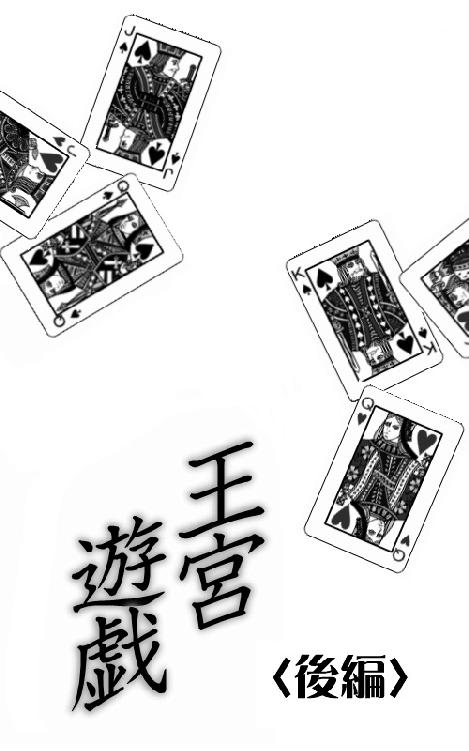
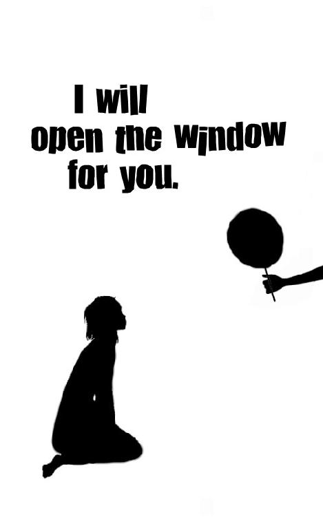

| 王宮遊戯〈後編〉 (4seasons song) | |
| 友桐 夏 | |
| (2018) | |

１
扇屋は「憎しみ」をすでに知っている。
なぜなら二年前に幼なじみの親友を殺されたから。
たとえ世間的にそれが事故や自殺と呼ばれるものであっても、扇屋にとっては殺人だ。
死と隣あわせといえるほど危険な状況、もしくは死を選ぶしかない状況まで追い詰められた者は無理やり命を奪われた被害者であり、追い詰めた者は殺人犯。そして日一日と崖っぷちに追いこまれていく被害者の存在を知っていながら助けることも通報することもせず、ただ見て見ぬふりをしていた無責任で冷酷な傍観者は殺人の共犯。つまり親友のクラスメイト全員が扇屋の敵といえる。
扇屋の親は扇屋が生まれる前に離婚していて、戸籍上はずっと母子ふたりの家族だった。けれども大通りをはさんで隣の家がたまたま祖父母と夫婦と六人きょうだいという大家族で、ひとりっ子の扇屋を進んであずかってくれたから、母親が仕事で留守の時にも扇屋が孤独を感じることはほとんどなかった。「子どもが六人も七人も同じだから」と大家族の両親は豪快に笑い、自分たちの子どもに接するのと同じように扇屋に接してくれた。
六人のなかでいちばん年の近い同性の少女こそ、扇屋の幼なじみの親友だ。
末っ子の彼女はそれでも扇屋よりひとつ年上だったから、扇屋と彼女はさながら姉妹のように一緒に育った。ふたりそろえば朝から晩までお喋りだけで楽しく過ごせる。ある日、大学受験をひかえて猛勉強していた大家族の長男に「ピーチクパーチクうるさい！」と怒鳴られたふたりは目を丸くして彼に駆け寄り「どっちがピーチク？」「わたしがパーチク？」「なんでピーチク？」「なんでパーチク？」と質問責めにし、近くで見ていた大家族の祖父母を大笑いさせた。
以後、彼女がピーチ、扇屋がパーチ。
パーチはピーチが大好きで、いつも彼女の真似をした。
ピーチが絵本を開いていればパーチも横からのぞきこみ、ピーチが箒で玄関先を掃いていればパーチも雑巾を取ってきて、そのへんを一生懸命きれいに磨いた。ピーチの両親も兄たちや姉たちもピーチとパーチで差をつけず、キャンプやドライブにはパーチも連れていってくれたし、修学旅行や卒業旅行のおみやげはピーチのぶんと同じように、パーチのぶんも買ってきてくれた。
そうして物心つく前から同じ環境で同じように育ってきたのに、ピーチの自宅とパーチのアパートのあいだを走る一本の道路で校区がわかれていたから、小学校は別々だった。
中学校は同じだから、とひと足早く小学生になったピーチがパーチをなぐさめた。
――中学生になったら、ずっと一緒にいられるよ。
一年後には朝がくるたび左右にわかれて別の小学校に通うようになったものの、帰宅してからはまたふたりで一緒に宿題をしたり、お菓子をつくったり、それを持って見晴らしのいい場所までピクニックに行ったりした。
ピーチもパーチもそろって外遊びが好きで運動神経がよかったけれど、ピーチは人と競うことが苦手らしく「次の電信柱まで競争！」とパーチが駆けだせば、ぴったりうしろについていながら決して追い抜くことはなかった。「わたしの勝ち！」と息をきらして万歳するパーチを前に「すごいね」とピーチはいつもにこにこしていた。
氏より育ちというけれど、性格のよし悪しには生まれもったなにかも大きく関係しているようだ、と扇屋と呼ばれるようになった現在のパーチは思う。
思いだすのは、ピーチの家でほかの五人と一緒に野球やサッカーの中継を見ていた時のこと。選手のだれかがミスをするたびほかのみんなは野次を飛ばしたり文句を言ったりため息をついたりしていたのに、ただひとりピーチだけは泣きそうな顔になっていた。「そうしようとしてそうなったわけじゃないのに」と彼女だけは試合展開ではなく望まないミスをして責められる他人の心の痛みを想像して悲しんでいた。
また別の日には、大家族の長男と次男が好んで見ていた格闘技の中継で特定の選手の攻撃が決まるたびピーチの兄たちと一緒になってパーチは歓声をあげていたのに、ピーチだけはどちらの選手が殴られても同じだけ痛そうに顔をしかめていた。調子にのった次男による腕と足の関節を武器にした攻撃の手ほどきも喜んで受けていたのはパーチだけで、ピーチはただ困ったような顔でそのようすを見ていた。
考え事をはじめると別の世界にいってしまうという危険な癖がピーチにはあり、そんな時は彼女が赤信号を見逃して車道に出たり電信柱にぶつかったりしないよう、パーチが隣で気を配った。そうしてやがて現実に戻ってきたピーチから「わたしはこう思うんだけど、パーチはどう思う？」と読んだ本や見た映画や、兄と姉による口論についての解釈を聞くと、今度はパーチが思考の海という別世界に旅立つ。
ひとつの問題をいろんな視点で見つめなおし、いくつもの解釈を生みだす。
他人の状況と気持ちを想像し、だれとでも好意的につきあう。
ピーチにはそれらがあたりまえにできるようで、そんな彼女の話し相手をつとめるうち、しぜんとパーチの思考力も磨かれ、語彙が豊かになっていった。
学校での出来事や新しい友達のことをパーチが口にするたび、ピーチが顔をくもらせるようになったのは、ピーチが小五、パーチが小四の夏あたりから。そのころ、ピーチはパーチと一緒に宿題をしながら、ふとこんなことをつぶやいた。
――同じ中学校には行けないかも......
驚いて顔を上げたパーチが理由を訊いても、ピーチは笑ってごまかすばかりだった。
その一年後、色とりどりの花に囲まれて白い棺に横たわるピーチの顔を小さな観音開きの窓からのぞきこんでいる時も、パーチにはわけがわからなかった。
ピーチは放課後、小学校の屋上から中庭に落ちた。
地面ではなく三色菫の花壇だったからか即死はまぬがれたものの、一度も意識が戻らないまま二日後にパーチの母が看護師として勤めていた病院で息を引き取った。
当時屋上にいたのは死亡した女子児童ひとりだった。転落した女児のそばにドッジボールが落ちていたため、屋上でボール遊びをしていた女児がフェンスの外に出たボールを取ろうとして誤って落ちた可能性がある。学校の発表はそれだけで「事故らしい」と言う声や「自殺らしい」と言う声は聞こえてきたけれど、だれも「殺人だ」とは言わなかった。
でもパーチは知っていた。
ピーチはひとりでボール遊びなどしない。
たとえ、たまたま手にしたボールが転がってフェンスの外に出たとしても、自分で取ろうなどとは考えず、だれかおとなに知らせたはずだ。目的もなく屋上のフェンスをのりこえるような危険な真似をする性格でもない。もしもピーチがそうしたのなら、そうするしかない理由があったということだ。
通夜のあと、無言のパーチを連れて、パーチの母親はピーチの両親に声をかけた。
ご存じかもしれませんが、と前置きした上でパーチの母親はピーチが職場に運ばれてきた時のことをピーチの両親とすでに成人していたピーチの兄たちと姉たちと、そしてまだなんの実感もなく呆然としていたパーチに語った。
――なにか握りしめていると気づいて、わたしが指を開いたんです。出てきたのは丸めたメモ用紙でした。カラフルな動物のイラストがついた、子どもが好みそうなものです。そこに丸まった字で、こう書かれていました。......屋上の......フェンスの、外に出て、フチを一周できたら、仲間はずれをやめてあげる。しなかったら、中学校でも......
そのメモは病院スタッフの手から警察の手に渡っている。
だから警察から小学校へも連絡が入ったはずだ。
それなのに「いじめは確認されていない」と学校は会見し、警察も動いていない。
動いたところで相手はまだ小学生。突き落としたわけでも無理強いしたわけでもないから、ということかもしれません。パーチの母親はうつむいた姿勢で低く語り、まるで自分が不誠実な学校や警察の代表であるかのように畳につくまで頭を下げた。
パーチはそれでもまだ納得できなかった。
屋上の縁を一周できたら、というからには見ていたはずだ。
やるか、やらないか。ピーチがどちらを選ぶのか、そしてそれをやり遂げるかどうか。
メモを書いた本人と、その仲間。複数人が必ず近くにいたなのに、屋上にいたのはピーチだけだと発表された。たとえそれが事実だったとしても、だれの干渉も悪意もなくピーチがひとりで落ちた、ということにはならない。
ピーチの小学校には運動会の応援で何度も行った。わたしが通っている小学校と同じように、ピーチの小学校もＬ字型だ。教室の窓からだって屋上は見える。その縁を歩くピーチの姿を追いかけて、三階の廊下や教室を走りまわっていた生徒がいたんじゃないか。薄墨とオレンジが入りまじる夕暮れ時の空の下、慎重に足を進めるピーチを見上げ、はやしたて、煽りたて、そしてボールを――......
パーチは想像する。ピーチを死に追いこんだ、あらゆる可能性を。
投げられたボールに驚き、バランスを崩して落ちていくピーチ。
落ちろ、死ね、と笑って言う声を聞き、悲しみでいっぱいの胸をおさえるピーチ。
今とまったく変わらない中学生活を想像し、ふと地上に目を向けるピーチ。
凶暴な眩暈に襲われ、なすすべもなく空に手をのばすピーチ。
考えれば考えるほど胸の奥で体積を増していく煮えたぎるなにかの存在を感じながら、ピーチの家族と一緒に一睡もしないままお通夜を過ごした。
翌日、お葬式はピーチの自宅でおこなわれ、祭壇が組まれた家のなかも広い庭も駐車場もピーチの同級生でいっぱいになった。それはまるでにぎやかなお祭りのような光景だった。まるで遠足みたいに隊列を組んでやってきたピーチの同級生は午前中の授業をつぶしてくれたこの不意のイベントに興奮しているらしく、目を輝かしてそこここでささやき交わしていた。時おり笑い声さえ聞こえてきた。しかも、おとなや学校を休んで参列していたパーチは黒い服を着ていたのに彼らはほとんどが普段どおりの私服だった。
次は二組、三組、と呼ばれる声に続いて児童の集団が足を進める。
ピーチが在籍していた四組の焼香も滞りなく進んだものの、自分の番を終えて家屋の外へ出たとたん気を抜いて友達と話しはじめたり香典返しがわりに配られたノートを丸めてふざけたりする児童もいた。ひとりうつむいて歩く女子児童に目をとめてパーチがそっと歩み寄ると、パーチが声をかける前にぱらぱらと三人の女子児童が駆け寄ってきて、悄然としていた彼女を歩きながら取り囲んだ。少女たちの興奮気味のささやき声は、四人のうしろを歩いていたパーチの耳まで、はっきり届いた。
――よけいなこと言わなくていいからね。
――言ったら次あんたが仲間はずれだからね。
その時、十一歳のパーチの心にともった憎しみの炎は、十三歳の扇屋の心で今も変わらず燃え続けている。
わたしの親友は殺された。あいつらに。
確たる理由もなく、ただ気にくわなかったというだけで。
人が嫌がることは絶対に言わないし、やらない。言葉づかいや礼儀作法もわきまえていて、でしゃばらず、公平で、心優しい。そんなピーチを嫌うのは、汚い色眼鏡をかけてまちがった色彩の世界を見ている者だけ。
心のきれいなピーチと汚い自分を勝手に比較し、その差異の大きさに勝手に腹をたて、自分が努力し向上しようというのではなく、ピーチを引きずり落とすと決めた。勉強が手につかなくなるように。笑顔が消え、周囲にだれもいなくなるように。――記憶と知識を材料に、かちかちと思考が組みあがり、ひとつの真実として、かたちをあらわす。
斎場に響く場ちがいな声に誘われるように、パーチはふらふらと彼女たちに歩み寄った。
お葬式ってこんな感じだったんだ。ねー、なんか、みんなでお寿司とか食べるんだと思ってた。見てえ、なんとか返しのこのノート、結構かわいいかも。あ、ほんと、百円ずつ払わされたけど、これ百円じゃ買えないよねえ。うわあ、もうけたー。
その日、パーチははじめて、他人の顔面を握りしめた手で思いきり殴った。
足を軸に腰をひねり体重をのせた一撃でひとりを殴り倒すと、そのかたわらで呆気にとられていたふたりの顔に続けざまに肘と拳を入れ、俊敏な獣と化して四人目に飛びかかろうとしたところで受付から飛びだしてきたピーチのいちばん上の兄に羽交い締めにされた。
悲鳴と泣き声を聞きつけ、教員らしい男女も駆け寄ってくる。
鼻や口をおさえながら「せんせえ、せんせえ」と甘ったれた声をあげ我先にと彼らにすがりつく三人と、青ざめてたたずんだままのひとり。その周囲に集まったピーチのクラスメイト全員を睨みつけて、パーチは断末魔のように獰猛に叫んだ。
――あんたたちが、わたしの大切な友達を殺した！ だからわたしも殺してやる！ あんたたちをじゃない、あんたたちにとっていちばん大切なだれかを殺す！ それが親なら親を、きょうだいならきょうだいを、友達なら友達を！ 覚えておくがいい、たとえ何年後であろうと十年後であろうと二十年後であろうと、あんたたちに本当に大切な人ができた時、その命をわたしが必ず狩りにいく！ 恋人なら恋人を、結婚相手なら結婚相手を、子どもなら子どもを！ 必ず殺す！ あんたたちが忘れたって、わたしは決して忘れない！ あんたたちがやったように、まるで事故みたいに、まるで自殺みたいに、わたしが殺す！ わたしにとっての彼女と同じくらい、あんたたちにとって大切なだれかの命を、わたしが叩き落として踏みにじって、あんたたちが今そうしたように、あんたたちの前で笑ってやるから！
教員にしがみついたまま振り向いた三人の、ぎょっとした顔が妙に似通っていた。
場は水を打ったように静まり返ったあと、じわじわと居たたまれない空気が漂いはじめた。やがて斎場となった家屋の前まで車が呼ばれ、鼻血をだした児童と口のなかが血だらけの児童が教員たちに肩を抱かれて立ち上がる。
左右をおとなに守られて、まるでただのかよわい被害者みたいに。
被害者でありながらも「相手は気の毒な遺族だから」と寛容な姿勢を見せてやっているみたいに。その凶暴な子どものことはまかせましたからね、と言わんばかりの一瞥をピーチの兄に投げかけて、ピーチの担任らしい男性教員が自分の児童にいたわりの言葉をかける。
悔しい、とパーチが唇を噛みしめたのと、パーチを捕獲したままのピーチの兄の喉からうめくような声が漏れたのが同時だった。おかしいだろう、とその表情が告げていた。おかしいだろう、なんでそいつらが被害者みたいに。なんでこっちが加害者みたいに。たまりかねてパーチが再び口を開こうとした時、一瞬早く、涼やかな声が問いかけた。
――なぜ、きちんと謝罪させないの？
声と同時に進み出たのは、かかとの高い靴をはいたひとりの女性だ。
シックなパーティドレスのような純黒の喪服に身を包んだ姿は、単色にして極限に優美な影絵の世界の女王のよう。頭にななめにのせられた小さな帽子からたれさがる優雅な黒いレースごしに、笑みぶくんだ瞳が煌めく。
負傷した児童と一緒に車に乗りこもうとしていた男性教員が振り向き、その落ち着き払った物腰の女性を見たあと、冷ややかな視線をパーチに向ける。
ちがうわ、とすかさず否定した女性の声には、どこか無邪気な響きがあった。
――親も教師も尊称で呼ばれる立場を得たからといって自動的になれるものではないってこと、意外と知られてないのが嫌よね。同級生を全員参列させることで遺族に誠意を見せたつもりかもしれないけれど、それなら前日までに服装やマナーを教えこんでおくべきだったわ。その愚かな子どもたちを愚かなまま連れてくるなんて、片手落ちもいいところ。遺族の前で無神経に笑っていた者とそれに怒りを覚えた者がいて、正すべきがどちらかなんてまっとうな参列者であれば考えるまでもないことよ。
パーチの肩をつかんでいたピーチの兄の手に、ぎゅっと力がこめられた。
胸の奥で渦巻き、噴きだしかけていたなにかが不意に勢いを失い、パーチはピーチの訃報を知らされてからはじめて、ようやく泣き伏したい衝動にかられた。
車のなかから騒ぎを見ていた三人の児童が周囲の視線を浴び、いっせいに頭を引っこめる。とがめられたのは自分だと気づいたらしい男性教員が、恥ずかしさからかプライドを傷つけられた怒りからか、たちまち顔を真っ赤に染めた。
だからといってこんな暴力を。
言いかけた彼を眼差しで制し、なにが問題だというの、と女性は可憐に小首をかしげる。
黒いレースで縁取られたしなやかな手がのびてきて、パーチの頭にそっとふれた。
――この子は「正義」をしたのでしょう。
２
災難をその身に受けるのはいつだって真っ白なスケープゴート。
だれかひとりの犠牲によって別のだれか、もしくは大勢が心の安寧や場の調和を得る。
特定の人間で構成された場が風通しの悪いものであった時、多かれ少なかれだれかがこの役割を押しつけられている。たいていの場合、もっとも気の優しい者、思慮深い者、すでに別のだれかによって傷つけられ弱っている者、もしくは差異の大きい者が。――あれよりはまし、と見下され罵られ嗤われ暴力を振るわれ搾取され、助けに入る者がなかったり進級や卒業といった変化がなければ、最終的には排除されることになる。
不健全な場に結束らしいものがあれば、たいていそこには「山羊」がいる。
雅桜が「山羊」の役まわりを押しつけられたのが自宅通学をはじめたこの春からということは、この風通しの悪い不健全な一家のなかに、それまでは別の「山羊」がいたんじゃないか。だからこそ雅桜の親たちと雅桜をのぞく子どもたちの結束が異常に強いのではないだろうか。絹はこの考えを、池に入って金魚をすくう雅桜の姿を見ていて、思いついた。
以来、事態の打開につながるかもしれないひとつの可能性としてその考えは常に頭にあったから日曜の午後はじめて雅桜の妹に会った時「この子だ」とひと目でわかった。
「......顏あわすのはじめてだっけ？ これ、妹だよ。中一の。なんか親を馬鹿にするようなこと気づかないうちに言ってたみたいで、兄貴に張り倒されたんだって。戸棚に頭ぶつけて、それ昨日の夜のことだけど、今かなり腫れてて。とりあえず冷やしたほうがいいかと思って、氷だしてやったんだけど」
もう十三時をすぎているもののこれから昼食らしく、雅桜は気だるい声で説明しながら火にかけたアルミの片手鍋をぼんやり見ている。玄関を開けて彼を呼ぶといつもの勉強部屋ではなくその奥から返事があったため、絹ははじめてそちらに足を運んだ。そして調理中の雅桜とタオルに包んだ氷嚢で側頭部を冷やしていた雅桜の妹に会ったのだった。
古びたガス台の前で、雅桜がぼそぼそ言葉を続ける。
「もし病院に行くとなったら、よけいなこと言わないようにって親がぴったりついてくるに決まってるんだ。心配でたまらないって顔して、こういう事情でこうなったって横から勝手な説明してさ。で、家に帰ってから、おまえのせいでおまえのせいでって、また怪我したことまでこっちが悪いみたいに責められて」
だからどうしたらいいかと妹が相談にきた、ということらしい。
そのあいだ当事者の彼女は一度も絹のほうを見なかった。
四頭身のキャラクターがえがかれた上下そろいの黒いトレーナーは普段着なのか、寝間着なのか。折り曲げた足ごと椅子の上にのり、右手で氷入りのタオルを頭に押しつけ左手にはお守りのように携帯端末を握りしめている。極限までうつむいて微動だにしないその姿は、怯えて穴ぐらに逃げこんだ小動物のようだ。これ以上近づいたら――無神経に手をだしたりしたら、とがった犬歯でがぶりとやられてしまいそう。
絹はそっと彼女に歩み寄り、その背中に右手を近づける。
ふれるかふれないかの距離で手をとめ、せめて体温だけでも彼女に届ける。
「頭痛とか吐き気とか、手足が痺れるとか、そういったことは？」
問いかけへの返事は首を横に振るという動作で。
そう、とうなずいて絹はちょっと考えこむ。
怪我をしたのが昨日の夜なら、皮下出血があればそろそろ症状としてあらわれていそうなものだけど。自分が親に投げ飛ばされて頭を打った時には大丈夫だと決めつけて患部を冷やしてさえいなかったのに、他人事だとかえって気になる。わたしが頑丈なだけで、この子はもっと繊細にできているかもしれない。
自分がこうだから母親もそうだ、と思いこんで無茶なことをした小学生のころと比べ、わたしもおとなになったものだ。場ちがいな感想をいだきつつ彼女に顔を近づける。
「......でも、やっぱり心配だから、ちゃんと病院で調べてもらったほうがいいわ。先週うちでも一年生の女の子が敷地内の森の奥で倒れててね、すぐに気がついたんだけど頭からかなり出血してたんで校医の指示で救急車が呼ばれたのよ。たとえ傷が浅いように見えたとしても脳に深刻なダメージを受けてる場合があるからって。幸い彼女は少し縫うだけで済んだらしいけど、頭の怪我はそれくらいこわい」
聞いているのかいないのか、雅桜の妹はかたくなに顔を上げようとしない。
絹が身をかがめてのぞきこむようにすると、さっと反対側へ目をそむける。
ふっくらした頬に大きな丸い目。その見た目は好奇心旺盛な子犬のようだ。雅桜とも共通する愛くるしい顔だちはだれにでも好かれそうなのに、不ぞろいに切られた前髪のあいだに見え隠れする黒茶の瞳は不安定に揺れ続ける。
だから、と言いながら絹は思わず彼女の背中にふれていた。
「わたしと一緒に病院に行こう」
手の下で彼女がびくっと震え、ますますからだをかたくする。
「診てもらってるあいだに児相の知りあいを呼ぶから。保険証とか支払いのことは、その人にまかせておけば大丈夫。たぶん病院から警察に連絡がいくと思うけど」
過去に自分が保護された時のことを思いだせば、話がどう進むかは予想がついた。
実際に怪我をしている子どもを前に「少しようすを見よう」などと無意味に先おくりする馬鹿なおとななんて、普通はいない。
「雅桜だって、まだあちこち痣とか怪我とか残ってるでしょう？ 証人がふたりいれば親がどう言いわけしようと、ほかのきょうだいたちがだれをどんなふうにかばおうと、これが虐待だってこと信じてもらえる。前に雅桜が言ってたみたいによけいなことしたなってあとから殴られたり閉じこめられたり、そんなことにならないよう、ちゃんと保護してもらえるから」
だから、と絹が言うのと、彼女が一声鋭く叫んだのがほぼ同時だった。
「無理っ！」
不意にからだをよじり腕を振り、背中にふれる絹の手から逃れようとする。
「無理、無理無理無理っ、こわいこわい――」
「信じて。本当に大丈夫だから。もう二度と、こんなことは」
「ちがうっ！」
悲鳴に似た叫びは耳に突き刺さるかのようだった。
絹がハッとしてからだを引くと、すばやく椅子から降りた彼女が、よろけつつ部屋の出入り口へと移動する。柱にすがりつくようにしながら青ざめた顔で肩ごしに振り向き、懇願するような表情ではっきりと告げた。
「これは、わたしが転んでできた怪我だから！」
攻撃的な鋭い声に、つり上がった目、けわしい表情。
けれども同じ境遇の子どもたちとの数年の共同生活を経て、絹はすでにものごとが自分にどのように見えどのように聞こえたとしても、それがイコール真実ではないことを承知している。怒っているように見える時、たいていの相手は怯えている。緊張から顔の筋肉も声帯もかたくなり、だから怒っているように見え、怒鳴っているように聞こえるだけだ。
この子は今、全身の毛を逆立てて、怯えている。
そうわかったからなにも言えず、文字どおり転がるように玄関のほうへ走りだした彼女のあとを追いかけることもできなかった。そんなことをしたら、たとえこちらに救いたいという気持ちしかなくても彼女をますますこわがらせてしまう。そして恐怖のあまり相手に噛みつき、噛みついたことで報復を恐れ、彼女はますます周囲に心を開くことができなくなる。そんな循環があたりまえに想像できる。
もしも初対面の時に公園の先生がどこかに通報しようとしていたなら、やっぱりわたしだって首を振って逃げだしたはずだ。親の望まないことをすれば、自分がますます親にひどいことをされる。それくらいのこと子どもだって学んでいる。だからこそ、まずは公園の先生がわたしにそうしてくれたように、信頼関係を築くことに心を砕かなければならなかったのに――状況にあせって先走ってしまった。浅はかな考えで無謀なことをした小学生のころと比べ、実はたいして成長していなかったみたい。失敗した、という思いが冷たく胸に広がっていく。
ひとり静かにガス台に向かっていた雅桜が、ちらりと絹に視線を投げた。
「......学校はテレビないから、絹は知らないんだろ。虐待だって信じてもらえたって、それでぜんぶ解決するわけじゃない。どこにどう保護されたところで、どうせそのうち親んとこに戻されるんだよ。そんですぐ親に殺された子どもが実際にいる。親がいないとか経済的にどうしても無理って境遇の子どもならともかく、こういう家があって親もそろっててって子ども、いつまでも税金で食わせてくれるはずがない。絹みたいに、親が一発で実刑くらうレベルの怪我させられたってんなら、またちがうだろうけど――打撲くらい、もののはずみだとかなんだって言い逃れできそうだし」
ダイニングテーブルにはタオルと氷嚢が投げだされている。
その横で立ち尽くす絹に、雅桜は淡々と自分の知る事実を伝える。
「しかも、あいつの怪我やったの今回は親じゃないし。おれの痣とか見せたって、ぜんぶ子ども同士の喧嘩によるものだって親も弟たちも言いはる。で、保護された直後から引き取ります引き取ります言ってくるに決まってるんだ。あいつら、子ども連れてあちこち遊びまわって『子煩悩』って言われること誇らしく思ってるみたいだから。それ、たんに絶対に自分にはむかわない子分と太鼓持ち引き連れて自分たちの行きたいとこ行ってるだけなんだけど。でも傍目にはめちゃくちゃ子ども好きな親っぽいから、親の評判自体はそう悪くない。そういうタイプの親んとこ返されて、実は前よりひどい目にあってる子どもだって、きっと大勢いるんだろうな」
食器棚から大きな陶器の碗をふたつ取りだし、菜箸を使って片手鍋の中身を移す。
仕あげに刻んだネギを散らし、黒コショウをさっと振る。
いつから自炊していたのか、もうすっかり慣れた手つきだ。湯気のたつそれをテーブルに運び、雅桜が生真面目な顔で絹を見る。
「ふたりぶんつくったから、責任とって食べて」
「......いただきます」
具材は千切りのキャベツと人参と半熟卵。
袋からだして茹でればいいだけの醤油ラーメンも、材料と手間を加えたぶんだけ手料理らしい趣になる。彼が妹のためにつくったものだと思うと申しわけなさと情けなさで喉がふさがるようだったけれど、だからといって断るのは「食べて」と言ってくれた雅桜の気持ちより自分の気持ちを優先させるということだ。よけいなことをしてくれた、出ていけ、と言われないだけでもありがたいのに。絹は胸の前で神妙に両手をあわせる。
借りた箸とレンゲを使い、しばらく黙々と手と口を動かす。
テーブルの向かいで雅桜も同じものを食べている。
だれかがだれかのためにつくったものを食べるのは、とても贅沢なことだ。
親の手料理を食べた記憶がまったくない絹にとって、手料理はそれだけでごちそうと呼べる価値を持つ。まるで寒空の下、数日ぶりの炊きだしにありついたみたい。とても懐かしい気分。報酬を得るための仕事としてではなくだれかが他人のために自分の時間と労力を無償で削った結果として存在するものだと思うと、もう無条件においしいと感じられる。
じわじわと心が温まるにしたがい――温かい食べ物をからだに入れて体温が上がるにしたがい――自己嫌悪の沼に沈みかかっていた気分が急速に浮上していくのがわかる。冷たいものは下降し、温かいものは上昇する、自然の摂理そのままに。
「証人が複数になれば、と実は前から思ってたの」
急に力強く話しだした絹を前に、雅桜は食事を続けたまま目の表情ではっきりと笑う。
お腹が満たされたとたん元気になるなんて子どもみたいだな、と思ったようだ。確かに、と認めると自分でもふきだしそうになり、絹は慌てて頬を引きしめる。熱いラーメンをすすって間をとるついでに、頭のなかで状況と情報の整理をはじめた。
あの人の言うことをきかなければ、次は自分がああされる。
幼稚園児はともかく、そこそこ成長した子どもたちが親たちに反抗しないのは、そうした場合どんな目にあわされるか、きっとこれまでにさんざん見てきたからだ。と同時に、おそらく親たちと一緒になって「山羊」を罵ったり見下したりしてきたから。
雅桜の弟や甥に共通して見られた暴力傾向は、なにがなんでも虐げられる側にはなりたくない、という臆病心の裏返し。「弱い犬ほどよく吠える」というのは昔から広く知られた事実で、実際わたしの親だって精神的な強度となる誇れるものがなにもなく世間的には明らかに弱者だったからこそ、自分より弱い者への――なにも持たない自分よりさらになにも持たない子どもへの――暴力でうさ晴らしするしかなかった。
弱い心は、冷たい心。だからこそ雅桜のきょうだいたちは現時点での「山羊」である雅桜の味方をする気はないし、むしろ悪いのはあいつのほうだと「山羊」を指さすことで自分の立場を守りつつ優越感にひたり、結果的に罪深き親を守るという罪をかさねる。
こうなるともう「支配と被支配」の構図というより「犯人と共犯者」の構図に近い。
そうして加害者と共犯者たる傍観者が自分を守ろうとする時、「山羊」が手を結べる可能性のある者は、すべてを自分のこととして想像できる感性を持つ者――あるいは、実の親に殺意を覚える雅桜に共感できてしまう絹と同じ、災いの原因である「山羊」として一方的に指さされた過去を持つ者だ。
「彼女は、雅桜の味方になってくれると思う」
次こそうまく説得する、という決意をこめて雅桜に告げる。
雅桜は器を持ってスープを飲み干し、ひと息ついてから絹のほうへ顔を向けた。
「こわいこわい言ってたろ、あいつ。あれ、絹の言ったとおりに行動したあと、今より悪い状態になるってことしか想像できないからだよ」
言いながら彼は椅子を立ち、テーブルのわきから絹を見下ろす。
「おれは学費さえ払ってもらえれば無期限の謹慎ってのも解けるだろうし、また学校に戻れると思う。そのまま親とかかわらず、独立できればいちばんいい。けど、あいつにはここで親とか兄貴とか弟たちと暮らしていくって未来しか想像できないんだ。ここに引っ越してくる前からまともに登校してなくて、おれより年季の入った引きこもりだし。基礎学力ってのがまったくないから、おれみたいに寮制の学校に逃げるとか親に頼らないで生きるって選択肢もない。たぶん、ほかのきょうだいの素行が災いしてるんだろうな。あいつはおとなしい性格だけど、だからこそあいつに仕返ししたり、どっかのだれかを自殺に追いこんだなんとかの妹だって学校で言いふらしたやつがいたらしいから」
「......勉強なら」
「あいつだけの問題じゃない」
雅桜は首を横に振り、毅然とした口調で絹をさえぎる。
「おれが教えようとしたこともあるんだ。おれより下の四人に。けど親たちになんだかんだ邪魔された。普通は子どもが勉強するの喜ぶはずなのに、ここじゃむしろ目ざわりだって顔されるんだよ。おれみたいに親の言うこときかないやつ増やされてたまるか、ってことだろうな。今なら偉そうにしてるだけで偉いんだって勘ちがいしてもらえるけど、子どもがみんな自分の頭でものを考えられるようになったら、ただの空威張りだってばれるもんな。それ、無意識的にでも、わかってるんじゃないかな」
「だからこのまま子どものままでいろ、と？」
「そう。で、たぶん子どものほうも、もう薄々わかってるんだ」
かたい口調で言いながら、空の器を手にしてガス台横のシンクへ向かう。
「自分たちが堂々としていられるのは、家族でかたまってる時だけだってこと。ここでなら親の言うこときいてれば居場所をあたえてもらえるし、今なら結構いい暮らしもできる。他人に馬鹿にされたり責められたりせずに済む。おれと勉強するとか、おれの味方するとか、親の機嫌が悪くなるようなことしなければの話だけど。でも外に出たら、まちがいを指摘されたり批判されたり、今まで黙って親の言うこときいてたおまえも悪いって責められたり、なんにも知らないんだなって馬鹿にされたりするかもしれない。だからこそ、『こわい』んだよ」
変な話、と雅桜は苛だちあらわに吐き捨てる。
「話の通じない親もこわいし、そういう家の問題を明らかにして一時的にでも親と引き離されるのもこわいってことだ。これまで家族以外の人間とまともにコミュニケーションとってきてないから、他人もこわい、社会もこわい。で、だったらなるべくだれともかかわらず閉じこもってたほうが、ましだって思ってるんだろうな。ここ、地獄なのに」
水音が響き、食器や鍋を洗う音がそれにかさなる。
絹は顎を引いて残りの麺を口に運びつつ、雅桜の一家のことを考える。
人数が多いぶん複雑だとは思っていたけど、想像していた以上にややこしい。
残念だけど今回わたしの体験は、ほとんど役にたたないみたい。わたしは親の言いつけを守って他人を避けていただけで、身内以外の人間に恐怖心をいだいていたわけじゃなかった。だから公園の先生だけでなく入れ代わり立ち代わり病室を訪れてくれた児童相談所の若い職員たちや年配の児童心理士とも、すぐになじんだ。彼らはわたしの親よりずっと、すんなり話の通じる相手だった。
本来なら救いとなるはずの言葉を耳にしたとたん震えあがって逃げだした雅桜の妹の小さな背中を思いだし、思わず知らずため息をつく。
彼女の心に届く言葉を、わたしは持っているだろうか？
「......雅桜のおかげで、彼女がこわいこわい叫んでた理由が納得できた」
「こっちが意を酌んでやらないと、あいつらみんな、状況を分析するとか自分の思いを人に伝えるスキルっての、ぜんぜんないから」
泡だったスポンジを握ったままの雅桜が、絹のつぶやきに律儀にこたえる。
「はからずも、野生を通訳する技術が磨かれてきた」
「いずれ役にたつ......かもしれない」
絹は上の空で返しつつ、ふと思いついて眉根を寄せる。
スケープゴートと呼ばれる「山羊」と「角笛」は、よく似ている。
ちがうのは「山羊」が無力な犠牲者であり「角笛」が勇気の体現者であるということ。
たとえ同じ辛苦を味わうことになったとしても、ただその一点で「角笛」は被害者意識を持つことなく困難に向きあうことができる。親に憎しみや殺意をいだきながらも別の方法を考えるべきだという説得にも一応ちゃんと耳をかたむけていてくれる雅桜は「角笛」になりえるけれど、彼の妹はこのままではただの「山羊」だ。
こわいこわいの臆病心は、なにがなんでも虐げられる側にはなりたくない、という切迫した思いにつながる。そしてそれは「被害者が加害者に変わる」というグロテスクな現象の発端にもなる。なにがなんでも自分を守るということは、他人はもちろん我が子さえ、盾にも踏み台にもするということ。もしも彼女が――そして雅桜の弟たちや甥がこの危険な心理状態のままおとなになり、やがてもしも人の親となったなら、臆病な彼女や彼らの子どもたちに待ち受けるいちばん可能性の高い未来のかたちは......
ごちそうさまでした、と弱々しい声が喉から漏れた。
絹は肩を落として再び大きな息をつく。
洗うから、と振り向いて手をのばした雅桜が怪訝そうに絹を見つめ、空の器を受け取ってから不意にうんざりしたように顔をしかめた。
「絹みたいに早い段階でちゃんとしたとこに保護してもらえれば、百パーセント親が悪いってことでだれも文句つけないのにな。あいつら、このまま成人したら、もうぜんぶ自分たちの責任になるってわかってんのかな。二十歳こえてんのに親のせいにするな、って言われんのに。今ならまだ、ぎりぎり最初からやりなおすってことが可能なのに」
「ああ......すごい、雅桜。わたし、今まったく同じこと考えてたの。あれだね、これは、パスカルの原理だ」
「絹の冗談は斬新すぎて笑えない」
「早い段階での保護が本当に重要だと思うの。もしくは、早い段階で適切に親を指導か教育できればいいんだけど。そしたら彼らだけでなく、未来の被害者さえ救うことができる」
「――って、おれも思ってるよ。絹はずっと反対してるけど」
「手段は選ぼうよ」
絹は苦笑まじりに雅桜に告げる。
そのかたわら、疼くような痛みを覚えて胸をおさえた。
真っ赤な顔でアイロンを振り上げる母親の姿と、怯えて硬直していた雅桜の妹の姿が頭のなかで奇妙にかさなる。もしかしたらわたしのあの凶暴な母親も、無力な「山羊」として過去のどこかでだれかに虐げられたり、虐げられているだれかをなすすべもなく見つめていたことがあるのかもしれない。そうして無力感と臆病心だけを得たのかもしれない。
誇れるものがなく心が弱いから、暴力を振るう。それならその弱さこそ罪だと責めていた心の片隅に、ほんの少しだけ憐れみが生まれる。だとしたら――どうしてだれも、子どものうちにあの人を助けてあげてくれなかったの？
洗い物を終えた雅桜が振り向き、なにか思いだしたように眉を上げた。そういえばさ、と言いながら手をのばし、テーブルに投げだされていたタオルと氷嚢を取る。
「さっき絹が言った、森で倒れてた一年生って、なんだったの」
「事故......らしいんだけど」
絹は雅桜の質問にこたえながら、ますます気が重くなるのを感じる。
「だれかに殴られたようだって、最初は少し騒ぎになったの。見つけたのは三年生の比良坂さんだったんだけど、倒れていたのを抱き起こしたら頭に怪我してるのがわかって、近くに大きな石が不自然に転がってたからって。でも、救急車が着く前に目を覚ました本人に訊いてみたら、走ったあと急に立ちどまったせいで眩暈を起こしただけだって。よろけて倒れた拍子になにかに頭をぶつけたみたいだってこたえたらしいわ」
検査の結果、骨や脳に異常はなかった。
だから手あてを終えて一年生はその日の夜には学校に戻ってきたけれど、気分が悪いからと先週はそのまま紅霞寮に閉じこもってしまった。だからこそよけいに、本当はなにかあったんじゃないかと代表生徒たちが――特に三年生のふたりがぴりぴりしている。絹は経緯と現状を説明しながら、自分もまた同じように感じていることを雅桜に伝える。
「先週のその日、同じ時刻に森林区域を歩いていた子を探して話を聞いたそうだけど、怪我をした一年生が走ってる姿を見たという生徒はひとりもいなかったらしいの。うつむいて歩いてる彼女とすれちがったとか、気分が悪そうだったって話してくれた子は何人かいたそうだけど。もちろん走った直後でなくても眩暈を起こして倒れることはありえるけど、だったらわざわざ『急に立ちどまったせいで』なんて言う必要ないでしょう？ だから......もしかしたら、身近なだれかをかばってるんじゃないかって」
「石で殴られたなら、死んでたっておかしくないのに？」
「実際はまあ軽傷だったわけだし」
それこそ、やったのが女の子だったから、とも考えられる。
犯人たる加害者が被害者の彼女と同じ一年生の女の子だったから、凶器を振り下ろす勢いがたりなかった。もしくは長男に張り倒されて戸棚に頭をぶつけたという雅桜の妹と同じように、殴られたのではなく突き飛ばされて倒れたところに、たまたま石があっただけ、ということなのかも。
「出来心というか......限りなく事故に近い事件であって、だから相手が処分を受けるのは忍びない、ということじゃないかなって。だとしたら被害者の彼女の気持ちも考えて、今の段階ではあまりおおごとにしないほうが、とわたしには思えるんだけど。でも比良坂さんや遠早くんはそれとなく犯人探しをはじめてるみたい。もともと人あたりのいいふたりだけにね、構内で見かけるたび、ずいぶん怒ってるなって感じられるのが、すごく心配」
「それ、さっきのあいつと同じじゃないの」
雅桜は眉間に皺を寄せた仏頂面で、水の入ったグラスをふたつテーブルにおく。
「絹は結局、楽観的というか......ものの見方が『善』なんだな」
「どうして？ どのあたりが？」
驚いて訊き返した絹の向かいの椅子を引きながら、雅桜は大袈裟に肩で息をつく。
「学校だって、家と同じだろ。毎日決まった顔ぶれで一緒に過ごして、そう簡単には逃げられない。あと何年かずっと一緒に暮らさなきゃいけないとしたら、だれそれに殴られたとか、そんなこと言わないんじゃないかってこと。言ったところで相手が確実に退学になるとは限らないし。今後のこと考えて、なるべく波風たてずにおこうと思うんじゃないの。相手を守るってんじゃなく、自分を守るって意味で。だから三年の代表生徒は自分たちで犯人を見つけようとしてるんだよ。今のうちにつかまえておかないと、被害者の子が危ないからだ。被害者が黙ってたからって加害者は感謝なんかしないもんな。むしろ、あいつは言わないんだって学習して、次はもっとひどいこと、するかもしれない」
「そんな......」
絹は言いかけた言葉を呑みこみ、テーブルに肘をついて考えこむ。
そんなことない、とは言いきれない。雅桜の弟たちを例にあげては失礼だけど、年少者でも並はずれて凶悪だったり残酷だったりする者はいる。なにより自分を優先し、ばれなければどんなことをしてもいい、とまるでそれが常識であるかのように考えている子どもだって珍しくない。これまでに見聞きした少年犯罪のニュースやドキュメントを思いだしてみれば、それらが事実であることはとっくにわかりきっている。
にもかかわらず、わたしが三年生のふたりや雅桜とはちがった考え方をしたのは、被害者の一年生がかばったとすれば、怪我を負わせたほうもまた一年生である可能性が高いと思ったからだ。だからその小さな女の子を「犯人」と呼んで狩りだすことに、抵抗を覚えた。人生の早い段階で親への不信感を刻まれたせいか、わたしは自分より年長の者に対しては油断なく考えをめぐらせることができるのに、年少の者が相手となると、たちまち判断が甘くなってしまう。
年下は無条件に「守るべき者」だと感じる――というのは欠点ではないはずだけど、それで被害を受けた一年生を再び危険にさらしてしまったら、元も子もないのに。
「その殴られた子、ほんと危ないと思う」
雅桜は顔をしかめて懸念をささやく。
「一度おかしなやつに目をつけられたら、たいていの場合だれも助けてくれないから。巻きぞえになりたくないって、それまで仲よくしてたやつでも離れてくんだ。ま、わかるけどね。加害者なんか、結局はみんな言葉の通じない『獣』だから」
「......離れてくだけなら、まだいいかも」
絹はため息まじりにつぶやき、グラスの水をひと口飲む。
本当に恐ろしいのは「こわいこわい」が蔓延して、まわりがみんな加害者の側に立つことだ。一匹の山羊が話の通じない大きな獣にいたぶられ、血を流して鳴いている。けれどもその犠牲があるからこそ、ほかの山羊たちは周囲でのんびり草を食んでいられる。
そして傍観者もまたじわじわと加害者に変わる。傷ついた山羊の姿を目にして罪悪感を刺激されたくないばかりに、まるで汚いものであるかのように被害者を見下しはじめる。
そのガス抜きによって「本当にまちがっているのはなんなのか」――「本当に悪質なのはだれなのか」という根本的な問題を隠そうとしている者がいる、という事実に気晴らしとして無垢な「山羊」を追いまわしたり要らないものとして追いだした新たな加害者たちが気づくことはまずない。雅桜や彼の妹とその親兄弟との構図でもあるこの関係は、そのまま学校で起こる「いじめ」の構図でもある。
多くの学校がそれを認めず、教職員が「気づかなかった」とくり返す理由でもあり、多くの親が自分の子どもにさりげなく「やられるほうにも悪いところがある」とか「チクるなんて卑怯者のすることだ」などと内部告発を恐れる不正な経営者のように加害者側の価値観をふきこむのとも同じ理由だ。「過去に加害者や傍観者であった者」は「過去に被害者であった者」の何倍もいるに決まっているけど、果たしてその何割が正しい倫理観を持って子育てしていることだろう。
なにがなんでも虐げられる側にはなりたくない。なにがなんでも自分を守る。
こわいこわいの臆病心は、自分の利益や立場を守るため、躊躇なく他人を――「山羊」を生贄に捧げる。
「仲間が......」
これまでに何度か接したことのある、利発そうな見た目と裏腹に純朴な性格の一年生の顔を思いだしながら、絹は言いかけた言葉を途中で呑みこむ。
加害者と共犯者たる傍観者が自分を守ろうとする時「山羊」が手を結べる可能性のある者は、すべてを自分のこととして想像できる者と、同じ傷を負ったことのある者。彼女にも手を組める仲間がいればと思ったけれど、今年の一年生は問題が多い。
すでに別の女の子が不登校に追いこまれているだけではなく、どのクラスにも目立って性格のきつい子がいて、複数人の生徒がすでになにかしらの被害を受けているという。例年であれば正義感の強い子たちが立ち上がり問題解決に導いたり、感受性の強い子たちが不安な状況をルームメイトの上級生や教員に話すことでフォローの必要性を明らかにしたりしてくれる。それによって加害生徒と被害生徒、双方のルームメイトや教員がそれとなく注意したりフォローしたりしてようすを見ることになるのに、今年はまず報告自体がほとんどない。それでも先月まではクラス内の雰囲気がどうだとかいった些細な情報がわずかながらも上がっていたのに、今月に入ってからは完全に途絶えた。
一年生限定のおまじない――王宮遊戯が広まったせいだ。
嫌がらせをおこなう生徒がいなくなったから、というのが主だった教職員による平和的な解釈。もっと陰湿な嫌がらせにシフトしたから、というのが絹の解釈。
自分が被害を受けることによって「ここに罪がある」と明らかにするのが「角笛」の役目だけれど、おそらく王宮遊戯というものは、恋のおまじないを隠れ蓑に悪意の主を守る働きをする。だからこそ加害者はリスクを負わずそれをくり返すことができ、そして被害者は精神的なダメージを受け続けながらも証拠と犯人を明確に結びつけられず、罪を告発することができない。
それでも森での出来事が事件と呼べるものであり、あの純朴な女の子が小さな胸に勇気を秘めた「角笛」だとしたら、怪我の理由を隠しはしなかったはずだ。雅桜の言ったとおり今後の生活を考え黙っていることを選んだのなら、彼女もまた無力な「山羊」ということになる。これは転んでできた怪我だから、と叫んで逃げていった雅桜の妹と、奇しくも怪我の場所から言いわけまでまったく同じだ。
気が滅入るのに比例して、からだが重くなっていく。
絹はゆっくりと上体を起こし、椅子の背もたれに体重をあずける。
しばらく天井を仰いで考えこんでみたもののこれといった解決策は浮かばない。反動のようにがっくりと顔をうつむけた時、テーブルの下に落ちている赤い携帯端末に気づいた。
お守りのように握りしめていたはずなのに――叫びながら立ち上がった時、ポケットに入れたつもりが滑り落ちてしまったのだろうか。手をのばしてそれを拾い上げると、なにげなく画面をタップし、表示されたパスワード入力画面をじっと見つめた。
「......信頼してまかせてくれれば、必ず守ると約束するのに」
思わず暗い声で不満をつぶやく。
「どうしてなにもしないうちからあきらめてしまうんだろ。自分ひとりでどうにかしようなんて思わなければ、臆病心だって出てこないと思うんだけどな」
「それで失望するのもこわいんだって」
「失望？」
「そ。他人に相談したところでなにもしてもらえなかったり、おまえが悪いとかって逆に責められたりするかもしれない」
雅桜はあっさり絹の疑問にこたえ、教科書を取ってくるからとテーブルを離れた。
ひとりでどうにかしなければと思うから不安が出てくる。
他人に相談して駄目だったらと考えると、恐ろしくなる。
これといった理由もなく憎まれ罵られ傍観されているという事実から、自分は無価値だと自分で思いこんでいる。だから助けを求めるという本来もっとも簡単な方法がただのリスクでしかない。これ以上だれにも傷つけられたくないからひとりを選び、ひとりを選んだから不安が消えることはない......
絹はともに頭に怪我を負ったふたりの年少者の心理を推考しながら再び背中を丸めて頬杖をつき、子どものように口のなかに空気をためる。
同じ状況でも「山羊」ではなく「角笛」に成る者がいるように、ただの傍観者にとどまる気などさらさらなく全力で手を差しのべることを選ぶ者だっている。公園の先生に助けてもらった過去を持つわたしには同じように苦しんでいる年少者の助けになることこそあたりまえだと思えるけれど、なすすべもなく被害を受け続けた者の心は「自分は自分／他人は他人」という加害者側の価値観で汚染されているのかも。
自分と他人は、つながっていない。
自分なら他人を助けたいと思うけれど、他人はきっとそう考えない。
傷つけられ救われなかった者の考え方が必然的にそう変わっていくのだとしたら、まずはやっぱりつながりを回復させるところからはじめなければ。信頼を得なければ、どうにもならない。そのためにできることはただひとつ、「この人なら」と思ってもらえるような自分の姿を常に周囲に表明すること。ものすごく遠まわりではがゆく思えるけれど、求められてもいないのに第三者が割りこんで解決してやるのでは、当事者である被害者の心に無力感や無責任さを植えつけるだけになりかねない。命にかかわる状況であればすみやかに保護すべきとはいえ――ものごとは長期的に見なければ。
やがて勉強道具一式をかかえて戻った雅桜がそれらをダイニングテーブルに積み上げるのを見ながら、絹はためこんでいた空気を大きなため息に変えて一気に吐きだす。赤い携帯端末をテーブルにおくと、ちらりと母屋の方向に顔を向けた。
「勇気ひとつで、解決するのに」
「――自分を守ることを考えたら、もう勇気はだせない」
書きこみだらけの教科書に目を落としたまま、雅桜が的確に真理を述べる。
３
用意するのは一枚の絵札と一匹の「山羊」だ。
きみが山羊の心を射とめたいと願うのならば、選ぶべきは赤の絵札。
王は三日。女王は二日。兵士は一日。
日数と威力を示す絵札を山羊におくれば、その瞬間から赤の遊戯がスタートする。
きみは無害な民にまぎれ、絵札のおくり主であることを気づかれず山羊と「会話」することで、まじないを完成させなければならない。首尾よくことをなし遂げた暁には、きみはきみの望んだものを、山羊から奪いとっているだろう。
この王宮遊戯は十月三十一日に終わる。
４
先週わたしのロッカーに入れられていたスペードの王宮カードは、なんとなく調子が悪いからと下手な理由をつけて学校を休んでいるあいだに無効となった。けれども毎日まいにちクラスメイトのだれかから優しげな言葉とともに届けられる授業のノートに、まるで栞のように新たなカードがはさまれていたため、言葉のやり取りに注意を払わなければならない期間は延長されるばかりだった。
意外なことに代表生徒の訪問や呼びだしはなく、かわりに三年生のルームメイトを介して将棋の本が届けられた。遠早さんの私物だという三冊は、なるべく同級生と顔をあわせずに済むよう食事も寮で済ましていたわたしの退屈しのぎに役だってくれた。
そして月曜の朝、ロッカーを開けると、スペードの王宮カードが三枚入れられていた。
またこれか、とうんざりしつつ回収し、鞄に入れる。
そのあいだにも背後を通りすぎる同級生から挨拶の声をかけられ、ごく義務的に「おはよう」と返した。今のはたぶん、恋のおまじないの王宮遊戯だ。告白のその日までに告白相手だけでなくなるべくたくさんの人と言葉を交わすことでエネルギーが高まり、告白の成功率が上がると信じている無邪気な生徒。こういう子の多くは挨拶を返すのが遅れると、たちまち不安そうな、泣きだしそうな、懇願するような表情になる。
一方、恋のおまじないではない王宮遊戯をしている生徒の多くは、せっかく挨拶してやったのになぜ黙っているのか、とばかりに圧力のある目でこちらを睨む。そしてわたしが挨拶の言葉を返せば、罠にかかったなとばかりに嬉しそうににんまり笑い、わたしが無言で歩き去れば「挨拶したのに無視された」と被害者の顔で吹聴する。
そこが紅霞寮や校舎の外で、周囲に教職員や上級生がひとりでもいれば、もうわたしの負けが決まったようなものだ。仮にその教職員や上級生に洗いざらい事情を話し、わたしの行動を理解してもらったとしても、今度は「一年生限定のおまじない」を無関係な者に話したとして、同級生のほとんどからうしろ指をさされることになるだろう。せっかくわたしたちは楽しんでいたのに――と、赤い王宮遊戯をしていた生徒たちからも恨まれ、黒い王宮遊戯をしていた生徒たちからは「ざまあみろ」と嘲笑われることになる。
ずる休みの三日間と土日をはさんだおかげで、こうも冷静に分析できるようになった。
わかる、というのは心強いものだ。
幽霊の正体見たり枯れ尾花。セミ科は噛みも刺しもしない。
そういうことか、と理解できれば無闇に怯えなくて済む。先週の動揺が嘘のように、なにも見ても聞いても心が騒がなくなった。王宮カードのスートと記号を確認したら、あとはわたしに声をかけてくる生徒を注視し、だれがおくり主であるかを見極め、今後のために記憶しておく。当面わたしのやるべきことは、それだけだ。
物理的な嫌がらせではなく精神的な攻撃であって見た目に「いじめ」らしいところがないから、加害者である相手側だけでなく、被害者であるわたしのほうも人の目を気にせずに済む。恋のおまじないである赤い王宮遊戯と同じく、恋のおまじないではない黒い王宮遊戯もまた双方に利点を約束することで巧妙に広がり続ける。
火曜、水曜、と一日すぎるごとに黒い王宮カードがたまっていく。
にこやかにわたしに声をかけてくる同級生のひとりひとりに挨拶を返しながら――この子は大丈夫と判断して言葉を返した相手の目に直後パッと意地悪な光が浮かぶのを確認しながら――わたしの心はただひたすらに凪いでいた。
悲しくはない。悔しくもない。ただ現実が目の前にあるだけ。
世界がかたちを変えたのだろうか。
それとも、わたしのかたちが変わったの？
先週以前の世界と今週からの世界はまるで別のものであるようだった。わたしがそれをはっきりと実感したのは、十月の第四週――木曜日の朝の騒ぎを目のあたりにした時。
三組の教室に入ってまもなく、廊下で悲鳴とも歓声ともつかない声があがった。
そこで再び廊下に出てみると、一組の前の廊下に大きな人だかりができていた。
スカートを広げてうつ伏せに倒れている女子生徒がいて、そのまわりを七、八人の女の子たちが囲んでいる。「大丈夫？」「どうしたの？」の合唱が大袈裟なほど聞こえてくるのに、彼女たちはただ突っ立っているだけ。倒れている子に手を差しのべたり、床に膝をついたりする生徒はひとりもいない。その異様な状況のなか、教室から飛びだしてきた鹿乃子が倒れ伏したままの生徒に駆け寄り、犬神っ、と声をかけた。
犬神は、その呼び名のとおり犬好きで知られる一組のはぐれ者だ。
彼女が書いた「歴史上の人物とわたし」という課題作文は出だし二行のインパクトが強烈だからと一学期に教材として使用され、しばらく学年中の話題をさらった。
――菅原道真が羨ましい。
――憤死して神になれるのなら、わたしは犬の守り神になりたい。
その独特の感性をのぞけばいたって気のいい女の子なのに、一部の我の強い生徒からしょっちゅう言いがかりとしか思えない言葉を投げつけられ、そのたびぺこぺこ謝っている。今月第一週までのわたしと同じように、相手があれほど不愉快な態度を示すからには自分になにか非があったんだ、と素直に反省してしまうタイプの生徒だ。ただなにかしら自分とはちがっているから、などといった理由で悪意をまき散らかし嫌がらせをくり返す者が存在するなんて、犬神もわたしも知らなかった。
犬神は気を失って倒れたわけではなかったらしく、抱き起こした鹿乃子にしがみついている。ひどく怯えていて口を開くことなどできない状態なのは明らかなのに返事を求める「大丈夫？」の合唱はやまず、犬神の名が連呼される。
クラスメイトを気づかう思いやり深い生徒たちという演出でカムフラージュしているつもりかもしれないけれど、犬神の頭に腕をぐるりとまわして鹿乃子が彼女の耳をふさいでやっているのを見れば、これがなにかわからない一年生はすでにほとんどいないはずだ。かかわりたくないとばかりに目をそむけて素通りする女子生徒もいれば、おもしろそうに見ている男子生徒も数人いる。
相手の心を奪うためのおまじないである赤い王宮遊戯に使われる絵札のハートは、恋の予感に躍動する「赤い心臓」。対する黒い王宮遊戯に使われる絵札のスペードは上下が逆転した「黒い心臓」で、確かそれには剣の意味がある。深々と剣を突きたてられ、やがて真っ黒に干からびた哀れなだれかの心臓だ。
心を奪うのではなく、命を奪う。
そのカードをおくられることは、だれかに死を望まれているということ。
言葉のやり取りによっておまじないが成立すれば死の呪いをかけられたにひとしく、おまじないを信じている度合いによっては死刑宣告にもひとしい。ただ声をかけられただけ――ただ挨拶されただけ――なのに、それ以前に黒い王宮カードを一枚受け取っていただけで、わたしたちは文字どおり心臓をつかまれたようなショックを受ける。
しかもひとりの生徒が特定の生徒に対し一度おこなうのみの赤い王宮遊戯とは、ちがう。黒い王宮遊戯はひとりの生徒が複数人に対し同時に――しかも連続しておこなうことが普通にありえる。その上、赤い王宮遊戯には恋愛成就か失恋という終わりがあるけど、黒い遊戯にそれはない。おまじないが広まってやがて一か月が経つのにいまだブームが衰えないのは、この黒い遊戯に興じる生徒がいつからか数を増やしていたからだった。
わたしはそっと足を進め、犬神と鹿乃子を取り囲む集団の背後で、足をとめた。
周囲にはほかに数人の女子生徒がいて、口々にささやき交わしている。
だれ、倒れてるの。
犬神だって。
ああ、あのおどおどした子。
そいえばさ、引きこもってる病気の子も倒れたんだって。鳥飼さん、大慌て。
聞いた、聞いた。ねえ――すごい効果。
世界はいつからこんなにも醜くなっていたんだろう、とわたしは静かに考える。
いつか誤解が解けてジュエルともほかのみんなとも仲よくなれると思っていたけど、そもそも彼女たちはわたしにとって、仲よくなるべきヒト科の同種だったのだろうか？
鹿乃子に肩を借りて犬神がよろよろと立ち上がった時、一組と二組のあいだにある階段をのぼって、ちょうど扇屋が登校してきた。いつもどおりの不機嫌顔で集団の外枠に加わり、なんなの、ととがった声を響かせる。わたしは彼女と目をあわせ、見ればわかるという意味で中心のふたりに眼差しを移した。扇屋は治療跡を綿布でおおったわたしの頭に目をとめつかのま戸惑ったようすを見せてから、人垣の奥に注意を移す。
顔を隠した状態の犬神を抱きかかえて歩きだした鹿乃子の前にさりげなく立ちふさがった大柄な少女は、鹿乃子たちと同じ一組の生徒だったはずだ。
「ねえ、花垣さん。川上さんのようすどうなの？ 大丈夫そう？」
「......保健室に連れていきます」
声をかけられた鹿乃子が、一拍はずして質問にそわない言葉を発する。
それでも声をかけた生徒にとっては「言葉のやり取りが成立した」と受け取れるものだったらしい。じわっと口の端をつり上げ、近くの数人に目配せをする。黒い王宮カードのおくり主たちはみんな目あての山羊と会話できた時、あの醜い笑顔をこちらに見せる。
瞬間、扇屋の顔から剥がれ落ちるように表情が抜けた。
直後、彼女の全身から怒りとも覇気ともしれないなにかが噴きだすのが感じられた。その圧力に息苦しさを覚え、胸をおさえる。見ればわたしのほかにも何人か、ハッとした顔で扇屋を見ている生徒がいた。気まずげに顔をそむける生徒も少し。
「あんたたち――」
うめくように言いながら足を踏みだした扇屋の腕を、だれかがつかんだ。
「放っておきなって、扇屋には関係ないことなんだからさあ」
「関係なくない！」
乱暴に手を振り払った扇屋が前を見たまま一喝する。
すると彼女の背後で、その激しい言葉を浴びせられた二組の女子が――醜く笑った。
場ちがいに楽しげな笑い声をあげたのは、鹿乃子に声をかけた一組の女子だ。それぞれ黒い王宮カードのおくり主らしい理性のとぼしいふたりによる、あまりにひどい連係を目のあたりにして、わたしは魂そのものが震えるような恐怖を覚えた。
あの子たちは――わたしとはちがう。
なにか根本的な部分が、わたしや犬神や鹿乃子や扇屋や、ほかの理性的な生徒たちとはまったくちがう。ヒト科の姿に似せた別の生き物が、わたしたち人間の領域に平然とまぎれこんでいるかのよう。まるで温厚な草食動物に擬態した獰猛な肉食動物みたいに。
からだごと振り向いた扇屋が勢いそのまま背後のクラスメイトにつかみかかるのを見ても、指先を動かすことさえできなかった。鹿乃子が扇屋の名を呼び、しては駄目と鋭く叫ぶ。その直後、小さなゴム風船が割れたような冷たい音が大きく響いた。
わっと周囲の人垣が崩れ、だれかがひどく扇屋を罵る。
ちょうど登校してきた一組の女子生徒が驚いた顔で足をとめ、それから慣れたようすで声を張った。「だれがこんな騒ぎを引き起こしたのか」という詰問調の問いかけにこたえたのもまた一組の女子生徒で、その内容は確かに事実にそったものだった。「急にふらついて倒れた犬神を心配してみんなで集まっていたら二組の扇屋がいきなり手を上げた」――と、第三者が見たままを口にした場合そうなるだろうという一面的な内容だった。
質問した生徒が不審そうに扇屋に目を向け、事実かどうか確認する。
ねえ、本当にそんな暴力的なことをしたの？ 悪口を言われたとか、なにかされたわけでもないのに？ そんなの、まるで通り魔じゃない。わたしには理解できない――とあてつけがましく顔をゆがめる彼女を見つめているうち、わたしはそのクラス委員長然とした一組の少女がまだ王宮遊戯の詳細を知らない少数のひとりであることに気づいた。
ただの恋のおまじない。
ただの挨拶運動。
そうとしか思っていない生徒や教職員に見えている世界と、扇屋や鹿乃子や犬神やわたしに見えている世界は、まったくちがう。わたしたちを「山羊」と呼び黒い王宮カードをもちいて精神的に他人を傷つけることを楽しんでいる生徒たちの世界をふくめ、この場には次元のちがうみっつの世界がかさなっている。
真実を知る者の世界。
事実を都合よくもてあそぶ者の世界。
そして、目の前の薄っぺらな現実しか見えていない者の世界。
黒い遊戯は悪意の証拠を残さない。王宮カードがどうと説明したところで相手が知らないと言いはれば、それで終わりだ。扇屋も鹿乃子もわかっていて、クラス委員長然とした彼女の一方的な非難の言葉を、じっと黙って聞いている。「謝ってよ」と両手で頬をおさえた少女が憎々しげに扇屋を睨んで要求し、「謝るべきよ」とクラス委員長然とした彼女も迷いない口調で扇屋にせまる。
真実を知る者のひとりであるわたしにとって、この現実はまるで悪夢だ。
なにも知らない第三者が、さも正義や善意の使者であるかのような口振りで、加害者に謝れと被害者に言うのか――......
なにをどうするというあてもないまま、わたしは足を前に進めかけた。
ふと視線を感じ、なにげなく肩ごしにうしろを確認すると、三メートルほど離れたところにジュエルがいる。彼女はわたしと目があったとたん、ぎくりとしたようにからだを揺らした。その頭頂部の左右で結ばれた赤いリボンもまた小さく揺れる。青ざめたジュエルがそれでもじっと見つめているのは黒い遊戯の罠にかかり追いつめられている扇屋ではなく、白い治療がほどこされたわたしの頭だ。
ふと、鼻先にシナモン系の甘い香り。
先週の放課後、森林区域で嗅いだものと同じ匂いがかすかにたゆたう。
あの時、大きな布状のものを頭からかぶせられ、すぐに視界は閉ざされてしまったけれど、耳は風をきる音を、そして鼻はこの甘い香りを嗅ぎとっていた。
わたしが気を失っていたのは数十分ていどだったらしく、周囲はまだ明るかった。目を開けたとたん、わたしの頭にハンカチを押しあてていた比良坂さんから「だれにやられたの」と噛みつかんばかりの勢いで訊かれ、とっさに事故だと偽った。それはこの香りの主であるジュエルが衝動的にわたしを殴ったのだと早合点したからだった。
蜂を恐れる彼女は森林区域に立ち入れない――と思いだしたのは、病院で治療を受けたあとのこと。ではだれに急襲されたのかと一瞬パニックにおちいったけれど、その前日ジュエルの友人がジュエルのリボンを髪に結んでいたことを思いだして謎が解けた。
人目につかない森林区域の奥にわたしが入りこむのをたまたま目にし、わたしを嫌うジュエルに共鳴したジュエルと親しい生徒のだれかが、衝動的にわたしを殴った。そういうことだ、と納得して学校に戻り、心の傷がふさがるまで紅霞寮に引きこもった。
ジュエル、と呼びかけてわたしは彼女のほうへ足を向ける。
すると右手に鞄をぶら下げて硬直していた彼女がまた大きくからだを震わせ、ますます顔を強張らせた。近寄るな、と大きく見開かれた目がわたしに無言の警告を発する。
わたしの怪我を訝しんでいたり、転んだくらいで病院に運ばれるなんて、とあきれていたり、いい気味だと内心笑っていたりするようではない。だからわたしは自分の推測が正鵠を得ていたのだと暗い気分で確信した。あの顔は、わたしが知る以上のことを知っているという顔だ。これをしたのがだれなのか、ジュエルはもう、わかっているんだ。わたしの頭を石で殴りつけた本人が、ご褒美を期待して手柄のようにジュエルに報告したのだろうか。
でも――どうして？
わたしは敵意を持ってないのに。
居候したくてしていたわけじゃない。悪意から彼女たちの家族団欒を邪魔したわけでもない。ジュエルを傷つける気なんか、昔も今もまったくない。それなのに――それでも、ジュエルは昔も今も、わたしがいなくなることだけを望んでいるの？
無言で対峙するわたしとジュエルのすぐ近くでは、扇屋が複数人から「謝れ」と連呼されている。そういえば先月、体育の授業でサーブをミスした雛宮がこれとまったく同じことを、やられていたっけ。わたしは足元がふわふわするような奇妙な感覚のなか、どうでもいい過去に思いをはせる。まもなく頭上で予鈴が鳴り響き、はじかれたようにジュエルがわたしに背中を向けた。
扇屋を取り囲んでいた生徒たちも、ばらばらとほどける。
今度は最後まで忍耐力を発揮したらしい扇屋と鹿乃子の疲れきった表情とは対照的に、それぞれの教室に向かう生徒たちの顔に浮かぶのは、明らかな愉悦だ。勲章を愛でるかのように頬を撫でる女子生徒も、その彼女に気づかうような言葉をかける生徒の多くも、あと一週間ばかり続くこの黒い遊戯を心から楽しんでいるのがわかる。
今朝の催しはこれにて終了。
続きは、また次の休み時間に。
でも、どうして？ わたしたちはあなたたちに、悪意をいだいてはいなかったのに。
理由もなく傷つけたり悪口を言ったりだって、していない。敵意を持ってこちらから仕かけたことは一度もないのに――それなのに、どうしてそこまで残酷になれるの？
ジュエルにぶつけたかった疑問と同じものが、心のなかでわきあがる。
「なんだか、さんざんな目にあっちゃったわね」
犬神を抱きしめたまま鹿乃子が冗談めかしてつぶやき、ぎこちない笑みを浮かべた。知子さんも、と言葉を続けながら親しみのこもる眼差しをわたしに向ける。
「大丈夫？ その頭の怪我も」
わたしはこっくりうなずいて鹿乃子のほうへからだを向けた。
そのまま口を開こうとしたのに、なぜか言葉が出てこなかった。
しぜんと右手が上がり、喉にふれる。左手が小刻みに震えはじめた。
怯えている、と他人事のように思った直後、その感情が爆発的にふくれあがる。
めいっぱい水を満たしながら、それでもぎりぎりで耐えていた堤防が、一気に決壊したかのようだ。ここ数日どんな時も凪いでいた心が不意に我を忘れて荒れ狂う。
こわい。――こわい。
同じヒト科の姿をしていながらなにを考えているのかまったくわからない、あの子たちが恐ろしい。あの子たちがわたしのロッカーや手荷物に滑りこませた、黒い王宮カードが恐ろしい。不用意にゴミ箱に捨てればルームメイトのふたりに不審をいだかれかねないと思い、これまでにおくられたカードはすべて鞄にしまいこんでいる。五枚、十枚、と仲間を呼んでいるかのように日に日に増える一方の禍々しい黒いカードが、わたしにささやく。
（おまえに優しい言葉をかけ返事を求める、その相手こそがおくり主――）
鹿乃子であるはずがないとわかっているのに、怯えた心が最悪ばかりを予測する。
もともと親しくもなかっただれかから醜い笑顔を見せられるだけなら、まだいい。でも、もしも返事をした直後、鹿乃子の顔にあの醜い笑みが浮かんだら？ もしも相談にのってほしいと訴えた直後、ルームメイトのふたりが嫌そうな顔になったら？ わたしたちは部活で忙しいからと背中を向けられてしまったなら、どうすればいい？ ほんの三週間前「だれになにをどうされたのか、自分の言葉で訴えるのは被害者の権利であり、役目だから」と言っていたあの三年生の代表生徒でさえ、たかがおまじないで大袈裟な、ととりあってくれないかもしれない。だって、このたった数日のあいだに、何度あの醜い笑顔を見せられた？ 悪意を向けられるはずないと信じていた相手にすでに何度、裏切られた？
他人を信じて「会話」するたび痛みを覚悟しなければならないなんて、まるで精神的な拷問だ。わたしがいつだれに対し、それに見あうほどの罪を犯したというのか。
叔母やジュエルとの関係だって学校での今の状況とほとんど変わらない。これっぽっちの悪意も敵意も持ちあわせてはいないのに――斬りつけられるのは、いつもわたし。
過去に体験した嫌なことばかりが頭をよぎる。
だからわたしは喉をおさえたまま鹿乃子を見つめ、小さく震える以外になにもできない。
鹿乃子は意外そうに目を丸くしてわたしを見てから、すばやく首を横に振った。
「いいの、無理しないで。大丈夫、わかるから。犬神も、同じだから」
赤い王宮カードをおくることで「会話」を奨励した、赤い遊戯。
黒い遊戯はそれとは逆に、黒い王宮カードをおくることで「会話」を封じる。
ひとたびその黒い罠にからめとられてしまったら、もうできることはなにもない。わたしたちはまるで血祭りの台座にかかげられた生贄の「山羊」だ。だれかの楽しみとして、あとは無残に屠られるだけ。王宮遊戯の文言が、まるで呪われた予言書のよう......
じり、と無意識に足がうしろに下がった。
鹿乃子はいつもどおりすべてわかっているという顔で、わたしを見ている。
彼女に肩を抱かれた犬神は、わたしと同じく怯えきって震えているだけ。
わたしは不規則な浅い呼吸をくり返しながら、もう逃げることだけを考えていた。
同じ境遇のほかの生徒のことを心配してやる余裕なんて、わたしにはない。だって、こわいから。なすすべもなく猛禽の爪にかかる無力な小動物の気分を、もう二度と味わいたくないから。あの瞬間の恐怖と痛みを覚えているから。わたしなら言うはずのないことを言い、わたしならやるはずのないことをやる、あの子たちの異質さを――その肩を持ったり、まったく気づいていなかったりするほかの大勢の無神経さを――心底恐ろしいと思うから。だから再び凪いだ心を取り戻すため、わたしひとりだけ無責任に。たとえなんの解決にもならなくても。たとえさらに状況をまずくするだけであったとしても。それでも、自分の心を守るためには、もう逃げることしか――
「ま......守ってあげる。わたしがっ......絶対、守ってあげるから！」
声と同時に、どんっと全身に衝撃が走った。
ほとんど体あたりする勢いで、扇屋がわたしを抱きしめる。
「二度とこわい思いはさせない。一緒にいる。約束する。わたしがっ、どんな手を使ったって、あいつらぜんぶ蹴散らしてやる！」
勇ましい言葉とは裏腹に、声は悲鳴のようだった。
そのせいか、鹿乃子にかくまわれた犬神のように扇屋の腕のなかに保護されたといった実感はなく、むしろ小さな女の子が全力でわたしにすがりついてきたかのように感じられた。制服ごしに感じられる彼女の腕は、頼りなく細い。「謝れ」と要求するいくつもの鋭い声がふと耳によみがえり、黙ってそれに耐えていた扇屋の姿が頭に浮かんだ。
あんな目にあって、扇屋だって傷ついていないはずなかったんだ。
きっと今だけじゃなく、雛宮をかばってたったひとり矢面に立っていた時だって、だれかに守ってもらいたいという気持ちは扇屋もずっといだいていたはず。
それなのに扇屋は今、傷ついた自分の心をではなく、わたしを守ると言ってくれた。自分ひとり逃げだすことしか考えていなかったわたしを、上級生や教職員といった無傷の第三者ではなく、わたしと同じ――ううん、わたしよりもっとつらい状況をすでに経験している、わたしよりずっと傷だらけの彼女が。
その瞬間、わたしの心に不思議な逆転現象が起きた。
扇屋は最初からだれに対しても親切で勇敢で、言動が一致していた。彼女が守ると言ってくれた以上わたしはきっと守られるだろう。あの臆病で無力な少女、雛宮のように。そう確信し、深い安心感をいだいた。それはわたしに暗い水底のような安らぎをもたらすはずだったのに、突きあげるように胸にこみあげてきたのは、もっと煌々としたなにかだった。
縮みあがっていたからだと心の両方に正体不明のエネルギーが生まれ、瞬く間に手足の隅々にまでその新たな熱が行き渡る。心の揺れがとまり、くもりがぬぐい去られる。黒い王宮カードの意味を知ったあと、そういうことだったのかとすべて理解して訪れたあの空虚な凪の精神状態と似ているようで、どこかちがう。あの時は無抵抗に終息を待つことしか頭になかった。けれど、今は。
腕がしぜんと扇屋のからだと頭を包みこむように動き、ついさっきまで縫いつけられたようだった口から素直な言葉がこぼれ出ていた。
「――ありがとう、扇屋」
これで会話成立だ、と思ってももう動揺は生じない。
唐突にわたしを呑みこみ翻弄したあの底知れない恐怖感も最初からまぼろしだったかのように消え失せ、今ではもうもとどおり凪いだ水平な心があるばかりだ。いつのまにか手の震えもおさまり、涙もとまり、再起動したような心地で肩の力がすっかり抜ける。
まるで、まったくちがう考え方や新しい知識が頭に入ってきた時みたい。
そう、異質なあの子たちからもたらされた悪質な自己否定の感情を、勇気に満ちた扇屋の言葉がたちまち上書きしてくれた。おかげで、わたしは無力な山羊じゃない、とあたりまえに考えられるだけの自信と余裕を取り戻せた。まだ不安げな目でわたしを見つめて離れようとしない扇屋に、ぎこちなく微笑みかける。
「もう大丈夫。落ち着いたから」
事実その一分たらずのあいだに、わたしに劇的な変化がもたらされていた。
状況が変わったわけではないけれど、考えが変われば行動が変わり、行動が変われば未来が変わる。ただ腹をくくって逃げないと決めただけとはいえ、すでにここは新たな未来へと続く新たな世界だ。新たに心にともった熱反応が、冴え冴えと冷たい光を発する。これでいい、とわたしは自分の変化を受け入れ、すっかり満足して今度こそ安らぎを覚える。
コミュニケーション能力の高い華やかなクラスメイトたちと同じ感性を持てない自分を恥じていたことが嘘のようだ。今では彼女たちとの隔絶こそ幸いだったと断言できる。たとえ上級生や教職員に現場を見られたとしても悪意の証拠として差しだされる確たるものはなく、加害者と断定される心配はない。ただそれだけで、あれほど醜い顔をさらけだしたり平然と被害者を装ったり、それを他人事として素通りしたりできるのがこの年代のヒト科のスタンダードなのだとしたら――わたしはむしろ亜種でいい。
「扇屋」
小声で呼びかけ、そっと彼女のからだを押し戻した。
たぶんもうすぐ本鈴が鳴る。もう廊下に出ているのは、山羊と呼ばれるわたしたちだけだ。楽しげなお喋りの声はすべて教室のなかから聞こえてくる。保健室へとうながす鹿乃子に犬神がはっきりと首を横に振ったのは、たぶん自分が一組の教室からいなくなれば次の休み時間の標的が鹿乃子ひとりになると考えたからだ。わたしは四つの教室に注意を移し、その浮ついたざわめきにひしひしと怒りを覚える。
壊れればいい、崩れればいい、こんな見せかけの平穏なんて。
壊してしまえ、崩してしまえ、わたしにはそれをやり遂げるだけの蓄積がある。
これまでずっと使える知識を求め、頭を育てるために努力し続けてきたのは、今この望みを自分のチカラで叶えるためだ。黒い呪いを唱える心は燃えあがるように熱いのに、全身の感覚は冷えきって死んでしまったかのよう。それをまた都合がいいと歓迎しつつ、わたしは頼りない子どもの顔の扇屋にあらためてからだを寄せる。
これはたった今わたしが見つけた新しい未来。
あるいは、全員参加の凍てつくパーティへの招待状だ。
ふくみ笑うわたしを、犬神の背中に手をまわしたままの鹿乃子がじっと見ている。
わたしはさりげなく顔の向きを変え、『万能』を冠する彼女の注意深い眼差しから表情を隠す。そうして不思議そうにわたしを見つめる扇屋の耳にひそかにささやきかけた。
「――手伝ってほしいことがある」
５
雅桜は断言する。
言葉を知らない獣には獣の子育てしかできないんだ、と。
それには今朝、雅桜の離れを訪ねた絹に、彼の母親が「他人がよけいな口だしをするな」という趣旨のことをもっと脅迫的に言いながらつかみかかってきたことが関係している。数日前、頭に氷嚢をあてていた雅桜の妹を絹が病院に連れていこうとしたことが、どういう状況でか本人の口から親に伝わったらしい。人相が変わるほど目じりをつり上げた母親は「おまえなに様のつもりだ」と手ひどく絹を罵った。
玄関先での騒ぎに気づいて出てきた雅桜がとめに入る――のではなく「おまえこそなに様だよ」と母親に言い返して火に油をそそぎ、落ち着いて話しあうことをもちかけた絹は「家族の問題」を理由に彼女から蹴りだされかけた。母屋からほかの家族が出てきたのを機に、ほとんど引きずるようにして雅桜とともに離れに入ったのが小一時間前。
すぐにいつもどおり学園の課程にそった自習をはじめたものの、雅桜はなかなか気がおさまらないらしく、絹の反応を待たず喋り続ける。実の母親と猛々しく言いあった直後であるせいか、それは主に使う言葉と発言者の内面を関連づける内容だ。
イライラと筆記具の先をノートに打ちつけながら、けれども次第に彼らしい理知的な輝きを瞳に取り戻していく。ひとつ言葉を発するたび、本当にそれで正しいのか、別の解釈はできないかと頭のなかで自動的に走りだす新たな思考――考える力が身についてくれば、こういう時こそ役にたつ。時間がすぎればすぎるほど彼の口調が落ち着き、明らかな棘や毒をふくむ言葉が減り、内容がより具体的になっていく。
どんな言葉を使って、子育てすべきか。
それは十六歳の雅桜が語るにしては、ずいぶん深いテーマだったけれども。
他者に誤解されない言葉づかいや他者を思いやることの大切さをいちばん身近なおとなから学ばせてもらえず、行儀作法や常識を教えられることもなく、雅桜曰く「野生の王国」じみた暮らしをなんの疑いもなく続けている彼の実のきょうだいたち。けれども何年か前、雅桜も彼らと同じことをしていた時期があったそうだ。
「小一か小二か、それくらいのころかな」
そっと勉強机に筆記具をおいた雅桜が、懐かしそうな声でつぶやく。
絹は小さくうなずいて、彼の隣で読んでもいない教科書に目線を据えた。
人の話を聞くことは、絹にとって今も楽しいひとつの授業だ。新しい知識や世界にふれられるばかりでなく他者の考えがわかると同時に、しぜんと自分の考えもわかる。
共感したのか、それとも拒否感を覚えたのか――
なににどんな反応を示したかによって他者がわたしを判断し、わたしが自分を判断する。
言葉をもちいて人と交流することは、同じ試金石に一緒に手をのばすということ。正しい価値基準や知識を得ていて自分の内面に自信のある者は、一生これをこわがらずに済む。
静かに耳をかたむける絹の隣で、雅桜が過去の自分を語りはじめる。
□
育ててくれた母さんは専業主婦で、いつもおれが学校から帰ると家にいたんだ。
でもたまになにかの用で出てる時があって、そんな時はテーブルにおやつがおいてあった。手づくりのドーナツとか、クッキーとか。で、母さんがいる時はもちろん椅子に座って食べてたけど、だれもいない時は床に寝そべって食べたりもしてた。
ある日、おれがゲーム機で遊びながらソファに寝転がって食べてたら、テスト前かなんかで、姉さんがずいぶん早く帰ってきたんだ。で、寝転んで食べてるおれを見たとたん、「危ない！」って。姉さんとはちょうど十歳離れてるから、当時高校生かな。
――ガッくん、危ないよ、それは。早く起きて、起きて！
――見て、ガッくん。ガッくんもわたしも、口がここにあるでしょう。食べたものは、口から喉を通って、下りていって、このへんにある胃ってところで、消化されるの。消化って、わかるかな。でね、口がここで、胃がここってことは、からだを起こして食べないと、どうなっちゃうと思う？ 横になってたら、食べ物、すとんっと落ちてかないでしょ。そう！ ガッくんはかしこいな。そのとおりだよ、食べたものがこのへんに詰まっちゃうことがあるんだ。いっぺん詰まったら、もう自分ではどうにもできない。
そのうち息ができなくなって、ものすごく苦しい思いをすることになる。救急車で病院に行って、口に掃除機みたいなノズルを入れるとか喉を切るとかして、詰まった食べ物を取りのぞいてもらわないといけないけど、それまでに死んじゃう人もいっぱいいる。だいたい、こんな感じだったかな。苦しい苦しいって連呼されて、つい想像してみたら、こわくてこわくて。それから横になって食べたこと、一度もないと思う。
今考えるとだいぶ大袈裟な言い方だったけど、でも姉さんは性格だけじゃなく頭もよかったんだなってわかる。だって、おれ、あの時「行儀が悪い！」とか「寝て食べるな！」とか単純に「注意」されただけだったら、ちょっとムッとしながらその場でだけしたがって、だれも見てないところでならいいんだって同じことくり返したに決まってるから。そういう理由があるならやめておこう、っておれが自分から思えるように、小一か小二のおれが理解できるような表現で、ちゃんと「説明」してくれたんだ。
これ、正しいだろ、人として。
これができる保護者か、そうでないか、このちがいって大きいよ。ただ怒鳴ってビビらせて言うこと聞かせるだけなら、犬かなんかしつけてんとの同じだ。
おれ、この「しつけ」って言葉自体、どうなんだって思うけど。
なんでだれもはっきり言わないのかな。少なくとも、人に対する「しつけ」ってのは「説明する」ってことだって。子どもには「しつけ」が必要だなんて言い方じゃ、わからないやつはわからないよ。抽象的というか、どうにでも解釈できる。だから独断で怒鳴ったり叩いたり蹴ったり食べさせなかったり閉じこめたり焼いたり沈めたりむちゃくちゃやって「これがうちのしつけだ」って恥じもせず主張するやつが出てくるんだ。
わかってる人は、最初からわかってる。
子どもには、子ども向けの「説明」が必要なんだ。それが「しつけ」だ。
実際、あの時は姉さんだったけど、別の時は父さんや母さんが、似たような言い方でいろいろちゃんと教えてくれた。口開けてぼーっとテレビ見てて、口呼吸の弊害とか口唇圧の役割とか説明されたこともある。「出っ歯になってもガルルはかっこいいと思うけど、なりたい？」とか、そんな感じ。そうやって言われたら、どんな子どもでもやめようって努力するんじゃないかな。少なくとも、だれも見てなければいいか、なんて思わないよ。
なんで天気が変わるかとか、なんで季節が変わるかとか、過去にどこでどんな出来事があってだれがどうして泣いたとか怒ったとか、そういうのも子どものころに簡単な言葉で親とか姉さんから、いちいち教えてもらってた。あらたまった感じじゃなく、日常の会話のなかで少しずつ普通に。だからこそものごとにはぜんぶ納得できる理由があるってわかったし、なんでだろって思ったことは人に訊いたり自分で調べたりする癖がついた。これ、向上心とか学習意欲ってやつね。親や先生から言われて渋々やるんじゃなく、自分が知りたいから頭を使う。しぜんとそういう人間になってた。
けど、そう考えたら、おれの弟たちって、悪いのかな。
同級生いじめ殺したって言われてる三男だって、本当に最悪な人間なのかな。
たとえば、ここにあずけられたのがおれじゃなく三男のあいつだったら、今こうして絹と話してんのは、あいつだったかもしれない。間接的な殺人者だってうしろ指さされてんのが、おれだったかもしれないだろ。おれ、前に学校の図書館で、狼に育てられた姉妹の話を読んだんだけど、どっかのジャングルで発見された時、ふたりとも言葉はもちろん話せなくて、でも手と足と四本使って、すごく速く走ったって。思うんだけど、おれのきょうだいたちだって、それと同じなんじゃないかな。
言葉を持たない獣には、獣の子育てしかできない。
この場合の言葉って、自分のためのものじゃないんだ。獣の咆哮みたいに欲求を感情的に怒鳴り散らすんじゃなく、だれかのためとかみんなのために誠意を持って発した言葉。そういう言葉しか、本当の意味で言葉じゃない。子どもって語彙がとぼしいからうまく自分の気持ちを伝えられなくて、泣いたり癇癪起こしたりするんだろ。逆にいえば、使える言葉を増やしてやれば、いちいち感情的になる必要なくなる。いろんな本を読んでやったり、動植物とか現象の名前とか特徴とか仕組みとか教えてやったり。
なんで人を叩いちゃ駄目なのかとか、なんで公共の場所で騒いじゃ駄目なのかとか、公共の場所って具体的にどこなのかとか、そういう――やっちゃいけない理由を説明したり、したほうがいい理由を説明して、やり方とかコツとか詳しく教えてやったり、こうするんだってお手本を見せてやったり。玩具とかお菓子とか闇雲に買いあたえるような甘やかしをするんじゃなく、正しいことを言ったりやったりした時とことん褒めまくるんだ。そうやって幼いうちから成功体験たくさん積めるよう仕向けて、自尊心とか意欲とか思いやりとか身につけさせる。そう導くため、めいっぱい頭も言葉も使ってこそ、人間らしい教育ってもんなんじゃないかな。
突き詰めて考えてみれば、たいていの怒りなんて長続きしないって、これは絹が言ってたことだけど、なんか今、親たちのこととか弟たちのことひたすら考えてたら、だんだん復讐じゃないって気がしてきた。正直いつ母屋に火を放ってやろうかって、最近そればっか考えてたけど、なんかちがうなって。
おれはずっと今のあいつらの贅沢な生活と自分の生活を比較して、おれだけしたいことさせてもらえないって腹たててたけど、本当にひどいことされてたのはずっと弟たちのほうだったんだ。なにが正しいとか恥だとか、きちんとした言葉で納得できる理由もふくめてしっかり教えてくれる人がいなくて、だから好き勝手に振る舞っていいんだって誤解して、甘やかされて、自分は特別なんだって空っぽの全能感をいだいて、世界はそういうものだって思いこんで、これからもあの親たちと暮らしていく。
冷静さを取り戻せたら、次に考えるべきは――ってのも、絹の言葉だっけ。
自分にとって最善の未来とはどんなものか。
その未来を現実にするため、今やるべきことはなんなのか。
おれにとって最善の未来は政治の道に進むことだったけど、これはもうあきらめるしかない。学歴がどうってんじゃなく、親だよ。親をふくめた身内全員。家族があれで、国政とか、ありえないだろ。まず自分の身内なんとかしろよって笑われんのが目に見えてる。クリーンなイメージがないと、どうにもならない世界だろうから。
ほかの最善はって考えたら、やっぱり弟たちとか妹のことが頭に浮かんでくるんだ。あいつらに人間らしい感性とか常識とか勉強とか、教えてやりたい。今ならまだなんとか、自分本位な考え方とかよくない癖とか、あらためられるんじゃないかって気がする。少年犯罪のニュースで出てくる可塑性がどうのってのも、確かそういう意味だったろ。
けどさ、今の状況じゃこれもほとんど不可能なんだ。
たとえば、おれが弟たちにものごとの理由とか仕組みとか一から説明してやったら、弟たちは理解するかもしれない。でも、それで弟たちの言葉づかいとか行動とか変わったら、親たちが黙ってないと思うんだ。あいつらは「だれも見てないところでならいい」で育ってきてるから、自分の子どもにも「人が見てないところでうまくやれ」って教えてる。悪意でもなんでもなく、それぞれの常識にのっとって、ずっとそうしてきたわけだから。
なにがまちがってるとか、恥ずかしいことだとか、弟たちにいちいち理解させるってことは、これまでの常識を否定するってことで、それは結局、親たちの世界を否定するってことだ。親は怒り狂うに決まってるし、そしたら、ちっこいふたりはすぐもとどおりになる。十年後ならともかく、今はまだ、おれの言うことより親の言うこと信じて当然だから。
上のふたりはそろそろ世間とか常識とかわかってきてるはずだけど、だからこそあいつらだって親のほうにつくんじゃないかな。同級生いじめ殺したって三男も、肉体的にどうこうして殺したわけじゃなくても、それまでにそうとうひどいことしてたみたいだ。お金ゆすりとったり、大勢の前で恥かかせたり。だからあいつだって自分が精神的に相手をそこまで追いこんだってこと、わかってないはずがない。それでも親が「でたらめな噂を流すな」とか「うちの子に言いがかりつけんな」って怒鳴り返してくれるから、平気な顔で外に出られる。いわば親が免罪符だ。親の世界から出て、おれが生きてるのと同じ世界に移ったら、あいつは死ぬまで罪悪感にさいなまれる。おれからすればそれでやっと帳尻があうってことだけど、あいつにとっては絶望以上の恐怖だろうな。そんな地獄に落ちるより今のまま気楽に生きてったほうがいいって思うに決まってる。
結局この状況で、おれが弟たちに働きかけたところで、どうにもならないんだ。
精神面のケアもふくめて児童福祉とか児童心理のプロにまかせるべきで、そのためにも、まずろくでもないお手本である親たちと弟たちを引き離さないと。
でも前にも言ったけど、今の段階で警察とか市の窓口かなんかに相談しても、おれが自分のこと訴えるより、わかってもらえる可能性は低いと思う。もし奇跡的にだれかがようすを見にきてくれたとしても、ちょっと子どもがやんちゃなだけの普通の家族だって安心して帰ってくに決まってる。弟たちはみんな暴力とかネグレクトみたいな、はっきりした虐待を受けてるわけじゃない。それどころか、ちっこいやつほど親のこと大好きで、他人の前では牙剥いてる犬そのものでも、親の前では尻尾振りまわして喜んでる犬そのものだから。で、前も言ったけど警察か市の職員かなんかが帰ったあと、よけいなことをしたなって、おれが親とか兄貴に殴られて二度とどこにも連絡できないよう閉じこめられる。
目に見える被害がこれといってない以上、親たちは子どもを手放さないだろうし、今現在たっぷり甘やかされてる弟たちも保護とか望むわけがない。だからってなにもしなかったら、あいつらはどんどん親たちと同じ方向に成長していく......
これ、どんなこたえが考えられる？
最善を現実にするために、なにをすべきか、思いつく？
おれはね、思いついた。なんか、すっきりしたよ。
頭がクリアになった感じ。
復讐は、やめた。
母屋に火を放つ気も、もちろんない。
だいたい、おれには最初から憎しみで行動を起こすなんてこと、できなかったんじゃないかって気がする。ずっと火をつけてやろうって思ってたのにできなかったみたいに、なんかぎりぎりのところで制御意識みたいなものが働くんだ。それもたぶん幼児期に学習したなにかだよ。おれがこんなことしたら、みんなどう思うだろって、しぜんと考えて、しぜんと冷静になる。
おれには憎しみや悪意で人を傷つけることは――人だけじゃなく、うちの池で泳いでる魚とか、そのへんの野良猫とか、そういう生き物を軽々しく傷つけるなんてできない。そういうこと淡々とやってるやつが主人公の漫画とか小説とか読んでたら、おれにも理科の実験みたいな気持ちでできるんじゃないかって思ったけど、よく考えたらそういう主人公って心が壊れてんのばっかだったし。それ真似るって堕落するみたいで、なんか無様だ。
でも皮肉な話、おれには無理だけど、弟たちならできるんだろうな。
三男なら今すぐだってできるかもしれない。
もしかしたら、もうすでに何匹か殺してるかも。
ちっこいふたりだって今のまま育てば、そのうちできるようになると思う。
それもこれも親たちが生き物に親しむとか動物が主人公の絵本を読み聞かせるとか、そういう感性をはぐくむ機会を子どもにあたえず、言葉で教えることもなかったせいだ。あいつらにはきっと「ほら、パン屋さんの鳥さんがおうちに帰ってくよ」って指さされて遠くの空じっと見つめたこととか、縁日ですくってきた金魚に一匹ずつ名前つけて、それ呼びながら嬉しそうに餌やってるだれかの隣に立ってたこととか、そんな温かみのある思い出なんか、ひとつもない。
あの親たちに育てられた弟たちにとって、魚はただの食い物で、そのへんにいる烏は烏で、犬は犬で、猫は猫だ。食い物じゃない生き物は、あいつらにとっても、あいつらの親にとっても、そのへん飛んでる小さな虫と変わらない。手で叩いたり足で踏みつぶしたり棒で叩き殺したりしたところで罪悪感なんかいだかないし、なんで駄目なのかもわからない。人が見てないところでならいいんだって考えて、おれとか絹には想像できないような、めちゃくちゃ残酷なことだって、あいつらにはきっとやれるってリアルに思うよ。それもストレス発散にバット振るみたいな、軽い気持ちで。それは結局、親たちがその親たちから感性をはぐくむ機会をあたえられなかったからなんだろうけど。
ああ、なんかさっきからずっと、おれひとりで喋り続けてるな。
この年で子どもの教育について、こんな真剣に考えることになるとは思わなかったよ。
絹がしょっちゅううちにきて、問題提起みたいなことばっか言うから、最近ほんと退屈しない。考えるべきことなら考えるまでもなく思いつく、って状況におかれてるもんで。
よく考えただろ？ ほんと、文字どおりの意味で寝る間を惜しんでいろんなこと考えてるから。他人の目には一日中ぼーっとしてるようにしか映らないだろうけど、食事中とか本読んでる時も、気がついたら手がとまってて二時間とか三時間とか経ってるんだ。
話戻すけど、これがおれのだしたこたえだよ。
ジャングルで四本足で生きてくなら、言葉は必要ないかもしれない。
でもここは獣の世界じゃない。人間の世界だ。獣が獣を育てる連鎖なんか、見過ごしていいはずがない。そんなことをしたら人の顔した獣が増えてくだけじゃなく、その何倍もの被害者をこの先ずっとだし続けることになる。この連鎖を断ちきることはなにに照らしあわせても正しいって確信できるよ。怒りや憎しみで行動するわけじゃない。冷静に考えてだした結論だから、もう土壇場で迷うこともない。吹っきれたんだ、完全に。
そう、おれがこれからやるべきことは復讐じゃない、正義だよ。猛獣狩りだ。
相手があのろくでもない親たちなら、おれにだってやれる。
おれがそれをやることで、きっと弟たちを未成年のうちに保護してもらえる。
敵が野生ならそれに対抗するため身につけるべきは知性や理性だって、前に絹が言っただろ。あれ、確かにそのとおりだと思ったよ。「負け犬はクズだ。やり返せ」という親の教育方針に素直にしたがってしまうわけだ、とか嫌味言われた覚えもあるけど、これはもうあてはまらない。やり返すんじゃなく、可塑性もとぼしい成体の獣を狩るだけだから。
野放しにされた人食いの獣を。
□
いったいどうして、こんな目が出てしまったんだか。
勉強机に向かいながら淡々と演説する少年の横顔を見つめて、絹は喉で小さくうなる。
問題提起のようなことばかり言い続けてきたおかげで確かに考えてくれたようではあるのに、状況が変わった感じはしない。むしろよけいな感情が取りのぞかれ、殺意の純度が増したようだ。
「――もう、罪悪感もためらいもない」
してはいけないと訴えていた良心や理性さえ、説き伏せてみせた。そうしてにわか仕こみの使命感を宿した知性ある『獣』の顔で、雅桜は決意を表明する。
「いつだって実行してやる」
１
四季が生まれる少し前、どこかの小さな王国で、王女が生まれた。
たまたまその地を訪れていた外国人ジャーナリストが特別に許されて撮影した彼女の写真は「世界一美しい赤ん坊」のキャプションつきで国際的なニュースサイトに掲載され、たちまち世界的な話題となった。
ふくらんだ赤い唇に優雅な微笑をのせ、魔力を秘めた鏡のような蠱惑的な瞳でこちらを見つめる可憐な巻き毛の女の子。愛らしい天使ではなく荘厳な女神と並び称されるにふさわしいその美貌に魅せられる者が続出し、彼女がその国の言葉で「四季」を指す名をおくられたことが追って報じられると、多くの者が自分のつくった商品や植物や、新たにはじめた店や飼いはじめたペットや我が子に、高貴な彼女と同じ名前をつけた。
その年生まれた女の子に、いちばん多くつけられた、無個性な名前。
それが「四季」だ。
当然、幼稚園にも小学校にも、同じ名前の子どもがいた。
四季の場合は「高橋」という苗字もそう珍しいものではなかったから、同名の生徒だけではなく同姓の生徒も数人いて、どちらで呼びかけられても自分のことだと確信できなかった。「四季ちゃん、ブランコで遊ぼうっ」と声が聞こえ顔を上げたとたん、近くにいた別の子が「寒いからやめとくー」とこたえる。「高橋さん、当番じゃなかった？」と声が聞こえ、わたしじゃないとこたえかけたとたん、近くにいた別の子が「わたしだった！」と立ち上がる。小学校には同姓同名の生徒までいて、合同授業というものもあったから、四季が小さな頭を悩ませる機会は毎日のように訪れた。
――今呼ばれたのは、わたし？ それとも、あの子？
まちがってこたえてしまい「そっちじゃなくて......」と半笑いで首を横に振られた時には、自分の存在そのものを否定されたような気がした。音が同じである以上、聞きわける方法はない。それがたとえよく知っているだれかの声であったとしても、百パーセント自分が呼ばれたんだと確信できるわけではなかった。だって、もしかしたらわたしの知らないうちに、もうひとりのあの子とも親しくなったのかもしれないでしょう？
そうして「わたし？ あの子？」といちいち迷う四季の反応が遅れれば遅れるほど、その名前はもうひとりの高橋四季のものとして確定づけられていくようだった。なぜなら彼女はだれにどこでどう呼びかけられようと、ためらいなく笑顔で「なに？」とこたえる性格だったから。
どうやら、あの子の世界には「同姓同名の生徒」は存在していないようだ。
それに気づいた時、四季は恐ろしく憂鬱な気分になった。
そういえば低学年の時のクラス替えで廊下に名簿が貼りだされていた時、わたしは二組と五組どちらの教室に入ればいいのかわからず予鈴が鳴ってから職員室に訊きに行ったけれど、あの子はさっさと二組の教室に入っていたっけ。一組の名簿から確認して、二組の名簿に名前があったから、迷わず二組の教室へ。
あれこれ考える人間のほうが、いつもこうして出遅れることになる......
学校で、わたしは無色の存在だ。
では自宅でなら鮮やかに発色できたかといえば、そうではなかった。
四季の両親は仕事で留守にしていることが多く、たまに顔をあわせても「ちゃんと勉強しなさいよ」とか「早く寝なさい」というくらいで、わざわざ娘の名前を口にしない。家事をまかされた通いの女性は無口なタイプで、挨拶のほかには「おかわりしますか」とか「宿題は済みましたか」といったお決まりの確認をするだけ。ほかに五つ年上の姉がいたものの、彼女は常に「ちょっと」とか「あんた」という言葉で四季を呼んだ。
彼女は典型的な「甘やかされたお姫様」で、見た目は可憐な十代の少女でも精神的には六歳児そのもの。それでも学校の成績さえよければ親はなんでも彼女の言うことをきく。だから彼女はますます図にのり、家政婦と四季を相手に威張り散らし、気まぐれに叩いたり罵ったりして、生活のストレスを発散していた。ところがある日、彼女によって転ばされた小学生の四季のひたいが切れ、どっと血が流れだすのを見て、意外なほどおじけづいた。自分専用の粗末な人形だと思っていた妹もまたひとりの人間だったと、床に飛び散った血を見て、はじめて実感したらしい。以来ぴたりと四季に近づいてこなくなった。
学校では四季の二文字を耳にしても「きっと、わたしのことじゃない」と無反応を装う癖がつき、自宅ではそもそも名前を呼ばれない。
わがままな姉に暴力を振るわれたり使用人あつかいされたりといったことがなくなると、四季と積極的にかかわってくれる者は完全にいなくなった。ひとりでとる食事はおいしいともまずいとも感じられない。テレビを見ても音楽を聞いても、よいとも悪いとも思えない。行きたいところも、やりたいこともなく、だれにも呼びかけられず、必要とされず、暴力を振るわれもせず「自分が今ここに存在している」という実感すらない。そんな生活を黙々と何年も続けているうち、やがてなにに対しても心が反応しなくなった。
もう「高橋四季」という名を見ても聞いても、判断に迷うことはない。
だって、それはわたしの名前ではないから。
きっともうポリグラフにも反応しないし、四季の名を記した藁人形に釘を打ちつけられても苦しむのは同姓同名の別人たちだけ。『西遊記』に出てくる名前を呼ばれて返事をすれば吸いこまれる魔法の瓢箪かなにかにだって、吸いこまれない。なぜなら、わたしの魂と「高橋四季」という名は完全に切り離されてしまったから。
その後もこの表記を探したり書いたりしなければいけない場面は多かったけれど、そのたび機械的に暗証番号を打ちこんでいるような感覚しかいだけなかった。これがないと開かない扉があるから、必要にせまられて持っているだけ。そもそも所持しているという実感がないから、いつでも簡単に捨ててしまえる。偽名と同じだ。
――わたしは「わたし」。ただの、わたし。
――無色のわたし。
親に言われて入学した中高一貫校には同姓同名はもちろん同名の生徒さえいなかったけれども、名前はすでに失われてしまったものでしかなかった。なにかの順番を待っているようなシチュエーションでその音の並びが聞こえてくれば返事をしたり立ち上がったりしていたものの、それ以外の場面では耳を素通りしていくノイズでしかない。
呼んでも返事をしない、とすぐに新しいクラスメイトが騒ぎはじめた。
無視された、という言葉もしょっちゅう聞こえてくるようになった。
気がつけば返事をすることにしているけれど、考え事をしていたり読書中だったりすると「高橋四季」の名前は他人の名前として無意識的に聞き流してしまう。それに腹をたてたクラスメイトによる聞こえよがしの悪口は騒がしいという理由で認識できても、やはり他人事としてしか受け取れないため相手が満足するような傷ついた反応を示せず、さらに怒りをかってしまう。この悪循環には、さすがに困った。
わたしには、わたしを縛る「名前」がない。
おかげで痛みを感じない。
名誉にも不名誉にもなりえないからたいていのことに惑わされず、なにかを所有したところで証しだてる手段がないから物質的な欲求や執着をいだくこともない。わたしを支配するものはなく、だれもわたしの神にはなれない。他人の行為や価値観に左右されないという点で自由だけれど、たまに不便だ。名前ではなく、別のなにか――わたしの本質を示すような、これこそわたしだとわたしが納得できるような言葉がなにかひとつ見つかれば、もう少しうまく人とかかわれる気がする。
――わたしはなに？
疑問をいだいたその日から、学園図書館に通いはじめた。
デジタル機器の使用を禁じられた寮生で、幸い時間はたっぷりとある。
思想や心理や精神疾患に関する本を片っ端から読破し、性質的に今の自分にあてはまるものとして「サイコパス」という言葉を見つけた。他人と自分が完全に切り離されている。共感能力や恐怖心を持たず、常識や倫理観に縛られていない。まさしく、と思ったものの、これが自分の本質かと考えてみると納得できる感じはしない。
たぶん、これは分類にすぎないのだろう......
だれもがいずれかにあてはまる、血液型みたいなものだ。
もっとダイレクトに「わたし」を示す言葉でなければと考え、自分探しとして次に選んだのが「人間観察」という手段だった。「わたし」と同じように孤立している同級生の女子生徒を分析すれば、なにかしら共通点を見いだせるはず。その共通点こそ「わたし」の本質につながるなにかである可能性が高い。得たばかりの知識を活用できるのも都合がよかった。探してみると、すぐに各クラスで「異質」な少女が見つかった。
一組の『万能』と『犬神』。
二組の『雛宮』と『扇屋』。
三組の『ひと目丸呑み』。
こうして並べただけでわかる共通点が、みんな独特の通り名を持っていること。
それぞれの特徴を示したその名前は、まさに「わたし」が求めているものだ。まだ気質もわからないうちに一方的にあてがわれたものではなく、正真正銘そのものの本質をついた名前。これら通り名はいつのまにか学年中に流布していたのに、なぜか「四組の『高橋四季』」と、「わたし」だけがいつまでも名簿のままだった。
どうして、と疑問をいだいて考えを進めれば、見えてきたのは「名づけ親」の存在だ。
だれとは明らかになっていないけれど、入学後たった半年という短期間に定着させてしまったのだから、よっぽどコミュニケーション能力の高い人物なのだろう。だれにどうささやけばそれがしぜんと学年中に広がるか、きっとすべてわかった上でおこなっている。おそらく、ほかの多くの生徒が彼女たちを忌避する理由の最たるものがゼノフォビア――見知らぬものへの恐怖症――であると見抜き、だから異質な同級生である彼女たちの本質を示す呼び名を考え、こっそり広めた。
世のなかでもっとも恐ろしいのは、まだ名づけられていないものだ。
未知の病原菌。未知のウイルス。
未知の現象。未知の怪物。未知の人物――
だから適切な名づけは、ただそれだけでいくばくかの安心感をもたらす。「あなたの病はこれですよ」と確定診断された患者は、たとえそれがまだ治療法が見つかっていない病であっても、地に足がついた実感を得られるという。ある日突然近所に引っ越してきた外国人も、名前がわかり勤め先がわかり家族構成がわかり趣味がわかり、と耳に入る情報が増え共通点が見つかるにつれ周囲に受け入れられていく。蛇に噛まれれば恐ろしいけれど、それが無毒の種だとわかっていればひとまず命の心配はない。
結局のところ、人が不安に感じるのは病原菌やウイルスや現象や怪物や特定の人物などではなく「それがなんだかわからない」という状態なのだ。そのため違和感や嫌悪や恐怖の対象に、ゼノフォビアは決まって「菌」だの「虫」だのといった卑劣な名づけをおこなう。そうして相手をおとしめた状態で枠にはめこむことで、手っ取り早く安心感を得ようとするのだ。平たくいえばゼノフォビアは無知で姑息な臆病者。愛情や称賛のこもる呼び名を先に広めることは、彼らへの有効で簡単な対策といえる。
彼女は、神懸かった才媛。彼女は、犬への愛情が並はずれて強い人。
彼女は、世界に怯える箱入りの雛。彼女は、正義の味方。
彼女は、ひと目ですべて覚えてしまえるほどの記憶力の持ち主。
けれどもこの善意あふれる名づけ親はなにをどう考えたのか「わたし」にだけ、その麗しい言祝ぎをあたえてくれなかった。
だれなんだ、と苛だってさぐりはじめた矢先、あの奇妙な「王宮遊戯」がはじまり、それまでとはまったくちがったかたちで周囲が騒がしくなった。しばらく我慢していたもののおくり主の知れない黒い絵札がロッカーや鞄や机に舞いこみはじめると挨拶の声がさらに鬱陶しいものになり、さすがに他人事では済まなくなった。だれも彼もが返事を得ようと躍起になって「わたし」に声をかけてくる。
これに、どう対処するか。
どうすれば即座に王宮遊戯を廃滅に追いこめるか。
自分の本質を知るための作業は棚上げし、考えをめぐらし、こたえをだした。
黒い遊戯は匿名性を餌に、人の本性を剥きだしにする。相手のからだではなく心に傷を負わせるため罪悪感につながりにくく、安心して他人を追いこむことを楽しんでいる子が大勢いる。「山羊」と呼ばれる異質な獲物の、傷ついた反応こそが彼らの好物。けれど少し見方を変えれば、あぶりだされているのは、むしろ悪意の主ではないか。
狩れ、とささやきかける声は、きっとだれとも知れない王宮遊戯の発案者のもの。
精神的な攻撃にすぎないからと高をくくって悪びれない血に酔った獣のような彼らに冷や水を浴びせるのなら、あえて惨状を見せてやればいい。あたり一面に飛び散った「山羊」の臓腑と血肉を指さし、おまえたちが手なぐさみにもてあそんだ結果がこれだ、とごくわかりやすく示してやることにしよう。
学校という彼らの猟場が真紅に染まれば、もはやだれも身の潔白を訴えることはできない。「こんなはずではなかった」とつぶやきながら、二度と落ちない汚れに染まったみずからの手足を見つめるしかない。物理的に傷ついた妹の姿を目のあたりにして精神的に子どもだった「わたし」の姉がようやくショックを受けたように、自分には関係のないこととして黒い遊戯を傍観していた大半の生徒たちもまた震えあがって退くだろう。そして二度とこうした無責任なお遊びに興じることはない。
だしたこたえに満足し、「わたし」は唇に薄い笑みをのせる。
飛び交う挨拶の声を聞き流して明るい光に包まれた廊下の端を歩きながら、一組、二組、三組の教室のなかにさりげなく視線を向ける。
そう、だれかひとり――
どれか一匹の「山羊」が無残に屠られた時、王宮遊戯は終わるだろう。
２
小さな絹は退院後、新しい「家」から新しい小学校へ通いはじめた。
その時にはもう六年生になっていた。来年には中学生だと楽しみにしていたのに体育の着替えの際に火傷の痕をクラスメイトに見られたことをきっかけに「気持ち悪い」とささやかれ、仲間はずれにされ、さまざまな小さな嫌がらせ行為として悪意を向けられ、教室では落ち着いて勉強できなくなり、また不登校へと追いこまれた。
そのころ、絹が暮らしていた施設には、同じく不登校の仲間が何人かいた。
彼らはみんな絹と似たような過去の持ち主であったものの、絹のようにひとりで勉強するのではなく、たいてい学校へ行くという名目でどこかに遊びに行っていた。朝には制服姿だったのに、どこで着替えたのか必ず派手な私服姿で帰ってくる。それが翌朝であることも珍しくなく、しょっちゅう施設のスタッフに呼びだされていた。高校生もいれば中学生もいて、男の子もいれば女の子もいた。目立った共通点は「懲りない」の一点で、職員やカウンセラーに注意されようが叱られようが、彼らは気ままに外へ出ていく。そのうしろ姿を窓から眺めながら、絹は何度となくため息をついたことを覚えている。
あの子たちは、ここ以外に、行く場所があるんだ......
羨ましい、と感じながらも「わたしも連れていって」と言う気にはなれなかったのは、たぶんそこに公園の先生はいないとわかっていたから。公園の先生はいつも清潔な身なりをしていたけれど、飾り気というものは一切なかった。夜遊びに興じる彼らのように髪の色やかたちや服装や、もしくはなんらかの「特別」な持ち物で自分をアピールしたり自尊心を満たしたりする必要がなかった、ということだろう。
彼らの集まるところに、公園の先生はいない。
彼女がいるのは、きっと静かな公園や図書館や落ち着いたどこかの学校。
だから絹は窓の外を見るのをやめ、またひとりでこつこつ勉強に励んだ。
小学校が駄目なら中学から。それが駄目なら高校から。あるいは大学から。公園の先生が進んだであろう道を自分も進めば、きっといつか彼女と再会できるはず――......
そうしてようやくたどりついた現在、過去の絹が切望した平穏な未来の世界に生きる絹の目の前に広がるのは、色鮮やかなネオンと派手な服装の男女とテンポの速い騒音からなる、宣伝だらけの光景だ。目を刺すような蛍光色や明滅の刺激は絹にとってなじみが薄く、興奮よりも不安を覚える。
肩をすくめて隣に立つ少女も似たような心境らしく、落ち着きなくさまよう眼差しの奥に見えるのは戸惑いと心細さばかりだ。悩みをかかえる彼女にとっての夜遊びが気晴らしや興奮を呼び覚ます刺激でないことは、喜ばしい事実といえそう。絹は赤い携帯端末を握りしめたままの彼女を見下ろし、微笑んでうなずきかける。
「では」
「――では」
細い声でくり返した彼女が、意を決した顔で端末を操作し、こほっと咳きこむ。
近くで警報が鳴り遮断機が下りはじめ、その先のホームから発着を知らせるメロディーと案内の声が響きだした。
絹はそれらに耳をかたむけつつ、頭上を仰ぐ。
星の瞬きは人工的に駆逐され、夜空に見えるのは小さな月だけ。音と光に満ちた地上とは対称的なさびしい夜空だ。この繁華街の最寄り駅に降り立った時にはまだ夕暮れの名残があったのに、今はもう夜の色とは言いがたい白っぽい青墨色に染まっている。
時が経つにつれ家族連れや会社帰りらしいおとなの数は減る一方なのに、どう見ても十代か二十代という年齢の男女――子どもの数は増えている。なるべくおとなっぽい格好で、という絹の注文にこたえて肩が剥きだしのニットに蛍光ピンクのミニスカートという「その道で働くおとな」っぽい格好であらわれた愛瑠々と似たような服装の少女も多い。このあたりではいちばんの都会だから、とここを選んだのは正解だったようだ。駅前のアミューズメント施設をめぐって時間をつぶすあいだも、すれちがうのは絹や彼女と同年代らしい男女ばかりだった。
このエリアで回遊していれば、ひとまずすぐに見つかることはなさそう。
心のなかでホッと息をついた時、所在なく隣に立っていた少女が肩を震わせた。同時に呼びだし音がとぎれ、彼女の兄の名前が表示されたスクリーンの色が変わる。
――『......愛瑠々？ なに？ まだ、やることが残ってんだけど』
「し......しなくて、いいからっ」
不機嫌そのものといった雅桜の声を聞き、愛瑠々は瞬時に動転したらしい。出だしでいきなり本題を告げ、ますます混乱した顔で絹を見上げる。絹はにっこり彼女に笑いかけ、指でＯＫのサインをだした。
それでいい。大丈夫。
そのまま、さっき指示した内容で。
こくんとうなずいた愛瑠々が、決然として再び携帯端末に向きあう。
「がっ、ガオウがそういうこと、もうしなくていいから。わっ、わたし、これから死ぬからっ。ガオウがおとうさんとかジュッキーとかのこと刺すとか殺すとかしなくても、わたしがうちのこととかぜんぶこれに打ちこんで死ねば、そのっ、その遺書の内容がっ。内容でっ。ちゃんといろいろみんなにわかってもらえるようになるから。だからっ、ガオウはもうなんにもしなくていいのっ。朝までに、ちゃんとぜんぶ打ちこんで、わたしがやるから。そうやって、わたしがみんなの役にたつからっ」
切羽詰まった彼女からのメールを絹が受け取ったのは、六時間ほど前のことだ。
隠し持っていた携帯端末が震えた時、絹は学校の森の奥にいた。三週間前の深夜その場所で保護した一年生を呼びだしておいたはずがすっぽかされ、いつまで待つべきかとちょっと途方に暮れていた。未登録のアドレスからのメールに気づき、またスパムかとうんざりしつつ開いてみると、わけのわからない一文が目に飛びこんできた。
件名：がぉうのことで、ぁるるです
何語？ と思ったのは一瞬で、すぐに雅桜と彼の妹のことを思いだした。
先週、雅桜の離れで、絹は彼女の赤い携帯端末を拾った。すぐに取りにくるだろうからと手をだした雅桜に「気が向いたら登録して」というメッセージとともに、名前と連絡先を書いたメモをあずけておいた。無駄なことを、と雅桜の眼差しは告げていたし絹も正直なところ連絡がくるとは思っていなかったから、喜びより驚きのほうが大きかった。
雅桜のことで、彼の妹の愛瑠々から、わたしに伝えたいことでもできたのだろうか？ 戸惑いつつ本文を確認し、読み終えた時には動揺で頭が真っ白になった。
思いだして苦笑する絹の隣で、愛瑠々はまだ全力の遺言を続けている。
「だからっ、ガオウはよけいなこと、しなくていいからっ。もう大丈夫だからっ。これが絶対いちばんいい方法だって思うからっ。わ、わたしがこの世から消えることによって、うちの家族とか学校のみんなとか、ほかの人に、ものを考えるきっかけをあたえられると思うの。ひっ、人は意外と簡単に死んでしまうと実感することで、いっ、命の、大切さを知ってくれるにちがいない、みたいなっ」
――『は？ なにその浅い......』
「朝までに、ちゃんとぜんぶやり終えて、死ぬから！」
不吉な宣言を最後に愛瑠々がスクリーンにふれ、通信が途絶えた。
雅桜の混乱が彼方に消え去り、試合直後のスポーツ選手のように顔を赤くした愛瑠々の興奮が静かに広がる。これまで自宅で息をひそめ波風の少ない暮らしを続けてきたためか、極端に体力が落ちているようだ。愛瑠々はやけに潤んだ目を丸くして絹を見上げた。
「あ、浅いって言ってた。わたし、『すごい』と思ったのに。この計画のこと」
「そう......まちがいなく『浅い』んだけどね」
絹は指で頬をかきながら苦笑いの顔で彼女を見下ろす。
周囲のざわめき、警報機の音、次の電車の発着を知らせるアナウンス。雅桜ならきっと早い段階から妹の背後の音をさぐっていたはず。繁華街らしい場所は、このあたりにはそう多くない。終点や乗り換えの案内を聞き取り、すでに愛瑠々の現在地を特定していることだろう。彼の自宅からここまで、どんなに急いでもおよそ一時間。夜明けまでに自殺とすると宣言した妹を見つけるため、彼ならきっと終電ぎりぎりの電車に飛び乗る。
「明らかに『浅い』んだけど、でもこれで、雅桜の計画は阻止できるから」
行こう、と進行方向を指で示して歩きはじめた。
一時間後からは鬼ごっこのように逃げまわらなければならない。夜明けまで妹を捜して体力と気力を消耗すれば、もうほかのことを実行する気になんてなれないはず。
「......今夜のところは、であるわけだけど」
「も、もし、ほんとにそうしたほうがいいんならっ、わたしは」
「命を懸けるほどのピンチじゃないって。こうして協力してくれただけで充分」
浅い使命感に発奮する愛瑠々の頭をぽんぽんと叩いて、なだめる。
今夜おこなわれるはずだった雅桜の計画を愛瑠々が知ったのは、彼からはっきりとそれを告げられたからだ。引きこもりで昼夜逆転した愛瑠々がようすを見にきて巻きこまれることがないように、と彼らしく配慮したらしい。物音や叫び声がしても部屋から出るなと兄に言い渡された愛瑠々はわけがわからず説明を求め、そして雅桜から「絶対にここだけの話」と約束させられた上で彼の決意の一部始終を聞かされた。
曰く、事件になれば保護してもらえる。
曰く、おまえとかまだちっこいやつらのことはきっとだれも責めない。まともなおとなのいるところで、一からやりなおすことができるよ。おれは犯罪者になるから、もうなにも期待できないけど。これから道具とか用意して、今夜でかたをつけてやる。
そしてその一部始終を、愛瑠々は唯一連絡先を知っていた家族以外の年長者である絹に知らせた。「絶対にここだけの話」と冒頭に記されたメールの本文を読んだ絹はしばらく呆然としてから、折り返しのメールで急いで家を出てくれないかと愛瑠々に頼んだ。
未成年者に言うことじゃないと承知してはいたものの、これがいちばん確実で穏便な方法だと思ったからためらわなかった。電車の時刻表を調べ、待ちあわせ場所や注意点を返信も待たず愛瑠々に指示し、同時進行で雅桜の計画を完全につぶすために自分が今やるべきことはなんなのかと頭をめぐらし、そのための布石としてできる限りのことをした。
深夜の襲撃、なんて決行させるわけにいかない。
「――はじめての夜遊び、で納得してもらわなきゃね」
「よ、夜遊び？」
愛瑠々は先週のように絹を避けるそぶりを見せることこそなかったものの、暗くなってからの外出はやはり精神的に負担だったようで、合流した時すでにおかしなテンションになっていた。数年ぶりの遠出に戸惑い、見慣れない風景に興奮し、状況に対する不安と緊張からか不自然に視線をさまよわせ、不意に大きな声をだす。
絹は彼女を落ち着かせるため、ひとまず目についた公園に入った。
砂ぼこりで汚れたベンチの前を素通りし、並んだブランコに腰を下ろす。駅からは少し離れたものの不夜城のような街の明かりやざわめきはまだほど近く、街路樹ごしに歩道を歩く人の姿がいくつも見える。驚いたような顔つきで行き交う人々や明滅する電飾に目を走らせる愛瑠々の視線の先を、なんとはなしに絹も追う。
歩道を歩く男女三人ずつのグループ。
薄暗い店舗に出入りする脚を剥きだしにした女の子たち。
四角く発光する端末をそれぞれ手にした背の高い少女がふたり、いかにも楽しげに肩を揺らして笑いながら公園の前を通りすぎる。ふたりの横で黒い軽自動車が減速したかと思うと、助手席から顔をだした若い男が声をかけたらしく、少女たちが足をとめた。
最初の数分は警戒心をにじませて車に近寄らず言葉を交わしていたのに、どんな言葉に惹かれたのか、次第に距離が縮まっていく。十分と経たないうちにふたりそろって黒い軽自動車の後部座席におさまり、明るい笑い声を響かせてみずからドアを閉めた。あっというまに少女たちを呑みこんだ車が、なんの痕跡も残さずその場から消え去る。
「未来のわたし、とか......」
引きつった笑顔で愛瑠々がつぶやき、深く息をついて絹もこたえる。
「......わたし、だった可能性も」
公園の先生に出会えず、ただ母親のもとで日常的に虐待されて育ったわたし。
なにひとつ学びとる機会をあたえられないまま成長し、やがて「こんな生活は嫌だ、逃げだしたい」と思うようになった。そして状況を打破するための前向きな行動として、このエネルギーの強い場所に足を向けた。過去や現在がひどいものであればあるほど、人のあふれたにぎやかな街は希望に満ちて映るはずだ。けれどその結果としてなんらかの被害にあえば「危機感もなく誘いにのった側も悪い」と容赦なく世間に叩かれることになる。
なにも教えてもらえなかったから他人にしたがうしかないのに、他人に素直にしたがえば利用され傷つけられ、おまえも悪いと責められる。じゃあどうすればよかったの、と現在の絹の心のなかで悲惨な人生をシミュレートした小さな絹が悲鳴をあげる。
黒い車が走り去った車道を、笑い交わして歩く人々を、愛瑠々は呆然と見つめている。
その感情が抜け落ちたような横顔を見つめ、絹は静かに語りかける。
「たぶん、リスクがチャンスに見えるのね」
普段の生活があまりにも苦しかったり退屈だったり――エネルギーを奪われるばかりだったりまったくあたえられなかったり――すると、そこから逃げだしたくなる。逃げだした場所で知らない人から優しく声をかけられたら、不審をいだくのではなく、これまでの生活から脱するチャンスかもしれないと――ようやくまっとうなエネルギーをあたえてもらえるかもしれないと――期待してしまう。
危機感がないわけじゃない。
ただ、価値観が常識的なそれとはちがっているだけ。
「あたりまえよね。愛されて育った子どもと、ネグレクトされて育った子ども。褒められて育った子どもと、罵倒されて育った子ども。これだけちがえば、同じものを見、同じ言葉を聞いたところで、受け取り方が同じになるわけがない。たとえば『水がほしい』と訴えた者に『これをどうぞ』と、だれかが濁った水の入ったコップを差しだす。水を求めたのが普段はきれいな水を好きなだけ飲める恵まれた者なら、きっと馬鹿にされたと怒りだすでしょうね。でも普段から水たまりの水しか飲めなくて、それさえなくなって死にかけていた者なら、その濁った水さえありがたいし、水をくれた見知らぬ他人はだれにどう言われようと恩人なのよ」
「......車にのせてくれた人のこと？」
「本当に親切な人かもしれない。でも、獲物を物色していた犯罪者かもしれない」
足元に視線を移し小声で問いかけた愛瑠々に、絹はうなずく。
「そこそこ普通の生活をおくれた者にとっては『危険』でしかないものが、そうでない者にとっては『新たな世界への扉』に見えてしまうの。しかもテレビやコミックはしょっちゅう『つかみとれ』だの『戦え』だの『負けるな』だのってメッセージをおくってるでしょう。勇気をだして自分から行動しなければ、と。それだって結局、濁った水と同じ。精神的にもっと強くあらねばと自戒する者もいれば、力ずくでの略奪を肯定されたとか幸せになるためには危ない橋でも渡らなければいけないんだと受け取る者もいる」
知らないだれかに優しい顔で車にのせてあげると言われた時、それをどう判断するかは本人次第だ。でもその判断に至る前提として、親や環境の影響が大きい。
自己責任のひと言で切り捨てるのは、あまりに冷たい。
そう思うのは、わたしもまた親や環境に恵まれず幸せを求めてさまよったことがあるからだろうか。そう受け取らざるをえない環境をあたえておきながら、どうしてわたしたちを叩けるの、と胸の奥から声がする。世間は今でも絹にとって、小さな常夏の島をぽつりと浮かべた、果てしない冷たい海だ。
「でもね、もっと幼い子どもなら状況に流されてしまうしかないけど、今の雅桜や愛瑠々ちゃんなら、どこでだれと生活するか、自分で選ぶことができるわ。このままの環境で暮らしてこのままおとなになった自分を想像して、満足できる？ 喜んで危険な誘いにのるかもしれないと少しでも思えるのなら、今を変える必要があるってことよ」
「ガオウは？」
「ん？」
「......ガオウとは、そういう話」
「したんだけど」
何度も問題提起したけれど、雅桜にはいまいち伝わらなかった。
絹はすばやくこの数か月を思い返し、苦笑いを浮かべる。
「彼はさ、知識も計算力も読解力も人並み以上にあるからこそ、人に頼るという選択肢は選びにくいのかもしれない。家族の問題を他人にまかせるのは無責任だって、そういう価値観を過去にどこかで植えつけられてしまったとか。わたしの言葉に説得力がないとか人望がないとか、そういう問題もあるかもしれない。わたし、わりと子どもっぽいから」
愛瑠々はそっと絹のほうに顔を向け、不思議そうに首をかしげた。
意外だ、と思われているなら光栄だ、と絹は心のなかでにっこりする。
まだ顔つきも体型も子どもそのものの愛瑠々はすぐに顔をくもらせ、再び足元に視線を落とした。ぎゅっとブランコの鎖を握り、ゆるゆると首を横に振る。
「......ひとりで新しい生活とか、わたしには」
「雅桜やほかのきょうだいも一緒なら、親と離れて暮らせそう？」
「たぶん、ガオウはそうしてくれようとして、だから今夜」
愛瑠々のかぼそい声が絹の耳にかすかに届く。
「ああ、そうよね」
絹は吐息まじりに声をだし、ふらりと公園の外に視線を投げる。
救済の手段として雅桜はそれを選んだ。あきらめて言いなりになったり折れるまで耐えるよりは積極的なだけ前向きかもしれないけれど、自分の痛みを知ってもらおうとして母親の腕にアイロンを押しつけたわたしと同じまちがいを敢行しようとしている。
過去のわたしと同じ。
チャンスや刺激を求めて夜の街を徘徊する未成年者たちとも同じ。
そして遠い日、窓ごしに何度も見おくった、不登校仲間たちとも同じ。
連れ戻されても連れ戻されても、叱られても叱られても、彼らは夜遊びをやめなかった。あの子たちには行く場所がある、と羨んでいたことが今では皮肉に感じられる。あの時すでに、わたしは公園の先生と出会っていたから彼女と再会する未来だけを目指して前に進むことができた。行き場を探してさまっていたのは、あの子たちのほうだったのに。夜の街を闊歩する外見上はおとなと言えなくもない子どもたちを見ていると、追いかけて腕にしがみつき「一緒に帰ろう」と引っ張りたくなる。
周囲と調和して生きるための知恵や社会常識を前もって教えてくれたりお手本として示してくれたりするような保護者や平穏な環境に恵まれなかった子どもは、いちいちリスクの高い道を選び、失敗し痛い目にあい、心にもからだにも傷を負いながらひとつひとつ自分で学んでいくしかないのだろうか――......
「なんで」
こんな世界なの、と不意に愛瑠々がかすれた声をあげた。
「なんにも悪いこと、してないのに......最初っから」
深くうつむいて顔を隠し、精一杯虚勢を張ってムッとした声をだそうと意識しているようなのに、震える声や肩が台無しにしている。それでも愛瑠々が紡ぎだす短い言葉は山肌を転がり落ちる小石のように徐々に勢いをつける。
ぽたぽたとこぼれ落ちる涙が公園を囲む街灯に照らされ、一瞬煌めく。
「......なんで、いつも。ガオウだって、なにも悪くないのに。み、みんなに、弟にまでドンくさいとか暗いとか友達いないとか言わ、言われてっ。か、かばってくれたのガオウだけで。でもそしたら、こ、今度は、ガオウばっかり......」
だれに向けられたものともしれない非難の言葉に、絹は耳をかたむける。
ところがまもなく公園の前に車高の低い車が停まり、数人の男女のけたたましい笑い声と重低音ばかりが目立つサウンドと排気音が、もとから小さな愛瑠々の声を簡単にかき消してしまった。それが悲しかったのか、それとも泣き声を隠すのに都合がいいと思ったのか、愛瑠々がますますひどくしゃくりあげる。
騒がしい車が走り去るまで、絹はなにもできなかった。
ただすべて自分が悪いからだとなにもかも受け入れていた素直で無力な子どものころのように、嵐が通りすぎるのをひたすら待っていただけだ。
つけっぱなしのテレビのように周囲を取り巻く音は場ちがいに明るく、自分を取り巻く光景は弱者が犠牲になる悲劇ばかり。なんでこんな世界なのかな、とつぶやく愛瑠々の声が頭をよぎり、なんでだろうね、と絹もつぶやく。泣いている個体がここにいるのに、大笑いする個体が近くにひしめいている。わたしたちは昔も今も、ばらばらだ。どうすればもっと深く他人とつながれますか、と声にださず訊ねてみれば、心のなかで目を開けた先生が当然の顔で人差し指をぴんとのばす。
――考えてみて。
言うと思った。
絹はすばやく頭を左右に振ると、ぴょんとブランコから飛び降りる。その動作で意識的に気を取りなおし、振り向いて愛瑠々に笑いかけた。
「夜は長いけど」
それが文字どおりの意味なのか、それとも一部の人間だけが否応なく体験させられる出口の見えないトンネルのような暗闇の期間のことなのか、口にした絹にもわからない。愛瑠々も戸惑った顔を見せたものの、絹はあえて不確定のまま言葉を続ける。
「長いからこそじっくりものを考える時間がとれる、という利点もあるかも。それでどんな時でも冷静でいられる能力とか正しい人間性とか責任感とか獲得できれば、わたしたちにあたえられたものだってそう悪くなかったとのちのち思えるようになるんじゃないかな」
問題提起のようなことばかり言い、考えろ考えろとこっそりうながす。
悩みをかかえた年少の生徒や雅桜に、絹はいつもこのやり方で対応してきた。
それは公園の先生がそうしていたからであると同時に、同じ暗闇の過去を通過した絹にとって、もっとも役だったのがそうしてつちかわれた「考える力」だったからだ。
悲しみや苦しみは解釈を変えて、再構築する。
そうすることでトラウマさえ消え、虐待の連鎖も起こらない。
同じ――もしくはさらに苛酷な――状況をのりこえた者としての立場からものを言えるというのは、わたしの最大のアドバンテージだ。親の暴言や暴力を肯定する気持ちはさらさらないけれど、今となってはあの悲惨な過去さえ稀有で貴重な情報源。それを手にしているからこそ今現在苦しんでいるだれかに百パーセント共感し、百パーセント親身になれる。実体験という強みは、あの公園の先生ですら持ちあわせていなかったものだ。
「一緒に考えてみよう。いろいろなこと」
まだ自分の無力さしか知らなかったころの自分の姿を頭にえがき、絹は灌木とブロック塀のあいだをのぞきこむような気分で、涙目の小さな愛瑠々に言葉をかける。
３
日付をまたいでも周囲の光景はさほど変わらず、街は明るくにぎわっていた。
どこへ足を向けても目につくのは、夜が明ければ学校に通う年ごろの者ばかり。
雅桜の追跡と着信を気にしつつネットカフェやコンビニやアミューズメント施設を転々とするあいだ、絹は薄着の愛瑠々に上着を貸し、自分が親から受けた暴力や公園の先生との出会い、そして数年がかりで彼女が紡ぎあげた大きな物語のことを話して聞かせた。
豹紋のような火傷の痕が残る絹の腕を見た時には絶句していた愛瑠々も、異世界での冒険譚にはいたく好奇心を刺激されたらしい。絹が話題を変えようとするたび「それで？」や「そのあとは？」を連発し、およそ三時間がかりで最初の角笛の話を聞きだしてしまった。
ふたり目の角笛の話をはじめてしまったら、また数時間、喋り続けるはめになる。愛瑠々の携帯端末には雅桜からの「どこにいる」や「そこを動くな」といったメッセージがひっきりなしに入るので、絹はいちいち「さっきは駅前にいた」とか「朝までにいろいろ見ておこうと思う」などと返信させながら周囲に気を配る必要もある。状況に気が高ぶっているようで絹は疲労感も眠気もまったくなかったものの、愛瑠々が空腹を訴えたのを機に、二十四時間営業のファミリーレストランに足を向けた。
がら空きの店内を見まわし出入り口や窓から離れたテーブル席を指定すると、愛瑠々が注文した骨つきチキンとポテトとコーラのセットと絹が注文した卵サンドとブラックコーヒーのセットが届くまで、ひとり目の角笛の話で盛りあがる。「あの場面で、もしも自分が角笛の立場だったら？」というのは公園の先生がたびたび絹に訊いたことだ。それを真似て絹が愛瑠々に問いかけると、そのたび思いもよらない返事がある。自分がこたえた時には「遠くからようすをうかがう」以外に選択肢はないと思っていた場面で、愛瑠々が果敢にも「飛びこむ！」とこたえるのを聞いて、まるで性格診断のようだと思った。
わたしにいろんな質問をしながら、公園の先生もこんなふうに、自分と相手の差異をおもしろいと感じていたのだろうか......
「こういうのが勉強なら、楽しいのに」
届いた料理を手元に引き寄せながら愛瑠々がため息まじりにつぶやくのを聞き、絹はコーヒーをひと口飲んでから笑って彼女に顔を向けた。
「こういうのこそ勉強だ、と先生なら言いそう」
「人の話を聞くことが？」
「そう。それに、そこからなにを学ぶかね。考えてみて。だれとでもうまくつきあえて人に迷惑をかけず誠実に暮らしていけるだけの豊かで柔軟な心と知識を持つ人がいたなら、たとえその人の学歴がどうであっても、人として必要なものはきっちり身につけていると言えるんじゃない？ 逆に数学や英語やほかの科目がどれほどできて、どれほど高学歴だったとしても人間性がろくでもなければ、それこそ勉強不足ってものなんじゃない？」
「うちの親は、学歴も、人間性も」
「わたしの親もよ」
まったく、と絹は芝居めかして肩をすくめる。
「心になにを詰めこんでおとなになったの？ と訊いてやりたい」
知識でも真心でも真っ白いふかふかの綿でもなく、タバコの吸い殻やコンビニの袋や他人のゴシップやせわしなく色を変えるテレビ画面あたりだろうか。けれどもその混沌のなかにうずくまる小さな子どもの姿を想像すれば、まるで過去の自分のようだ。
もしも公園の先生と出会わなかったら。
もしも公園の先生がすぐに通報していたら。
なにかがひとつちがっていれば、きっとわたしもあの親たちと同じように――深夜の街を闊歩する年若い男女と同じように――自分の生活や性格をかえりみることなく、どこからか幸運が降ってくることだけを期待して日々を消化していた。ああなりたい、とはじめて思った年長者が本当に精神性の高い公園の先生だったおかげで「彼女ならこれを選ぶ」とか「彼女ならこうする」というシンプルな判断基準を持つことができ、だからこそ人の話を素直に聞き、たくさんの本を読み、進学という目標に向かって常に前進できた。だとしたら――「ゴミためにうずくまる子ども」からの脱却は、そうむずかしいことではないのかもしれない。
ああなりたい、と思える人物。
あれをしたい、と思える目標。
目指すものが正しければ、そのために今なにをするのが最善かを考え、それを実行し続けることで日々少しずつでも前進できる。流れがあれば水は腐らず、風通しがよければゴミはたまらない。「なにをすればいいのかわからない」という状態から抜けだすことこそ、ゴミための停滞から抜けだす秘訣だ。
それなら、と絹は開眼した気分で愛瑠々を見つめる。
長く引きこもりだった愛瑠々は、今夜それと気づかないまま、昨日までの彼女に待ち受けていたものとはちがう新しい未来への扉を開けたのかもしれない。雅桜の計画を知り、どうすればいいか考え、わたしという第三者に連絡し、そして行動をともにしている。こまかな指示をだしたのはこちらであっても、そうすると決めたのは確かに彼女なのだから。
絹は自覚できるほど目を輝かし、にっこりと愛瑠々に微笑みかける。
「勉強というのは、知識や語彙を増やすための手段のことよ」
「手段？」
愛瑠々は骨つきチキンを手にしたまま、腰の引けた猫のような顔で首をかしげる。
深夜といえども昼夜逆転した彼女には今がちょうど食事時のようだ。絹は真っ黒いコーヒーを再び喉に流しこみ、記憶のなかの先生を真似て人差し指をぴんとのばす。
「そう。どうしてそれをしなければならないかといえば、知識や語彙を蓄積してこそ、満足にものを考えることができるから。そうして鍛えた『考える力』こそ、一人前の人間の証だからよ。だからこそ新しい知識や解釈の詰まった本を読むのと同じように、知性ある人による語彙の豊かな話を聞くことだって勉強といえる」
「むずかしい話じゃなくても？」
「使える言葉や情報がふくまれていないアカデミックなだけの話を聞いたところで、一時的に賢くなった気になれるだけよ。それよりどんな内容であれ心に響くお話をたくさん聞いたり読んだりすることで好奇心や集中力を高めたり読解力や記憶力を磨いたり行動に結びつけたりして新たな知識を得る手がかりとしたほうが、よほど勉強になると思わない？」
絹は質問に質問を返し、頭を使う機会をさりげなく相手に戻す。
もぐもぐ口を動かしながら愛瑠々はしばらく天井あたりに目をさまよわせていたものの、やがてちょっと拗ねたような顔つきでまた絹に視線を向けた。
「いいお話を聞いていたら性格も頭もよくなるかもしれないけど、それだけでいい？」
中学校にはほとんど行ってないから、きっと高校も行けない。それでも？ と愛瑠々は質問をかさねる。知識や語彙が豊富で人間性が正しければ、引きこもっていても一人前としてカウントされる？ 引きこもりは引きこもりである時点で、半人前では？
疑問形ではあっても、そうに決まっているという思いこみですでにがんじがらめになっているらしく言葉数に比例して表情が暗くなっていく。
「高校に行きたいのなら、今からそれを目標にすればいいんじゃない？」
絹は卵サンドに手をのばしつつ気楽な口調で提案した。
「それだけでいいのか、と思えるのは、それだけじゃ駄目だ、と思ってるからよ。だったらまずその問題をクリアしよう。わたしも小学校にはほとんど行ってないけど、その後の進学にさしつかえるということはなかった。それは勉強を教えてくれた人がいたのと試験や面接の結果だけで入れてくれて奨学金までだしてくれる、孤児や不登校児の味方みたいな学校や制度がちゃんと存在してるってことを、施設の人が調べて教えてくれたからだけど。――聞く耳や考える力を持ってさえいれば、そうやっていろんなチャンスをつかむことができるの。そのための勉強を、今からはじめればいいと思う」
「人の話を聞くとか、本を読んで？」
「そのとおり」
他者と交流することは、別の世界を見ることだ。
人と話したり本を読んだりすれば自動的に自分とはちがう考え方が入ってくる。
自分と同じレベルの友達とばかり、家族とばかりかかわっていたら、変化や向上はゆるやかにしか期待できない。友達や家族のだれかがまちがった考えを持っていた場合、それに引きずられて停滞や後退することさえありえてしまう。
「これは前にわたしが先生から聞いた話なんだけど、頭で考えたことと実際にやったことは脳科学的にほとんど同じなんだって。同じように電気信号が走り、同じように脳内のネットワークが成長するの。つまり実体験のとぼしさは想像でおぎなえる、ということなのよ。『百聞は一見に如かず』なんていうけれど、実際のところ人の話を聞くなり本を読むなりするたび想像力を駆使し、頭のなかで映像化し、涙を流すほど共感できれば、一聞で一見の、百聞なら百見したのと同じだけの成長が見こめるということ」
親や環境に恵まれなかったせいでこうなってしまった、などと開きなおる人もいれば、同じ境遇でも立派に成長する人だっている。そのちがいが、きっとこのちがいだ。
あたえられないことを嘆いたり恨んだりして社会や世間に恨みや怒りを持ちながら過ごした者と、あたえられた自分を想像し世界や未来に希望をいだいて過ごした者。
「想像力は人間力に通じてる。ポジティブで豊かな想像力を持つ者はどんな環境や境遇におかれていたって、自分で未来を切り開けるの。公園の先生がわたしに角笛の話を聞かせたのも、それと並行してたくさんの質問をしたのも、わたしにいろんな想像をさせることで多くを体験させるためだったんだって、今は知ってる」
たとえばこんな状況におかれたなら。
たとえば相手にこんな事情があったなら。
どうしようどうしようと真剣に頭を悩ませることで、絹は本当にそんな状況におちいったのと同じだけ――異世界を旅した孤独な少女たちと同じだけ――頭と心を成長させた。そしてまた公園の先生は、物語という教材をもちいて、絹に「ものごとを順序だてて考える力」と、決然と罪を指さす角笛の心というかたちの「自尊心」をもあたえてくれた。
お金で買える有形の品物とは比べものにならない貴重なそれらは、たぶんきっと本来すべての子どもが子どものうちに身近な年長者から適切な愛情をもってあたえられてしかるべき、人としての軸足と強度。
「角笛の話は、おもしろかった？」
「すっごくっ」
こくこくと愛瑠々が首を縦に振る。
絹も大きくうなずいて、同じ聞き手の立場で、共感を示す。
「あれは『あたえられなかった者』が『すべてを手にする』までの、お話だから。まさにわたしたちのために紡がれた物語なのよね」
「もっと聞かせてくれる？」
「この次どこかで会った時、状況が許せば」
やった、と愛瑠々がこの夜いちばんの笑顔を見せた。
絹はつられてにっこり笑いながら、あらためて考え深い気分になる。
ひとり目の角笛の話が終われば、ふたり目の角笛。ふたり目の角笛の話が終われば、三人目の角笛。物語がどんどん大きくなっていったのは、過去のわたしが愛瑠々と同じ笑顔で次の角笛の語をせがんだからだ。くり返し「すべて」を求めるわたしのために、公園の先生は自分が自由に使える時間と労力のほとんどを無償でさいてくれた。わたしのために彼女が費やしたエネルギーは、いったいどれほどのものになるだろう。
あたえてもあたえても尽きることのない無限の熱源――永久不変の運動装置。そんな奇跡的な「なにか」を、彼女はあの時すでに心に持っていたということだ。
「......適切な愛情とか教育とかをあたえられなかった人は少なくなくて、わたしの親も裁判の時それを理由にちょっと減刑されたらしいんだけど、わたしはね、正直その加害者も被害者だって考え方には反発する気持ちも、すごくあるの。そうせざるをえない環境しかあたえられなかったなら仕方ないとも思う半面、不幸な境遇がいつまでも免罪符になるなんておかしい、って。なにが正しいことか示してくれる人が身近にひとりもいなくたって、そこそこ年齢が上がれば公立の図書館やテレビやネットを利用して、いくらだって情報は得られたはずよね。そこでどんな本や番組やサイトを選ぶかはだれを信頼するかと同じくらい重要な問題だけど、だからこそ選択肢をあたえられた全員に平等に、それなりの責任が生じるんじゃないかしら。親や環境は関係なく、それぞれ気質にあうものを選んだはずよ」
「刺激を求めて血みどろのホラー映画とか？」
「同じ理由から心ときめく恋愛映画を選ぶ人だっているだろうし」
「親や環境がひどくても性格がよければ泣ける名作を選んだはずだ、みたいな？」
「逆にどれほど親や環境に恵まれていたって生来の気質によっては麗々しいイラストで過激な中身をカムフラージュした少年少女向けポルノとか、不道徳な犯罪小説とか強者が弱者を踏みつける殺戮の物語あたりを好んで選び続けるだろうし」
「『負け犬はクズだ。やり返せ』みたいな？」
「暴力性を肯定するみたいな」
「弱肉強食みたいな？」
「人が野生のおきてを学ぶ必要はないのに」
思いつくままの調子で問いかける愛瑠々に、絹はいちいち承認をあたえる。
いいものではないとわかっていたのに好奇心に負けてついつい手をだしてしまった――という経験はだれにでもあるだろうけど、長期間それを選び続けてその世界に耽溺したなら結果として性格や考え方にどんなゆがみが生じようと、もう本人の責任ではないだろうか？ たとえば戦闘訓練を強制された子どもが戦場に放りこまれて機関銃の引き金を引いたなら自己責任という言葉は冷たすぎるけど、自分で選び取れる年齢や状況になったあとでも安易な道を選び続けた者にまで情状酌量の必要があるだろうか。
現状のシステムや世間の声は、まだまだ弱者にきびしい。
けれどもだからこそ、その体験や悔しさを丸ごと使命感や熱意に変え、弱者のために働く慈悲ぶかい救済者になる道を選ぶ者だって歴然と存在しているのに。
「――つらい目にあったこと自体に責任はないけど、それをどう解釈したかには責任が生じるものだと思うわ。そうせざるをえない環境をあたえておきながら、と世間や周囲を責めていいのは年齢を理由に自由を制限された子どもだけ。理不尽しかあたえられていない状況で正しいことを見いだすのは至難の業だろうから」
「じゃあ、自由に本を読んだりテレビを見たりできる年齢になれば、もう自己責任？」
「百パーセントではないにしてもね」
心細げにつぶやいた愛瑠々に絹ははっきりとうなずく。
「今のままではよくない、と思う意識が少しでもあれば行動に反映されたはず。他人や本やテレビから自分の向上につながるような知識や情報をきちんと選別して得ていたなら、それに応じて少しずつでも意識が変わり言葉が変わり、周囲の反応が変わり、やがてはまた次の行動につながったはず。人ってそうやって変化したり成長したりしていくものよ。でも、なにもかも他人や環境のせいにして現状に甘んじていたり臆病な自分を克服する意思を持てなかった者には停滞しかない。わたしの親だってテレビならしょっちゅう見ていたはずだけど、残念なことにあの人が選んだ番組は、あの人の向上につながるものではなかったみたい。適当にチャンネルをあわせて漫然と画面を見てるだけだったようだし、きっとなにかを学びとろうという意欲がそもそもなかったのね」
「だから、なにが悪いことなのかを、学んでなかった？」
「多少でも賢くなって、これまでの自分がどれほど馬鹿だったか実感するのがこわかったのかもしれないし、理解しようとしたのにできなかった場合プライドが傷つくから、怠惰でいることを選んだのかも。そうして少しでも『むずかしい』と感じるものは無意識的に避けていたから、思考力や想像力が育たなかった。当然、暴力的な衝動や欲望をおさえる方法とかものごとを順序だてて考えるのに必要な知性や理性を得ることもできなくて、見た目は立派なおとなだったけど、心はずっと三、四歳の幼児に近かったと思う。きれいな花なら摘むし、目ざわりな枝なら折るし、それでだれかに怒られたら、次からは人の見てないところで同じことをする」
「うちの親も。あと、弟とかも」
「似てる？」
「ゴミの分別ができてなくて、町内会長さんが怒りにきて。それからずっと、ゴミがいっぱいになってから車に積んで夜中によそのゴミ置き場に持ってってる。これならどこのだれが捨てたかわからないから文句つけにこられないだろって、親は頭いいことしたみたいに威張ってて。弟とかは、ほんとにすごいって、たぶん親のこと尊敬してる」
「ああ、わたしの親を思いだす」
「同じ？」
「うちの親はゴミだしをやめてしまったんだけど」
よく似た親を持つこと。その一点が、愛瑠々と絹の共通点だ。
雅桜とコミュニケーションをとることに苦労しなかったように、愛瑠々ともまた親を話題にすれば簡単に同調できる。考えて、と言うまでもなく自分のこととして考え、過去の絹に同情し、現在の自分と比較し、真剣に考えてくれる。これが勉強だとは告げないまま、公園の先生が提供してくれた異世界の物語の代わりに絹は身の上話を提供する。
「なにをして嫌な目にあったかはわかっていて、同じ轍は踏まないようにって、それなりに頭を使った結果ではあるのよね。悪気はなくて、ある意味、無邪気というか。『言葉を持たない獣』だって雅桜は言ってたけど、ひと言でいえば『子ども』なのよ。まだそれほど多くを学んでなくて、考える力が人並みに育っていないだけ。それは実体験であれ仮想であれ相手は今どんな気持ちだろうって想像したり、『自分がそうされたらどう思う？』とだれかに訊かれて考えこんだり、しないほうがいい理由を丁寧に説明してもらって納得した、という経験を積んでこなかったから――もしくは、いつも相手の顔色を読んで相手が求める正解を条件反射的にこたえていたからなんだろうけど」
「考えずに？」
「うん。そういうタイプも意外と多い」
考えて理解するのではなく、正解らしい行動や言葉だけを学習する。
「このタイプの人はみんな本当の意味で頭を使ってはいないから、状況に照らしあわせたり善悪の判断をしたりはせず、ロボットみたいに自分なりの前例をくり返すのよね。明らかに判断を怠ってるんだけど自分ではちゃんと判断したつもりになってて、自信だけは持ってる。で、前例のない問題にぶつかると自分の頭ではこたえをだせないものだから闇雲に周囲に同調したり他人に丸投げしたり検索して出てきたとおりに行動して、失敗したら『自分は悪くない、あいつの言うとおりにしただけだ』と開きなおる」
「......わ、わたしも」
食事の手をとめて聞き入っていた愛瑠々が、不意にショックを受けた顔になった。なかば骨だけになったチキンを握りしめたまま、涙目の上目づかいで絹を見つめる。
「たぶん、わたしも、そのタイプ......。ガオウのこと、どうすればいいのか、わからないし。今日だって、どうすればいいですか、って家族以外のだれかに訊くしか、思いつかなくて。それで、言われたとおりに家を出て、メールして、逃げて」
「その判断は正解じゃない？」
絹は首をかしげて問い返し、なにげない口調で愛瑠々にこたえた。
「なんでも自分ひとりでかかえこんでしまったら、かえって迷惑ってこともあるし。よくわからないまま無責任に他人にしたがってしまうのが問題なのよ。雅桜が今夜まちがった行為に走らないよう、ひとまず別の騒ぎを起こして彼を自宅から引き離す。メールで伝えたとおりだけど、ぜんぶ納得して協力してくれてるのよね？ わけがわからないまま、わたしに引っ張りまわされてるとか、自分が責任を追及される心配さえなければ雅桜がなにをしたって別にかまわない、とか思ってるわけじゃないでしょう？」
「わたし、ガオウをとめなきゃって」
保身なんて考えなかった。
愛瑠々は強めの語調と表情に気質と矜持をにじませる。
「それにわたし、すごくいい考えだって思ったから。すごい、って」
「だったら無責任じゃないし、頭だって使えてる。雅桜の計画を知って、すぐに『どうすればいいか家族以外のだれかに訊こう』と思ったんでしょう。それって、家族に知らせるのはよくない、と自分で判断したってことよね。そんなのあたりまえだって思うかもしれないけど、考えてみて。もしも雅桜の計画を事前に知ったのがほかのきょうだいだったなら、すぐさま親に言ったんじゃない？ 身近な強者の顔色を読んで、その人の求めるとおりに行動する――考えることを放棄しただれかだったら」
「わたし......」
つぶやいたきり、愛瑠々は呆然として黙りこんでしまった。
すでに正しく考えることができていた、という事実がよほど意外だったようだ。やがて雅桜と共通の大きな目に驚きの色が浮かび、遅れて表情に喜びの色が広がっていく。褒められた子どもそのものの明るい顔で手についたチキンの脂を紙でぬぐい、グラスにびっしり水滴をつけた冷たそうなコーラを一気に飲み干す。わかりやすく照れる愛瑠々を見ながら、絹は逆に痛ましいような気持ちを覚えた。
いくら正しいことを言ってもやってもだれにも褒められず、むしろ馬鹿にされるだけの毎日をおくっていれば自尊感情なんて育つわけがない。自分にもこんなよいところがある、とこの素直な子なら本来もっと幼いころからくり返し実感できていたはずなのに。深夜の食事をコーヒーで胃に流しこみつつ苦い気分で手元を見る。ところで、と気を取りなおして口火を切るまでには数分を要してしまった。
「明日からの対策だけど」
「......ガオウの？」
「そう。今夜はもう遅いから、このあとどこかで雅桜に見つかっても、それから親をどうこうって話にはならないと思うの。だからそのあと、今後の対策として――というより今後の雅桜のために、今夜と同じように彼の足を引っ張る役目をお願いしたいの」
「また逃げる？」
「ううん。それはもうできないと思う」
たぶん次から雅桜は、事前に教えてくれないはず。
「やってほしいのは、雅桜に『勉強を教えてほしい』と頼むことと『おもしろい本を貸してほしい』と頼むことよ。わたしから角笛の話を聞いたって伝えてもいい。脳科学の話も教えてあげて。それで自分も実体験のかわりにいろんな想像とか共感とかしたくなったって言えば、雅桜はきっと内容をよく知ってる本のなかから最善のものを選んでくれる」
以前、雅桜は学校の図書館で狼に育てられた姉妹の話を読んだと言っていた。課題図書でもなさそうだし、彼の離れの本棚にもコミックをふくめてかなりたくさん並んでいたから本が苦手ということはないはず。ここ最近の彼の蔵書にはだいぶ問題があるとはいえ――だからこそ、妹のためになる一冊をと考えた時、しぜんと自身をかえりみることになるはずだ。こんな内容のものは読ませられない、と思うような本ばかり買い求めていた。そう気づいたあとでどう行動するかは、本人次第であるけれど。
「他人のわたしが話し相手になるのでは駄目だったけど、同じ状況下にいる妹の頼みなら、またちがった反応が見こめると思うの。もともとこの襲撃計画だって、きょうだいのために、がいちばんの理由みたいだし。せっかく勉強したり本を読んだりする気になってる妹を無視して、ということはないんじゃないかな。それでだいぶ時間をかせげる。親や環境の問題については、別のアプローチを考えてるから」
あれだけ「こわいこわい」言っていた愛瑠々が他人の絹に状況をメールで知らせ、その提案にひるまずしたがってくれた。引きこもりの彼女にとって、日が暮れてから親の目を盗んで家を出ることはそうとうハードルが高かったはずだ。それでも即座に実行できたのは、勇気が臆病心にまさったから。それは雅桜という兄を犯罪者にしないための勇気でもあり、雅桜に襲撃されるはずだった親たちを救うための勇気でもある。――家族のため、というのは愛瑠々にとって、それほど強い力を生みだすものらしい。
では、同じことが雅桜にも期待できるはずだ。
自分の体験を教材に会話しながら頭の隅で考えていたことを、絹は一気に愛瑠々に告げる。愛瑠々の顔に次第に興奮の色が広がるのを見て、うまくいきそうだと嬉しくなった。
愛瑠々にとっては、雅桜のために。
雅桜にとっては、愛瑠々のために。
自分で自分を救うために積極的に行動するのもいいことだろうけど、おそらくその行動の理由が「だれかのために」であった時、もっとも大きな力を、もっとも継続的に発揮できる。過去に公園の先生がわたしに対し、なんなく証明してみせたように。
今夜の雅桜の頭には「きょうだいのために」という意識のほかに「相手を痛い目にあわせてやりたい」という怒りに満ちた意識もやっぱり残っていて、だから元凶たる親を襲撃するという自滅的な計画をたててしまった。けれども愛瑠々の願いを叶えようとすれば、必然的にきょうだいと離れざるを得なくなるような行為はつつしむことになる。
それはすなわち目的が「だれかのために」である時、「自分のために」である時よりずっと慎重になれるということだ。リスクの高い手っ取り早い方法ではなく時間がかかっても確実な方法をとろうと思うようになり、結果的に正しい選択肢を選べる率が高くなる。自分の痛みを知ってもらおうとして母親の腕にアイロンを押しつけた時のわたしにもこの視点が持てていたなら――瀕死の重傷を負い、公園の先生を悲しませることになるかもしれないと予想できていたなら――あんな無謀な行動をとることはなかっただろうに。
「......わたし、やりますっ！」
不意に愛瑠々が右手を上げ、溌剌とした声で宣言した。
雅桜に高校進学のための勉強を教えてもらい、必要な体験を得るための本を選んでもらう。自分がそれをおこなうことが兄と自分それぞれにとってプラスになる、と絹の説明を待つまでもなく自分で理解できたらしい。前のめりの姿勢と瞳の輝きで雄弁に意欲を示しつつ、深夜とは思えない過剰なエネルギーを全身から発散している。
「頭を使って、よく考えて、ちゃんとぜんぶ、やり遂げてみせますっ」
深夜の街を逃げまわるより――見知らぬおとなに窮状を訴えるより――ずっと簡単。それならできる、とこの夜はじめての自信が端々にのぞく。
絹は愛瑠々のようすと返事にホッと息をついたものの、直後ふと首をかしげた。
雅桜とのこの数か月がかりのコミュニケーションは実を結ばなかった。それなのに今回がようやく二度目の愛瑠々はごく素直に提案を受け入れ、だれも無闇に傷つくことのない解決に向けて行動する道をみずから選んでくれた。
これは年齢の差か、性別の差か、はたまた個々の気質や性格の差か。あるいは雅桜に対しても「だれかのために」という視点を持つよう最初から働きかけていたなら、ここまで緊迫した事態におちいることはなかったのだろうか？
「――わたしも、できるだけ協力するから」
腑に落ちないものを感じつつ、絹は笑顔で申し出る。
すると、やけに低い声がそれにこたえた。
「なにを？」
向かいあわせにかける愛瑠々とまったく同じ動きで絹がテーブルの横を仰ぐと、ちょうど足をとめた少年にまっすぐ睨まれる格好になる。
その細い肩がわずかに上下しているのは、今の今まで近辺を駆けまわっていたからか、それともこみあげる怒りや苛だちをおさえようと苦心しているからだろうか。全身から不穏な熱気を放出する雅桜を前に、絹と愛瑠々はそろって言葉を失う。
「どこかで聞いたことある浅いせりふだと思ったんだ。自分がこの世から消えることによって、どうとか。電車、飛び乗ってから何度も絹にメールしたのに返事ないから、もしかしたら一緒にいるのかもとも思ってたけど」
とげとげしい声と視線を主に絹に浴びせながら乱暴に椅子の背もたれを引き、愛瑠々の隣に腰を下ろす。羽織るものも持たず飛びだしたらしく上はシャツ一枚という軽装のわりに、その全体が汗でぐっしょり濡れている。おずおずとメニュー表を差しだした愛瑠々を一瞥した彼の顔にほんのつかのま安堵の気配がよぎった。
「......まあ、保護者としてね」
「共犯者か首謀者のまちがいだろ」
つぶやいた絹へと移った彼の顔に浮かぶのは、苛だちと怒りのふたつだけ。疲労と空腹と眠気の加算もあるらしく、雅桜は殺気だった顔つきで再び愛瑠々と絹を睨みつける。
「ひと休みしたら、すぐ帰るからな。終電とっくに行ってるし、始発待つとか無理だから、タクシー使う。話は明日――っていうか、もう今日だけど、起きてからにする」
追加の水をだしにきた店員に無糖のコーヒーを注文すると、雅桜は背中を丸めてテーブルに突っ伏し、全身で大きく息をついた。少なからず怒気をふくむそれにびくつきつつ絹は小さく首をかしげ、眼差しで愛瑠々に意思を確認する。唇を引き結んだ彼女が肩をそびやかしてうなずくのを目にして、ようやく肩の力が抜けた。ポケットから携帯端末を取りだし、いくつかの新着メールを確認すると、ふっと吐息にまぎれて笑みを浮かべる。
日をあらためて雅桜がまた同じ計画をたてないよう、対処すること。
彼らの境遇を改善するべく、別の方向からのアプローチを試みること。
そして停滞から抜けだすための「目的意識」を、雅桜と愛瑠々に持たせること。
刻々とせまるタイムリミットに内心ドキドキしていたけれど、どうやらすべて間にあったみたい。雅桜が計画したものとはまったくちがうかたちとはいえ、きっとこの夜こそが彼らの重要なターニング・ポイント。追いこまれた状況だったからこそわたしも思いきった手を打てたと思えば、雅桜の短慮も結果的に悪くなかった。絹はテーブルの下ですばやく打ちこんだメールを送信し、にんまり笑って顔を上げる。
愛瑠々のためにという意識によって、雅桜自身も救われる。
雅桜のためにという意識によって、愛瑠々自身の将来も開ける。
なんのリスクも無理もない、この見事な循環。これこそあらゆる問題に有効な最善の解決策なのでは、と思うとわくわくしてくると同時に、小さな引っかかりを胸に覚える。
だれかのために、という意識を互いに持つことでエネルギーの循環が生まれる。だから雅桜と愛瑠々、どちらかひとりだけが家族から孤立しているのでなくて幸いだった。そう思うと天秤の片方がすとんと落ち着くかわりに、もう一方が静かに上昇するのだった。
でも、だとしたら、過去のわたしは？
親から見はなされたひとりっ子の場合は？
だれも手を差しのべてくれなかった場合は？
そもそも同じ立場のきょうだいやそれに代わる心のよりどころがなく「自分しかいない」という境遇におかれていたなら、同じ救いはあたえられないということだろうか......？
絹は両肘をテーブルにつき、組んだ手の上に顎をのせて暗い水槽のような窓の向こうに眼差しを投げる。そうして考えるのも嫌だと避けてきた詳細なシミュレーションを解放し、展開するたび頭に閃く無残な光景をじっと見つめる。
――もしも公園の先生と出会わなかったら。
――もしも公園の先生がすぐに通報していたら。
もしも世間に気づいてもらえず、親からの虐待だけがえんえんと続いていたなら。
やがてその地獄から逃げだせる年齢になっても、学がないのと人への不信感と恐怖心から、しぜんなコミュニケーションをはかることはできない。常識といわれる知識さえ持たないために向けられる批判的な視線や心ない言葉によって劣等感だけがふくれあがり、なにが悪かったのかと考えれば親と世間に怒りが向く。親が虐待しなければ。子どものうちに正しく保護してくれていれば。ほかのみんながあたりまえに受け取っていたものを、わたしにもあたえてくれてさえいれば、こんなつらい目にあうことはなかったものを。
もしもこちらの可能性が現実になっていたなら、そのなにもあたえてもらえなかったわたしが――理不尽と軽蔑しかあたえてもらえなかったわたしが――人生を好転させるほどの大きな力を最善のかたちでだし続けるためには、だれを思って努力すればいいのだろう。
地域でも学校でも、友達はつくれなかった。
父親はいつのまにか消えていた。
あの凶暴な母親のために、はいくらなんでもありえない。
だれにも手を差しのべてもらえないまま成長した孤独なわたしが「だれかのために」という意識を持てる可能性がもっとも高いのは、たぶんおそらく、友人としてなり恋人としてなり他者を好きになった時――もしくは、人の親になった時だ。
ひとりでいるのがさびしくて、早く家庭を持ちたいと思った。
たとえそのくらいの動機であっても結果的に「相手のために」や「この子のために」と本気で思い、どう接するのが最善かと真剣に考え情報を求め、言動を変えていくことができたなら――満たされたものではなかった過去の先に待ち受けていたその現在を心から大切に思うことができたなら――たぶんようやくその時はじめて、わたし自身も救われる。
そしてわたしの親がそうだったように――雅桜と愛瑠々の親たちが今現在そうであるように――その時点でもまだ自分中心の意識を捨てられなければ、その後もずっと未熟な子どもの心のままチャンスを求めてさまようしかない。
子どもに自分を愛してもらうため親になることを選んだ。
もしくは、子どもに幸せにしてもらうため子どもを産んだ。
あるいは「夫」や「妻」や「親」といった社会的地位を得て安心したいがために結婚したり出産したりした場合。他人に対する尊敬や思いやりの心を持たないまま自分本位に他人とつきあい、そして相手を不幸の連鎖に巻きこんでしまえば、もう生まれや育ちは関係なく、自業自得という言葉で切り捨てられるしかないのだろう。あなたは悪くない、そのままでいい、ありのままの自分でいい、などというのはよく聞く優しい言葉だけれど、自分を守ることしか考えられない臆病な今までの自分というものを否定しないまま正しい社会性や向上心を身につけるのは不可能に近い......――
やがて運ばれてきたコーヒーを一気に飲んで、雅桜が無言で席を立った。
まだぐったり椅子に寄りかかっていた愛瑠々と絹を仏頂面で追いたてるものの、兄に見つかったことで逆に安心したらしく愛瑠々は眠たげに目元をこするばかりだ。手をのばして身支度を手伝う絹の背後で、雅桜がぼそっと不満げな声を発した。
「絹のこと、信頼してたんだけどな」
「信頼してくれた相手には最善を返すに決まってる」
絹は肩ごしに振り向き、そっぽを向いた雅桜に誠実な言葉を返す。
たとえわたしが恨まれることになったとしても。たとえ年少者に非行を勧めたとして学校を追われることになったとしても、だ。ちらりと絹に目を向けた雅桜の「どの口でそんなことを？」という無言の非難には気づかなかったふりをする。
さりげなく歩道ぞいの窓へと顔を向けると、客足を確認するように店内をのぞきこんでいた茶髪の男とぴったり目があってしまった。思わず声をあげそうになった絹に場ちがいにフレンドリーな笑顔で手を振り、男がさっと窓から離れる。
あいつら、と雅桜があからさまにあきれた響きのつぶやきを漏らした。
「気楽そうっていうか、見た感じ、すごく幸せそうだな」
絹が横目で確認すると、彼はフレンドリーな男ではなく別の集団を目で追っている。
真夜中という時間であるにもかかわらず、まだ街路のそこここに人の姿がある。車道をはさんで向かいの歩道を歩く金髪や茶髪ばかりの一群のなかにはタバコを吸っている者もいるようだ。文字とも図形ともしれない黒い文様がびっしり入った剥きだしの腕に、小学生にしか見えない小柄な少女が笑ってからみついている。
「......どう見ても八割方は未成年で、残りもせいぜい二十代前半なのにさ、親離れしてるっていうか自立してそうっていうか。ま、そう見えるだけなんだろうけど」
「きっとね」
絹はこたえて微苦笑を浮かべた。
平気そうに見えるだけ。今の自分や生活に満足しているように見えるだけ。
当人たちに告げれば「そんなことない」と反発されるに決まっているけど、でも適切に愛され安心や満足をあたりまえにあたえられた子どもなら、どんなかたちであれリスクをとる必要はない。欠けたものを自分で満たすために危険や非常識を選ぶしかないなら、それはやっぱり不幸だからだ。そしてその不幸から抜けだす最善の方法にまだ気づいていないか、気づいていながら無意識的にその選択肢を除外しているか。
世間は冷たい。だれも助けてはくれない。だから変化のきっかけやチャンスや、危険な刺激を求めずに済む環境も知識も愛情もあたえてもらえなかったことを隠し、この先もずっと本能的な方法で自分で自分を守って生きるしかない。――それは思いこみにすぎないけれど、その思いこみから脱せる幸運な者はそう多くない。なぜなら適切に人に助けを求めることは、自分ひとりでかかえこむよりはるかにむずかしいことだから。
「前にね、わたしのこといろいろ気にかけてくれた児相の人に言われたことがあるの」
窓の向こうに目を向けたまま、絹はぼそっと言葉を紡ぐ。
横顔に感じた雅桜の視線は、もういつもどおりの冷静な彼のものだった。
「まだ親からの暴力がそんなにひどくなくて、ひとりで夜中にねぐらを探して歩いてたころがたぶんいちばん平和だった。ひとりぼっちだったけどつらくなかったし、だれにも心配かけてなかった。すごく星がきれいだったし、静かだった。そうわたしが話したあとに、言われた。それは平和なんかじゃない。ひどい光景だ。未成年の子どもが夜中自宅にいないのに気づかないのも通報しないのも、すでに虐待なんだからって」
該当するのは窓の外の彼らだけじゃない。
眠たげな目の愛瑠々がちらっと雅桜を振り仰ぎ、雅桜はひとつ息をつく。じゃあ、となんでもない口調で続けながら愛瑠々から受け取った視線を絹に引き継いだ。
「みんな同じ穴の狢の、被虐待児ってわけだ」
「そうだね」
絹は雅桜の皮肉を、あえて誇らしげに、受けとめてみせる。
やがて貸しっぱなしの上着に袖を通した愛瑠々がようやくテーブルを離れ、また仏頂面に戻った雅桜に急かされて歩きはじめた。絹は雅桜が手をのばして取ろうとした伝票を横からかっさらい、ここはわたしが、とせいぜい殊勝な声をだす。財布を取りだしてレジへ向かいつつ、この夜はじめてわずかな眠気を自覚した。
心地よい疲労感は達成感とよく似ている。
まぼろしのゴールテープに心はずむのを感じながら、絹は肩ごしにそっと振り向くように自分が被虐待児だった遠い過去に思いをはせる。
どのシーンも他人事なら残酷すぎる光景なのに、もう怒りや恨みはわいてこない。それはその過去を土台にした現在に、わたしが満足しているからだ。血のつながった親からはあたえられなかった多くのものを、血のつながらない人たちが充分にあたえてくれた。
市の福祉課の職員。児童相談所の職員。児童擁護施設の職員。
重傷を負った状態で保護されたという経緯もあってか、絹のその後を心配し、施設を出てからさえようすを見にきてくれるおとなが何人もいた。信頼はいつも誠実に受けとめられ、最善の言葉や行動で報いられ、そのたび愛されていると実感した。だからこそ自分も誠意には誠意で報いなければと思えたし、そうした循環そのものを信頼できた。
だからこそ今夜――「まとめて補導してください」などという無茶な頼みさえ、する気になった。
愛瑠々と雅桜の家庭の事情。絹の立場。現在の状況。
この地区の担当者に連絡しふたりを保護し、適切に介入してほしい旨。
それが仕事の彼らは絹が夜の繁華街を歩きまわりながら打ちこんで送信した一方的なメールに、軒並みものの数分でこたえてくれた。その全員が、これが絹の精一杯だとわかってくれているようで「そうならないために、こうするべきだった」とあとだしジャンケンで責めたりあきれたりせず、むしろ「管轄外だけど念のためその場にいたいから」と複数人が即行で申し出てくれた。
――どの業界もそうだろうけど、人間のあたりはずれ、大きいから。
お役所仕事のやつらにはまかせられない、と本当にわざわざ車をとばしてきてくれたのは、窓の外で手を振っていたあのフレンドリーな彼だ。
どうせすぐ家に戻されて前よりひどい状況になる、と雅桜は恨むだろうし、人みしりの愛瑠々も困るだろうけど、いつまでも当事者だけで問題をかかえこんでいるのは危険だとこの一晩でしみじみわかった。だからふたりから恨まれることも憎まれることも信頼を失うことも覚悟し、わたしはわたしの責任で、わたしが選んだ年長者に降参を告げる。そうしたほうがいいとあれだけ雅桜に言っていながら危うく雅桜に凶行を実行されそうになるまで自分がそれをしていなかったのだから、つくづく人に助けを求めるのはむずかしい。
レジの前で足をとめていた愛瑠々と雅桜に追いつくと、絹は伝票と財布を軽く振る。
先に外へ出て、空車のタクシーを探してほしい。
伝えた絹にうなずいて、雅桜が愛瑠々の背中を押す。
一件落着からはほど遠い状態だけど、これで問題はわたしの手を離れた。
出入り口からは見えないどこかで、なにも知らず出てくる深夜徘徊現行犯の被虐待児たちを確保すべく、たぶんきっと腕まくりして待ちかまえているおとなたち。幼い赤ずきんを舌なめずりして待ち受ける狼のようでもある彼らの姿を想像し「あとのことはまかせました。どうかよろしくお願いします」と絹は心のなかで頭を下げる。
その時、絹が雅桜を呼びとめたのは、不思議な衝動にかられたためだ。
もう手は離れた。そう納得していたはずなのにと自分で自分を訝しむ。けれどもガラス扉に手をかけたまま振り向いた彼の顔を見た瞬間、まだ伝えるべき言葉が残っていたと唐突に気づいた。夜明けの光を感知した花のつぼみがほころぶように、笑みがあふれる。
「――政治家になって、未来を変えてよ」
「なに言ってんの？」
鼻白んだ顔つきの雅桜の隣で、愛瑠々がふきだす。
軽妙なかけあいを聞いたかのように明るく笑う妹の肩を乱暴に小突き、おもしろくない冗談を聞いたというようすの雅桜が今度こそ店の外に足を進めた。ふたりと絹をへだてて透明な扉が音もなく閉まる。
まもなく、と絹は財布から紙幣を取りだしながら近い未来に思いをはせた。
雅桜と愛瑠々は、職務熱心で経験豊富な見ず知らずのおとなたちに、取り囲まれる。けれども自分たちだけが狙い撃ちで補導される不自然さに、きっとすぐに気づくだろう。遅れて店を出た絹が彼らと合流したとしても、このままこっそり退場したとしても、裏切り者のそしりはおそらくまぬがれない。失った信頼を取り戻せるかどうかはわからないけれど、これが雅桜と愛瑠々にとっての最善だと思う自分を、今は信じることにする。
どん底の過去を経験し、今日という桝目を踏んだ。
きっといつか、その事実こそが、望む未来への通行証になってくれる。
同じ不幸の経験者として――被虐待児の先輩として――わたしだけがそんな大逆転のファンタジーを現実のものとして想像できる。
受け取った釣り銭を財布にしまいながら、絹はまだ赤ん坊の子どもの将来をあれこれ夢見る気の早い親のように心躍らせ、また知らずしらず笑顔になる。そしてそのまま希望だけを胸にいだき、扉の向こうの暗闇へと足を踏みだす。
生きて彼らの姿を目にすることは二度とない、とは思いもせずに。
４
王宮遊戯、最後の三日間は見ものだった。
わたしはごく冷静に必要なものを用意し、必要な行為をおこなった。
二十九日、三十日、粛々と結果があらわれ、ぱちぱちと電気が消えていくように同級生たちが言葉を失っていく。日一日と静寂に近づく教室はまるで葬列の絶えない小さな村だ。蔓延する死の病に対し哀れな彼らは抵抗力も免疫も持たない。
そして十月三十一日――奇しくも、ハロウィン。その日まさに「お化けの時間」が訪れるのは、きっと王宮遊戯がはじまったその時すでに決まっていたこと。
授業中に響くのは、教員の声だけ。
休み時間に響くのは、緊張感に満ちた息づかいと足音くらい。
もうだれもだれかに声をかけない。だれも返事を発しない。剛毛を逆立てたモグラ目ハリネズミ科らしい疑心暗鬼の沈黙が広がるばかり。ここにいるのは、わたしひとりだ。そう実感するたび胸に勝利の喜びが広がる。これがわたしの手にした成果。これこそわたしの望んだ世界だ。もうだれのこともこわくない。だって向こうがこちらに怯えているから。
すべての悪意の口を封じ、訪れた静かな時間を享受する。
滞りなく一日の授業を終え紅霞寮へ戻ると、ロビーに比良坂さんの姿があった。
つかつかと近づいてきたかと思うと、おもむろにわたしの手首をつかむ。不機嫌そのものといった表情でわたしを見下ろし、かたい声でそれを告げた。
「薫風館まで一緒にきてもらうわよ。先週末、遠早くんと対局する約束してたの、あんたまたすっぽかしたでしょう。どんな一年生だって六年生のおふたりまで興味津々の顔で待ってる。確実に連行してくるように、と氷川さんに言われたから、もう離さない」
「......その前に」
わたしは息をついて首を振る。
「お借りしていた本を取りに行かせてください」
そして部屋に向かうあいだも、そのあとも、比良坂さんは本当に一度もわたしから手を離さなかった。まるで有言実行の精神をお手本として見せつけるかのように。
痛いんですが、と言うと「我慢しなさい」と返事が。恥ずかしいんですが、と言うと「こっちのせりふだっての」となおさら苛だたしげな返事があった。
すれちがう上級生たちの不思議そうな眼差しを背中に感じつつ寮をあとにし、森林区域に足を向ける。緑風館は紅霞寮からそう離れていなかったけれど、新生徒会執行部本部である薫風館は噴水の広場のさらに奥、青嵐寮の近くにある。日暮れ時から夜にかけて催されるハロウィンのイベントを前に、森の木々のあちこちに小さなランタンが吊されていた。足元を見れば、目と口をくり抜かれた不恰好なカボチャがころころと。
まもなく道の反対側から同じクラスの女子生徒がやってくるのが見えたけれど、ふと顔を上げてこちらに気づいた彼女は、すぐに近くの脇道へ飛びこんで姿を消した。
どうやら比良坂さんと一緒にいるわたしとすれちがうのが嫌で、最短ルートで紅霞寮へ帰るのはあきらめたようだ。思わず微笑んだわたしに、比良坂さんが目を向ける。
「......これまでにおくられていた黒い絵札を、すべておくり返したってことよね」
ためらいがちな声はまるで否定を望んでいるかのよう。
けれどもわたしはすんなり、それを認める。
「だれからおくられたものか正確にはわかりませんから、こちらに悪意をいだいていることが明白な生徒を優先しました。一枚では効果が薄いかなと思ったので、多い子だと一日に十枚近く。その子たちから、おまえもおくり主のひとりかって疑われるのがこわくてなにもしてないのに自分から口を閉ざしている子も多いんですよ。なにもわかっていない子たちも、さすがに空気を読んだようで、わけがわからないなりに黙ってますし」
今こちらを見て脇道に逃げこんだのはジュエルの親友で、つい先月までは、わたしに近寄ってさえこなかった子だ。今月に入ってからは何度も笑顔で挨拶されたけれど、だからこそ黒い遊戯の存在を知ってからは、わたしにとって理解できない相手だった。
彼女はこの三日間、毎日ロッカーや机の引きだしから黒い王宮カードを見つけている。
初日こそなんでもないような顔でクラスメイトと話していた彼女も、二日目にはもうだれかに声をかけられるたび、ぎょっとして相手を睨むようになった。ジュエルに対してでさえ返事に迷うそぶりを見せていたのは滑稽だった。もちろん、そのジュエルもまた連日たっぷり黒いカードを受け取って、三日目の今日は朝から黙りこくっていたけれど。
たとえ黒い王宮カードをおくられても、だれとも会話しなければいい。
それなのにジュエルの親友である彼女が脇道に逃げこんだのは、おくり主の有力候補であるわたしの隣に三年生の比良坂さんがいたからだ。わたしからの挨拶にこたえなければ、その場で上級生に呼びとめられる、と思ったのだろう。自分のほうから声をかけたって、わたしが続けてなにか声をかければ、彼女がそれにこたえた時点で会話成立となる。王の王宮カードなら三日連続、女王の王宮カードなら二日連続の決まりがあるけど、兵卒の王宮カードなら一日で達成できる。もちろん、今朝ばら撒いたのはすべて黒い兵卒だ。
「......それだけの絵札、ひとりでは用意できなかったでしょうね」
ざくざくと落ち葉を踏んで歩きながら、なぜか沈んだ声で比良坂さんが言う。
わたしは彼女に手首をつかまれたまま、そっと足元に視線を移した。
ニケ先生が持っていってしまった最初の三枚をのぞき、おくられた王宮カードは保管していた。それでも、せいぜい二十枚。実際もっとたくさんの黒いカードが必要だった。
だから扇屋に手伝ってもらった。
赤の遊戯をおこなっただけの生徒なら、残りの半端なカードを今も持っている可能性が高い。もう正規の使い方はできないそれを譲り受けること。譲り受けてどうするの、という扇屋の問いにはこたえなかったけれど、彼女はわたしにしたがってくれた。
結果、予想を超える数のカードが集まったのは、一部とはいえ呪術めいたことに使ったものだからとそれを捨てられずにいた生徒が多かったことと、扇屋が念のため用意しておいたという「縁結びにご利益のある神社で絵馬や御札と一緒に燃やしてもらう」という口実が威力を発揮したからだろう。頭を使える人間は、こういう時にもいい働きをする。
わたしも「外出のついでに捨ててきてあげる」という名目で、犬神や鹿乃子から数枚の王宮カードを譲り受けた。四組の高橋四季にもまだ手元にあるなら譲ってほしいと声をかけたものの、こちらには首を横に振られてしまった。といっても断られたわけではなく、持っていないという意味だ。これまでにおくられたカードはすべて鞄やポケットに入れることもなく、だれの目も気にせず、その場で捨てていたという。ロッカーに入れられていたカードは廊下のゴミ箱に。教室の机に入れられていたカードは教室のゴミ箱に。
がっかりするわたしの前で四季は身じろぎもせず立っていた。
その視線がわたしの頭に向けられているのに気づき、わたしは首を横に振った。
だれにやられたのか、わかっている？ そう訊かれたように感じたからだ。
――これは、ただの事故。自分の不注意で。
――......そう。
うなずいた彼女の静かな眼差しに居心地の悪さを覚えたことは、まだ記憶に新しい。
高橋四季は極端におとなしい、目立たない少女だ。だれかと一緒にいたり話していたりする姿を見かけたことはなく、たいてい本を読んでいたり、ぼーっと窓の外を見ていたりする。万事において反応が遅いこともあってか「とろい」とか「人形みたい」などと陰口を叩かれているけれど、わたしはむしろ逆じゃないかとずいぶん前から思っていた。
なぜなら、わたしの父親も周囲の評価や評判は四季と似たり寄ったりだったからだ。
テンポよく会話できないのは、情報量が少なすぎてなにひとつ断定できないから。もしくは少ない言葉からでも多くの情報を読み取っていて、どれにどう反応すべきか決めかねているから。人形のような無表情は外界を完全にシャットアウトして思考に没頭しているから。物静かな四季の瞳にうっすら映る誇張もゆがみもない自分の姿を見つめながら、わたしは空恐ろしさのようなものさえ、はっきりと感じた。
たぶんこの子、見た目と中身が、ぜんぜんちがう。
――また絵札がなにかに入っていたら、知子さんにぜんぶあげる。
輝きのない目でそう約束してくれた四季からは、昨日までに十数枚の提供を受けた。
ひとりでは用意できなかったけれど、幸いといっていいのか、山羊はわたしだけではなかった。口頭で伝える必要はないかと思い、心のなかで比良坂さんにこたえる。
東の森林区域を抜け、噴水の広場に出ると、いつもとはちがった光景が広がっていた。
石の土台に差しこまれた金属の棒。派手な模様がついた布張りの屋根。あちらこちらで屋台の設営を進めているのは、みんなアメジストの徽章をつけた六年生だ。早くもなにか焼いているらしく、甘い匂いが漂っている。わたしはちょっとわくわくして、手づくりの看板やのぼりに書かれた文字を端から順に読んでいった。
綿菓子。たい焼き。くず餅。リンゴ飴。鈴カステラ。
これがこの国のハロウィンか、と感心しながら広場を横切る。
やがて日が暮れれば今夜限り有効のコインが各ルームファミリーに五枚ずつ配られ、食堂の行きや帰りの生徒たちが、食前や食後のお菓子を楽しむ。事前に掲示された執行部からの案内によれば、配られるコインの数が人数よりひとつ少なく設定されているのは、ファミリー単位でわけあうことが奨励されているからだとか。
でも、とわたしはにんまり笑う。
今夜のイベントでは、多くの上級生が好きなものを、わけあうことなく食べられる。
上級生と一緒にいたわたしを目にし脇道に逃げた生徒がいたように、黒い王宮カードに怯える者はこのイベントへの参加を拒むにちがいないから。もうお腹がいっぱいなので。それとも、お腹の具合がよくないから、か。上級生の誘いを断り、部屋から一歩も出ない一年生もいることだろう。だれかに声をかけられるたび、剥きだしの心臓にふれられたような気分になる。あのストレスに耐えられる者は、きっとそう多くない。
薫風館に着く直前、わたしたちは正面からやってきた鳥飼さんと扇屋とすれちがった。
六年生と一年生の彼女たちが並ぶ姿は、先輩後輩や姉妹というより、親子のようだ。鳥飼さんの表情や雰囲気がどことなくけわしく、扇屋が子どもっぽくふてくされていたから、よけいそんなふうに思ったのかもしれないけれど。寮長の鳥飼さんと代表生徒の比良坂さんが目礼を交わし、扇屋とわたしもちらりと視線を交わした。
薫風館に入ると、階段を使って三階へ上がった。
たった十人の代表生徒にあたえられた建物にしては部屋数が多い、と思ったけれど一階は会議や研修の場として各部に貸しだされるのだそう。緑風館の地下に存在した書庫兼倉庫もやはりあり、それが二階の大部分を占める。代表生徒専用となる三階には広めの会議室と給湯室のほか、畳敷きの和室が今回新たに設けられたのだそうだ。うちのメンバーになると、みんな将棋やらされるから。わたしの前に立って歩きながら、比良坂さんは薫風館の仕様や代表生徒の生活について、とりとめなくあれこれ話してくれた。
中央に縦長の窓がついた白い引き戸の手前で足をとめ、ようやく手を離してくれる。
ねえ、と歯切れ悪くわたしに呼びかけ彼女はぎこちない笑みを浮かべた。
「......終わったら、綿菓子、買ってあげる」
部屋は緑風館の会議室より若干広く、明るかった。
床は緑風館のような古めかしい板張りではなく、アイボリーのタイル張り。
あると聞いていた和室は隣続きの会議室より一段高くつくられていて、まるでなにかの舞台だと少し驚いたけれど、すぐに理由が察せられた。たぶん目線を考慮したためだ。これなら会議室で椅子に座っている人と座敷で正座している人の顔の高さが同じになる。合理的、と納得できれば驚きも失せ、たちまち普段どおりの自分に戻れる。きっともっと頭の働く人ならひと目ですべて理解でき、一瞬の驚きさえないのだろうけど。
比良坂さんへの「おかえり」と「お疲れ」と、わたしへの「いらっしゃい」と「こんにちは」の声が飛び交うなか、失礼しますと頭を下げて部屋に入った。
会議用テーブルにノートを広げなにかひたすら書きこんでいる人、ファッション誌らしいものを読んでいる人、ティーカップをかたむけているふたりに、窓の外を見ている人。みんな、てんでばらばらに時間を過ごしているといったようすだ。視線だけを動かして数えてみたら比良坂さんをふくめて女性四人、男性四人。遠早さんと比良坂さん以外はみんな制服の色とデザインがちがっていたから、たりないふたりがだれかは、すぐにわかった。顧問のニケ先生は不在らしい。
わたしから本を受け取った遠早さんが、座敷を指さす。
いかにも重たげな足つきの将棋盤をはさみ、向かいあわせに正座する。
「平手でかまいません」
「駒落ち戦、と言ったから」
ここにもまた有言実行のお手本を示す人が。
遠早さんは律儀に角行と飛車と香車二枚の四枚を抜き、まもなく縦横九列八十一枡の戦場に敵陣十六駒、自陣二十駒が並んだ。
よろしくお願いします、とふたりそろって頭を下げる。
当然ながら彼が王将、格下のわたしは玉将。相手の最高位の駒をとれば勝ち。
ぱちり、ぱちり、と音が響く。対局がはじまってもほかの代表生徒七人はあいかわらずお茶を飲んだり窓の外を見ていたりと、こちらの勝負にまったく関心がないようだった。どちらが勝つかわかりきっている、ということだろうけれど彼らの想定する勝者が彼とわたしのどちらなのか、わからない。普通に考えれば初心者のわたしであるはずがないけど、四枚落ちのハンデは大きい。だから平手でいいと申し出たのに、と大いに不満を覚えつつ、わたしははじめてふれる将棋の駒を、数冊の本から得た知識にのっとり動かしていく。
勝つのはわたしだ。
そうあたりまえに思っていたから迷わず手を進めることができた。
なぜか広まっている『ひと目丸呑み』はデマだけど、それに匹敵するレベルの記憶力がわたしにはある。遠早さんに借りた初心者向けの三冊と学園図書館に入っていたもっと高度な専門書。それらの内容を丸ごと呑みこみ、その上でここしばらく休み時間や就寝前、頭のなかで対局のシミュレーションをくり返していた。先週末の約束をすっぽかしたのは勝つ自信がなかったからではなく、外出届をだして隣の県まで買い物に行っていたから。ばら撒く王宮カードは多ければ多いほどいい。
知識はわたしを裏切らない。
だから勝てる。たとえ相手がだれであっても。
「――今日、楽しかった？」
不意に、遠早さんがつぶやくような小声でわたしに訊ねた。
わたしは顔を上げ、盤上を見つめたままの遠早さんに視線を向ける。
次に駒を動かすのは彼だったから、邪魔をされたわけじゃない。ハロウィンのイベントを楽しむのはこれからなのに、と思ったあとで、ちがうと気づいた。
比良坂さんがすでに知っていたように、遠早さんもわかっているということだ。王宮遊戯を利用して、この最後の三日間に、わたしが同級生たちになにをしたのか。
「楽しかったです」
返事はごくしぜんに口からこぼれ出ていた。
軽い前傾姿勢のまま顔を上げた遠早さんが、静かな眼差しでわたしを射抜く。
わたしは彼と視線をあわせたまま、胸を張って堂々と言葉を続けた。
「とても。せいせいしました」
徐々に消えていく挨拶の声。引きつった顔のクラスメイト。
疑いの眼差しを向けあう同級生たち。重苦しい沈黙に支配された、静寂の教室。
たぶん隣やその隣の教室で、扇屋や鹿乃子や犬神も、わたしと同じようにリラックスして過ごしたはずだ。最終日の今日はなおさら、どの休み時間も放課後も、なににも怯えずわずらわされず、これまでなかった静けさをはじめて教室で満喫できた。
「『自業自得』とよく似た意味の『自縄自縛』という言葉が、ありますよね。今回のことは、まさにそれです。あいつらみんな、黒い王宮カードを使えば使うほど、思考や行動を縛られて身動きできなくなるのは自分だってことに気づいてなかった。ここ数週間ずっとご丁寧に決まりを守って、それに興じて。雛宮や犬神が倒れたことも、たぶんわたしの怪我のことも関連づけて、すごいすごいって絶賛して――そうして効果を信じて呪ったぶんだけ、いざ自分がそれを受けた時、笑い飛ばすことができなくなるのに」
一度使われた王宮カードを再び使ってはならない、という決まりはなかった。
それどころか、使え、とだれかに示されているように、わたしは感じた。
わたしを守ると言ってくれた扇屋をわたしが守るんだと思ったあの時、わたしは自分が――自分たちが王宮遊戯において「山羊」と呼ばれている理由に気づいた。飢えたあいつらのための食糧でも供物でもない。おとなしく屠られる無力な獣であるはずがない、と。
だって、山羊はウシ科だ。
ウマ科はたいてい臆病だけど、ウシ科はちがう。それはウシ科の多くが頭に勇壮な角を持っているから。肉食動物が相手だって、立ち向かう気概を持った草食動物。そう考えれば、理性のとぼしい獣に相対する山羊であることを恥じる必要はない。
わたしは、わたしらしく。
山羊は、山羊らしく。
せっかく届いた手紙を食べてしまう黒山羊と白山羊の歌がふと頭をよぎり、その瞬間どんな手段をもちいればすみやかに力関係を反転させられるかがわかった。そう、わたしたちが山羊であるならおくられたカードを食べてしまえばいいんだ。その一枚いちまいに心を傷つけられるのではなく自分のためのエネルギーとしてためこみ、利用すればいい。
そう考えれば黒い遊戯というものは、徹頭徹尾、山羊に有利にできていた。
ひとりの生徒が複数人に同時に、しかも連続しておこなうことがありえる黒い遊戯だからこそ、短期間に自動的に、大量の黒い王宮カードが山羊の手元に集まってくる。十月三十一日に終わると最初から決められていたからこそ、こちらはいつそれをおこなうかに迷う必要がなく、相手は最終日までそれを楽しむことしか考えてなかった。なおかつ、もしも同じことを考えた別の山羊がいた場合、互いの存在を知らないまま連係できる。
山羊としてあつかわれることを拒むのではなく山羊として行動しようと決めたとたん、まるで最初からすべてお膳だてされていたかのようになにもかもが順調に運んだ。すべて思いどおりになったのだから、愉快に感じないわけがない。
ひとつ小さくうなずいて、遠早さんが盤上に視線を戻す。
ふと気づくと、室内に響くのは盤を打つ駒の音だけになっていた。
窓辺や会議テーブルの周囲で、七人はそろって無言だ。その緊張感をはらむ沈黙は昨日今日わたしが教室で体験したものと、よく似ていた。自分から声をあげるつもりはない。でもだれかの言葉を待っている。黒い絵札のおくり主はだれかとさぐる、雄弁な沈黙。
彼らがなにを待っていたのか――
そのこたえがわかったのは、わずか一時間後のこと。
一般的に勝負がつくのは百手を越えてから、とものの本に記されていた。わたしはともかく遠早さんは秒読み将棋のように手が早かったから、あっというまに駒組みが整い、戦局が進んだ。敵陣の金将と歩兵をみっつとったかわりに自陣の飛車をとられ、敵陣の歩兵がひとつ、と金に成る。優勢とはいえないけれどまだ劣勢でもない、と思いながら油断なく全体に目を配っていた――つもりだった。
自分の手番を迎え駒に手をのばした時、序盤に一度動いたきりの敵陣の桂馬が、たまたまあと数手でわたしの玉将をとれる位置にいることに気づいた。
こちらの対処が先だ、と次に指すつもりでいた手をあとまわしにする。
全体の駒の配置を確認し、それぞれ二手先、三手先と頭のなかで確認を進める。
玉将を逃がした場合。別の駒で守った場合。桂馬をとりに行った場合。シミュレーションをくり返すにしたがい、空気が薄くなるような心地を覚える。
まさか、という気持ち。馬鹿な、という気持ち。ちがう、という気持ち。
とれるルートが消えていき、本当の戦局が徐々に見えてくる。目の前にあるとわたしが思いこんでいた平和な景色が、実は張りぼての偽物だったと少しずつ明らかになる。逃がせば逃がした先でとられる。一度は守れても次は守れない。とりに行けばそれによって相手の駒となってすでに盤上に戻っている飛車が一気に突っこんでくる。
瞬間、だまし絵のように構図が変わるのが見えた。
すでに詰まれている、とようやく気づいた。
唐突に訪れた幕切れは、わたしに奇妙な浮遊感をもたらした。
見捨てられたように動きのなかった駒ひとつに、いつのまにこれほど完璧に追いこまれていたのか。それとも、わたしが勝手に自滅の道に進んでいたの？
呆気にとられて盤面を見つめる。
長考ではないと察したらしい遠早さんが口を開いた。
「――どう言えばいいかは」
わかっている、という意味でわたしはうなずく。
それは、過去に比良坂さんがふてくされた顔で告げていた、あの敗北宣言。
借りた本にも記されていた。弱さを認める、あまりにもストレートな五文字。
のろのろと上体を起こし、遠早さんの顔を見る。その時、不意に全身に視線が刺さるのを感じた。「楽しかった？」と訊いた遠早さんに「楽しかったです」とわたしがこたえてからずっと押し黙ってなにかを待っているようすだった七人の上級生たちが、今がその時だとばかりにこちらを注視している。今は、わたしが頭を下げる時だ。遠早さんの問いかけと状況を関連づければ、彼らがなにを考え、なにを待っていたかは明白だった。
「もう一度......」
「してもいいけど、この局を終えてからだ」
しぼりだした時間かせぎの申し出があえなく却下される。
それでも言いたくないという気持ちはふくらむ一方だった。
ひとかたまりになった圧迫感のある眼差しからは、わたしを責める感情しか伝わってこない。黒い王宮カードを使い、この三日間――この最終日、恐怖に満ちた静寂を教室に呼びこんだおまえこそがこの残酷で邪悪な遊戯の首謀者。もしもわたしがその言葉を口にして頭を下げれば、それを機に一方的にわたしを黒だと決めつける魔女裁判がはじまる。そんなふうに思えてならなかった。
正座しているだけなのに、息づかいが荒くなる。
沈黙が長引けば長引くほど、さらし者にされている気分も強まる。
すでに刑に処せられた罪人と同じあつかいか、と思った時、まるで過去の記憶のように、上級の彼らから冷たく睨まれ「屈辱をあたえる」と言い渡される自分の姿が頭に浮かんだ。
遠早さんがなにか言いかけるのに気づき、思わず叫ぶ。
「わたしはまちがってない!!」
自分の耳にさえ不愉快な、超音波じみた金切り声が部屋中に響いた。
「やり返して、なにが悪い......っ！」
正しくないのは、黒い遊戯をはじめた同級生たち。
そして今ここで理不尽にもわたしを折ろうとしている八人の上級生たち。
彼らも敵だ、と思った瞬間、胸にわだかまっていた不満や不安や恐れといった灰色の感情がすべて真紅の怒りに変わった。燃えあがるような憎しみを全身にまとって居住まいを正し、自分よりふたつ年上の彼に攻撃的な眼差しを向ける。
「立ち向かわず、ただやられっぱなしになっていればよかったとでも？ それとも、雛宮のようにさっさと逃げだしていればよかったとでも言うつもりですか。自分ではどうにもできないって最初からあきらめて、尻尾を巻いて」
「それもひとつの賢い選択だった」
あいかわらずの落ち着き払った物腰で遠早さんが静かに告げる。
「少なくとも彼女は、他人をひとりも傷つけることなく、自分を守った」
「でも」
わたしは大きく首を横に振り、否定と拒絶を同時に示した。
そんなうしろ向きな選択を正しいと認める解釈、聞いたことがない。
「わたしがしたのは『正義』です」
闇雲に他人を傷つけたわけじゃない。自分や仲間を傷つけた者を傷つけただけ。それも肉体的にではなく、精神的に。ばれたところで責めを負わないからと黒い王宮カードを山羊におくって反応を楽しんでいたあいつらに、同じ方法でやり返しただけ。では、わたしだってばれたところで、こんなふうに責められるいわれはないはず。
「正義というのは、『する』ものではないと思う」
遠早さんの表情に迷いの色はなく、返事までの間も短い。
まるですばやく番手を返す秒読み将棋を彼だけが続けているようだった。
「ただ個々が勇気を持って表明すべきもの。あるいは、信念としていだくべきものだ。個人的な意見だけど」
「心にいだいているだけではなにも変わらないし、自分のことも守れません。相手に対し物理的な行動としてそれをおこなわなければ、いつまでも一方的にやられるだけです」
「心がすべてなんだよ。人は結局、自分を基準にものを考える。以前、言ったはずだけど。自分を取り巻く世界のかたちは自分自身が決めているんだ。だれかがわざわざ正義をおこなわなければならない世界に生きていると思うのなら、その世界には話の通じない獣みたいな凶暴な敵がいるということになる。きみがそれを選んだんだ」
「わたしは......っ」
そんなもの選んだ覚えはない。
そう言い返すつもりだったのに、しぜんと声がとぎれていた。
勝手にブレーキを踏んだのは理性だろうか。思考は化学式と同じ数学的な配列だ。酸素と水素が結合して水になるように、受け取ったひとつの情報とすでに頭のなかにあった別の情報が結合し、新たななにかが出現する。
いつか聞いたニケ先生の声が耳に鮮明によみがえった。
――覚えておいて。
――人はそれぞれ「自分の世界」という固有の世界で生きているの。あなたの世界が平和であるのは、あなたが悪意を想像しない人間だからよ。想像しないものにおびやかされることはないわ。あなたがだれかにそれを向けた時、はじめてあなたの世界にそれがあらわれ、あなたの世界に対し攻撃をはじめる。これが世界の終わりのはじまり。
同じだ。
遠早さんとニケ先生は、同じことを言っている。
やり返さなければならないのは、やり返すべき敵のいる世界。わたしの心が想像し、その設計図どおりに創造された、わたしの世界。
「すべて、わたしの責任だと......」
「相手のことは相手の責任。自分のことは、当然、自分の責任だ」
あいつらのせいで、ときみが思わなければ、そもそもきみの世界に「あいつら」は、あらわれなかった。そう続ける彼の声は、突き放すようにそっけない。
「今月の第一週、緑風館で会った時、電気ポットの中身を捨てられてしまっても、きみはすぐにオーブンレンジを使い平然とぼくらにお茶をだしただろう。その方法はともかく、傷つけてやろうと考えた子たちの思いどおりになることなく、いささかも自分を損なわず受け流してみせたんだ。たったひとりで。あの時きみは勝者だった」
わたしは膝の上で手を握りしめ、頬が震えるのを感じながら彼を見つめる。
悔しい。「あの時そうだった」と言われれば、裏にひそむのは「でも、今は」だ。
考える頭を持たない人生は悲しいけれど、考える頭を持つ人生は苦しい。気づきたくなかった事実に気づいてしまう。
「――でも」
声に涙がにじんで揺れる。水の膜が視界にかぶさる。
「だって......」
ちがう、今だってわたしは勝者だ。
思うそばから、別の考えが頭をよぎる。
傷ついた。理解できないものとして、相手を恐れた。
計画は成功したけれど、今のわたしは第一週のわたしよりも強いと胸を張って言えるだろうか？ あの日にはなかった深い傷が、心のあちこちに刻まれている。その痛みに耐えかねたからこそひとりで逃げること考え、やり返すことを考えた。
ジュエルの家でそうしていたようになにをされても言われても、いちいち相手にならず受け流していたなら少なくとも今ここでこんなふうに上級生からおこないを否定されることはなかっただろう。悪意にもアクシデントにも動じなかった第一週のわたしが勝者だったなら、感情の高ぶりをおさえきれず小刻みにからだを震わせている、今のわたしは。
「じゃあ、どうすればよかったんですか......。あんな......っ」
いったんだしてしまったら、もう涙も泣き言も、とめられなかった。
わたしは両手で両膝をつかみ、深く顔をうつむける。
「みっ、みんなで笑いながらっ......。ほ、ほかの子たちだって傷ついてたっ。だからっわたしはっ、わ、わたしがっ守らないとっ。二度と、わたしたちに手だしできなくなるようにっ、そっ......そのために、あいつらの胸にも、き、刻みこんでやればいいってっ......」
喉をひくひく鳴らしながら、それでも必死な思いで正当性を訴える。
仕方なかった。そうするしかなかった。
自分たちを守るためには、相手を変えるのがいちばんだと思った。
この「疑心暗鬼に満ちた沈黙の教室」で充分な効き目がなければ、次の方法を考えた。それでも駄目ならもっと効果的な別の方法を考えた。それが駄目なら、さらに次を。もっと直接的な。もっと冷酷な。もっと深々と心に突き刺さるような。
夜も眠れないほどのダメージを確実に相手にあたえられるような。
過去の楽しい記憶が灰燼に帰し、現在と未来も闇に閉ざされるような。
それはたとえば爪も牙も持たない小動物の子どもが生まれながらに天敵の猛禽を恐れるみたいに、まるで遺伝子を直撃するかのような――
「恐怖を......！」
その計画に際しては、学者の両親から学んだ生物の知識が役にたった。
関心の対象が共通していたからか生前のふたりの会話といったら、ほとんどが当時のわたしにはちんぷんかんぷんの学術的なものだった。彼らが長年追いかけていたのは、幼形成熟の哺乳類。外見や行動に幼体の特徴を残したまま性的に成熟した個体は、もともと主に両生類で確認されていた。有名な例としてはサンショウウオの幼生型が前世紀の一時期もてはやされたというウーパールーパー。けれども昨今、これまで確認されていなかった種にもそれらしい個体があらわれているという。わたしの両親はこの情報に強い興味をいだき、対象を哺乳類にしぼって世界各地で記録と分析を試みていた。
生物の突然変異に関するやり取りは、その過程でくり返しなされたものだ。
ＤＮＡの複製ミスによるもの、環境に誘発されたもの、人為的になされたもの。
なかでも強いストレスを受けた個体の血統にあらわれる変異にふたりは注目していた。肉体的及び精神的な外傷に長期間さらされた個体の子や孫にあたる個体に、なんらかの規格外な特徴を持つ異質な個体がまれに生まれてくるという。
こんな知識を無差別に浴び無意識に記憶して幼年期を過ごしたわたしだからこそ、夏休み明け、更衣室で、あの幼稚なクラスメイトたちを一気に成長させる方法はないかと扇屋が鹿乃子に訊き、鹿乃子が――『万能』という通り名を持つ彼女が――「モグラ科に空を飛ばせるためには、まずモグラ科の遺伝子を変異させる必要がある。つまりそれが、ああいう子たちを一気に成長させる方法ということ」とこたえた時、すぐに精神的なダメージをあたえてやればいいんだなと納得した。それなら遺伝子の変化を待つまでもなく、性格が変わるということだろう。もっとも記憶に残りやすい「恐怖」という感情を、あいつらに刻みつけてやればいいってことだ。
黒い遊戯を利用した報復を考えた時は、一石二鳥だと嬉しくなった。
モグラ科に羽が生えるほどの変異を引き起こすきっかけになりえるような恐怖を演出することこそ、今回わたしの最終的な目的だった。
「わたしは......よく考えたし、よく頑張った。む、無駄なことは一切、してない。ほかに、もっといい方法なんて。ひ、雛宮みたいに逃げるとか、犬神や鹿乃子みたいに耐えるとか、そっ、そんなことより、わたしのとった方法のほうがっ......」
恥ずべきところはない。
洗いざらい話しながら確認し、わたしは再びしっかり顔を上げる。
遠早さんはいささかからだを引き気味にし、しばらく小さくうなっていた。
その記憶力と行動力はすごい、と褒めてあげたい気もするけれど。かなり妥協したようすでつぶやいてから、ゆっくりと首を横に振る。認められない。そう読み取り、またカッとして声を荒らげかけたわたしを彼は鋭い一瞥で制した。
「その状況でどうするのが最善だったかは、もうわかってるはずなんだけどな。前回、緑風館で話した時に、きみが自分でこたえていたんだから......」
「――わたしが？」
訊き返したものの、返事を待つ必要はなかった。
自動的に高速で記憶が巻き戻り、それらしい自分の言葉を再生する。
「わたし......」
つぶやいたとたん、ぐらりと世界が揺れた気がした。
取り戻したばかりの平常心が、あっというまに霧散する。
「い、言えばよかっ......」
――わたし、言えばよかったんですね。水を捨てられましたって。
自分に非はないって確信してれば、なにも隠す必要なかった。
第一週のわたしの声が、第五週のわたしの頭に、りんりんと響く。
他人の――そうするのが最善だったと指摘する遠早さんの――言葉をまちがいだと否定するのは簡単だけど、たった四週間前の自分の言葉ではできない。ついさっき得意げに口にした自縄自縛という言葉が皮肉に頭をよぎる。
どうして忘れていたんだろう。
思うと同時に、わずかにかたちのちがう別の疑問が浮かびあがった。
どうしてそうできなかったんだろう。
黒い王宮カードを集めてばら撒くより、ずっと平和的で、ずっと簡単だったのに。
わかっていたのに。それなのに、わたしは話さなかった。話せなかった。
悪意を向けられるはずないと信じていた相手から醜い笑顔を何度も見せられ、自分の感覚に自信が持てなくなった。理解できない、と実感して恐ろしくなった。どうにもならないと思うと、こわくてこわくて。まただれかに傷つけられるのでは、と悪い想像ばかりをめぐらしてさらに心を不安でいっぱいにした。
部活終わりにわざわざ寮に駆け戻ってきて一緒に食堂に行こうと誘ってくれていたルームメイトの雄々しいふたりや、新しい考え方を教えてくれた代表生徒。彼らがわたしの相談に真剣に耳をかたむけてくれないなんてこと、あるはずがない。合理的に考えれば明らかだったのに、それなのに――あの人たちにまで裏切られたらどれほどのダメージを受けることになるかと先走って怯え、いちばん安全な選択肢を真っ先に自分から手放していた。
こわかったから。
こわかったからだ。
こたえは、こわかったから。
怯えきって心を閉ざしたから、人を信じることが、できなくなった。
「――だれかに包み隠さず話していれば、別の視点を持つことができただろうね。ひとりじゃない、味方がいると実感できれば目がくもるほどの恐怖にとり憑かれることもなかった。余裕や強さも生まれたはずだ。冷静になれば、それまで見えていなかったものが見えるようになる。状況を多角的に理解できれば対策だって練りやすい」
間を埋めるように遠早さんが淡々と続ける。
「そこから自分の力だけでもっと平和的な解決策にたどりつくことだって、できなかったはずはない。緑風館で話した時も、今も、ほとんど自力でこたえを見つけてるってこと、気づいてるかな。ぼくは肝心なことは言ってない」
非難する口調ではなかったのに、秒刻みに自分が小さくなっていく気がした。
扉ごしに盗み聞きして緑風館から逃げだした時と同じ、なにも知らなかった、気づかなかったと恥じる気持ち。そして突きつけられた自分の弱さに呆然となるような気持ち。
けれど同時に喜びも感じる。
わかる、と実感するのは心強いことだ。
もしもあの時わたしが緑風館から逃げださず、状況をすべて彼らに打ち明けていれば、この三日間の出来事はなかった。そのかわり、もっと早くもっと穏便に事態が終息していた可能性が高い。わたしだけでなく犬神や鹿乃子や雛宮や扇屋も、もしかしたらいたかもしれないほかの山羊たちも、もっと早く普通の生活に戻ることができていた。
だれに助けを求めるか。
だれなら誠実に話を聞いてくれるか。
たぶん、その人選だけが、わたしが責任をもっておこなうべき唯一のことだった。
それができなかったのは、わたしに勇気がなかったせいだ。
人を信じる、というかたちの勇気が。
頭のなかに杭のように突き刺さっていた障害物がひとつずつ取りのぞかれていくような心地がした。否定されることへの怒りや悲しみが消え、つかのま頭が真っ白になる。のろのろと将棋盤に目を落とし、きれいな陣形で広がる相手側の駒を見つめる。
わたしが気づいていなかっただけで、ずいぶん前から着々と追いこまれていたということだ。この盤上の遊戯でも、学校が舞台の王宮遊戯でも。
おそらく今、わたしに手を貸してくれた扇屋もどこかで寮長に、こっぴどく叱られているにちがいない。薫風館に着く前にすれちがった彼女の姿を思いだし、謝らなければと静かに思う。
負け戦に引きこんで、ごめん。このゲーム、参加した時点でこうなると決まっていたみたい。激昂してクラスメイトに手を上げた扇屋がそこから一転、なにひとつ真実が見えていない第三者にまで一方的に責められる立場になったのと同じ。しては駄目とあの時すでに鹿乃子が教えてくれていたのに、わたしが扇屋の怒りに共鳴したことで、ふたりそろって自分の手で自分の世界に戦火を放ち、相手と同じ加害者のステージまで転がり落ちた。
それがこの結果を――戒めとして思いあがりを突きつけられる結果を招いた。
「ま......」
目を伏せたまま、かすれた声をしぼりだす。
正面で遠早さんが身じろぎし、視界の外でほかの七人の気配が揺れる。
責める感情しか伝わってこない。黒だと決めつける魔女裁判がはじまる、と考えたことを思いだした。はじまるのだろうか、もうダメージを受けすぎて、くらくらするのに。沈黙の圧力に押されるかたちでまた唇を結びかけてしまったけれど、不意に比良坂さんのぎこちない笑顔と歯切れの悪い声が頭によみがえり、それで肩の力がすとんと抜けた。
ああ、そうだ。
なにもかもなくすわけじゃない。だって、これが終わったら。
そっと顔を上げ、正面に目を向け、深く息をつくような調子で告げる。
「......――負けました」
瞬間、ふわっと空気がほどけるような感覚に全身が包みこまれた。
あの重々しい沈黙の圧力が、たちまち消える。するともうその場にあるのは、放課後らしいくつろいだ空気だけだった。お茶淹れて、とだれかがだれかに声をかける。陶器がこすれあう音と、本のページがめくられる音。そっと顔を横に向けて確認すると、それまで黙りこんでこちらのようすをうかがっていたはずの七人は七人とも、すっかり用が済んだという顔でめいめいに話したり読んだりお茶の準備をはじめたりしている。
これからはじまるのではなく、今ようやく終わった。
そういうことみたいだと思うと、安堵の気持ちと一緒に羞恥心がこみあげてきた。
わかった。わたしがまちがっていたのは、王宮遊戯に関連したことだけじゃないんだ。今だって、わたしはやっぱり状況に怯え、自分で自分を縛りあげてしまっていた。つまり責める感情も魔女裁判の予感も、わたしの心がつくりだした、ただのまぼろし......――
「うん。いい負けっぷりだった」
うなだれたわたしの頭に手をのばしながら、遠早さんが褒めているのか傷口に塩を塗っているのかわからないことを、明るい声で言ってくれる。
５
感想戦のかわりにお茶と和菓子をもらい、水分とエネルギーを補給した。
会議テーブルを囲む九人のうち、わたし以外の八人がすべて上級生の代表生徒。それでも精神的な疲労がピークを超えていて、もう緊張するゆとりさえない。
「基本的な考え方とかやってることとか園児なのに、持ってる知識はプロフェッサー級ってところが恐ろしいな。六歳児が機関銃、かかえてるみたいだ」
ふわふわした猫っ毛の新原さんがノートに謎の数列を書き続けながら言い、艶やかな黒髪を背中にたらした氷川さんが雑誌のページをめくりながら肩をすくめる。
「珍しくないわよ。機関銃かかえた六歳児なんて外の世界にはごろごろいるわ。今はだれでも検索できるんだもの。外注の頭脳じゃないぶん、この子は今後の成長が見こめる」
アメジストの徽章をつけた最上級生のふたりはわたしの問題から社会の問題へと流暢に話題をシフトし、それぞれ自分の手元に目を向けたまま器用にぼそぼそ会話を続ける。安全装置がついているかどうかもあやしい粗悪な機関銃をかかえた六歳児をこれ以上増やさないためには、どの職種でどんな取り組みが必要か。栗もなかをかじるわたしだけでなく、ほかの六人もその内容に惹かれてこっそり耳をかたむけているようだった。
――代表生徒に指名されれば、定期的に理事長主催の勉強会に参加できる。
わたしはふと彼らにあたえられた特典のひとつを思いだし、頭の隅で納得した。
一般生徒に対し「こうあるべし」としてかかげられた模範生。ついさっき遠早さんが示した代表生徒らしい思考力や語彙力は、こうした環境によって育てあげられたものだったわけだ。まるで両親の話を丸呑みにして成長した、わたしみたいに。
下級生の頭を鍛えて会話する彼ら――六年生は、あと五か月たらずで卒業する。
だからこそ、この時期のイベントはルームファミリーの結束を強める貴重な機会だ。参加を渋る一年生の数が多ければ多いほど、落胆する六年生の数も増える。
わたしがそれに気づいたのは、薫風館をあとにしてから。
催しの準備が進む噴水の広場に向かいながら、徐々に胸が重くなるのを感じる。
鳥飼さん。新原さん。氷川さん。わたしのルームファミリー。知っていると言える六年生の数は少ないけれど、彼らをふくむ多くの上級生にまで被害を及ぼすことになる。ただ心の黒い同級生たちに、思いだすたび血があふれるような傷を負わせるだけのつもりだったのに。このままでは、せっかくのハロウィンのお菓子が喉を通りそうにない。
設営の確認のため広場まで一緒に行くと薫風館を出てきた比良坂さんと遠早さんに心境をありのまま話し、どうしたらいいですかと小声で訊ねる。ふたりはちょっと顔を見あわせてから、どことなくこそばゆそうな笑顔になった。
「同級生に会いたくなくて部屋から出てこないなら、上級生に寮まで持って帰ってもらえばいいわ。六年生はもうだいたいのこと知ってるから臨機応変にやってくれるわよ。あんたのこと責めたり恨んだりする人も、いないと思う。もともとどっちが悪いんだって話になれば、自分とこの一年生をかばえない六年生のほうが多いから」
「なんなら、冬場にもうひとつイベントを企画してもいいし」
それぞれ軽い口調で言い、あっというまに、わたしの懸念を晴らしてくれた。
噴水の広場は屋台と照明と飾りつけがほとんど終わり、にぎやかに様変わりしていた。
お菓子の材料や果物が続々と運びこまれる。六年生がほとんど集合しているらしく、おとなばかりの目新しい景色が広がっているように、わたしには思える。イベントの開始まではまだ一時間以上あったから、わたしはそれまで寮でひと休みするつもりだった。足をとめた三年生のふたりに、あらためて頭を下げる。
比良坂さんが満足したネコ科のような顔でわたしを見つめた。
「――ま、あんたにとっての恐怖が、あのていどのものでよかったわ」
「言えてる」
育ちが出たね、と遠早さんも笑って続ける。
人は結局、自分を基準にものを考える。わたしにとっての恐怖が別のかたちだったなら、わたしが演出する恐怖もまた別のかたちになっていた、ということだ。会話を封じられる恐怖を「あのていど」などと言われてしまうと少し腹がたつけれど、実際もっと取り返しのつかない事態を引き起こしていたらと考えると寒気がする。
紅霞寮に続く小道をひとりでのろのろ歩きながら、もしも今月頭からやりなおせるとしたらどの時点でだれになにをどう話すのが最善だったろうか、と自分で自分に問いかけてみた。悩みをひとりでかかえこむのは危険だけれど、なんでも早い段階でだれかに相談して上げ膳据え膳で解決してもらうのでは、氷川さんが言っていた「外注の頭脳」と同じだ。責任を持って取り組むべき状況と、降参して目上の人の判断を仰ぐべき状況。まずは今自分がおかれているのはどちらなのかの選別からはじめなければ。
思案しつつ歩くこと数分。
悲鳴のような声が聞こえた気がして足をとめ、次いでこげくさい臭いを嗅ぎとった。
紅霞寮まであとわずかだけど、臭いはもっと森林区域の奥のほうから流れてくる。とっさに空を仰いだものの、木々の枝葉に邪魔されて煙らしいものは見えなかった。噴水の広場より東の森のなかにあるのは、紅霞寮と役目を終えた緑風館だけ。薫風館にいなかった二年生のふたりの姿が頭をよぎり、だからわたしは駆けだした。
蟻の巣じみた小道のあちこちで異変に気づいた生徒が声をあげている。
火事だ、と騒ぐ声が聞こえたのは、道を抜けて緑風館の正面に飛びだした時。
観音開きの扉の上下の隙間から、もくもくと煙が上がっているのが見えた。
煉瓦造の壁はさすがにびくともしていないけれど、廊下に面した窓の向こうはすでに煙の色に染められている。天井や梁や床は木でできているから、消火が遅れれば崩れるのは時間の問題。けれど地面には厚く砂利が敷かれていて建物の近くにはお飾りの花壇しかない。風も吹いていないから、すぐに燃え移る心配はない。それでも場所が場所だけに、大規模な森林火事を連想せずにはいられなかった。わたしとほとんど同時に駆けつけた数人の上級生が「消火器は」「どこだよ」「なかだ」「水は」「ホースがない」「バケツは」とラリーのように怒鳴りあう。
顔と手に真っ黒い煤をつけた少年が足を引きずりながら建物から離れた地面に座りこむのを見て、わたしは彼に駆け寄った。
「飛び降りたんですか」
訊いてから、二階の窓をちらっと見上げる。
高さはそれほどでもない。よほど運動神経がひどくない限り、骨折はしてない。かたわらに膝をついたわたしを怪訝そうに見て、黒縁の眼鏡を握った山縣さんがうなずく。
「だれか残ってないか、確認しとかないとって。――そこの窓から入って二階を見てるあいだに、階段に火が。あんな燃え広がり方、不自然だ」
「もうひとりの二年生は？」
「由良のことなら、紅霞寮に走らせた。内線があるから」
まさかまだなかに、と思ったけど杞憂だったよう。そこの窓、と彼が今しがた顎の動きで示した一階の窓は緑風館の左寄りにあり、そこだけ開け放されている。
火の手も煙もどちらかといえば建物の右寄りに広がっているので、今からでも入れなくはない。いちばん激しく燃えているのが建物中央の出入り口で、その事実がだれかの強烈な悪意のあらわれであるように感じられた。だって、まるで「出るな」と言わんばかり......
「――だれも、いなかったんですよね？」
「声をかけながら一階も二階も見てまわった。だれの姿もなかったし、返事もなかった」
山縣さんの返事にかさなり、わたしと同じことを考えた上級生がいたようで「だれかいないか」の声が建物を一周する。「いないか」「いないみたいだ」のやり取りがあり、その場に集まっていた七、八人が腕で顔をかばいつつ建物から離れた。
出入り口は正面の扉ひとつだけれど、廊下や部屋には窓がある。煙のせいで見えにくいけれど、室内はすでに山縣さんが一通り確認しているし、上級生の彼らがあれだけ呼びかけて返事がなかったのだから逃げ遅れている者はいないはず。近くに水道はあるもののホースやバケツがないから、消火活動らしいことはできない。もともと緑風館は学園の創立以前からこの場所にある古い建築物だ。消防法の基準を満たしていないため薫風館への引っ越しが終われば解体されると決まっていた。通路は細いし脱出経路は少ないし、スプリンクラーなどもない。安全な距離をとり、だれかが必要なものを持って駆けつけるか消防車の到着を待つしかなさそう。
先に駆けつけた生徒たちが、新たに駆けつけた生徒たちに、避難と頭上に注意するよう呼びかけている。それらの声にかさなって不意に二階の窓が割れ、頬に感じる熱気が強くなった。煤やなにかの燃えカスが、火の粉と一緒に降ってくる。
わたしたちも、もう少し離れたほうがよさそう。
山縣さんに呼びかけるため、口を開きかけた時だった。
ぱちりとスイッチが入ったかのように、唐突に悲鳴が響き渡った。
その瞬間、中央の扉を呑みこみ二階に燃え広がっていた炎まで大きく揺れた気がした。
一瞬にして青ざめた山縣さんが、言葉にならない声をあげる。
わたしは立ち上がろうとした彼の腕をつかみ、力ずくで引き戻した。それは完全に反射的な行動で、その時わたしの頭を占めていたのは「山縣さんはすでに足を痛めているから」という合理的な考えではなく「どうして彼女が」という単純な疑問だった。
だって、この悲鳴。
この声は――
まるで頭が麻痺したようだった。
叫び声と人の声が徐々に小さくなっていく。
現実感が遠のき、夢のなかにいるような心地しかない。
わたしはふらりと立ち上がり、誘いかけるように開いた窓に視線をとめた。
なにかわめきながら山縣さんがのばした手は、次の瞬間全力で地面を蹴ったわたしの肘をかすめただけだった。禍々しい赤い炎の揺らめきも熱風も、建材の爆ぜる不吉な音も、別世界の出来事のよう。熱いとも、こわいとも、思わなかった。
白い口を開けた非現実的な窓が近づいてくる。
あの混乱しきった声と悲鳴。距離感とそのくぐもった響きから、彼女の居場所は察しがついた。窓からよじのぼってなかへ入り、いちばん近くの扉を開け、その部屋をななめに突っ切る。建物右側の廊下に出れば、その突きあたりに地下へと続く階段がある。
給湯当番の日にちゃんと念入りに掃除していたおかげで館内の間取りがわかる。すでに本や荷物は運びだされて骨格標本のような棚だけが残っていたあの広い地下スペースまでは、直線距離にして五十メートルといったところ。勢いそのまま窓に飛びつこうとしたわたしのからだが、不意に投げ飛ばされたように宙を舞った。
横ざまにからだがなぎ倒される。
そのショックと痛みからか、遠のいていた現実感と音が戻ってきた。
悲鳴はまだ、ひっきりなしに続いている。地面に接して口を開いた格子のついた天窓は絶望的に小さく、そこから響く彼女の声は残酷にも大きい。砂地に手をついて立ち上がり、再び建物へ足を向けかけたわたしをだれかが強い力で引き戻した。
「なん......っ、離して！ なかに!!」
「彼女が自分で出てこないのは、出られない状態だからだ！」
わたしの肩と腕をつかんで後方に引きずりながら、遠早さんがそう怒鳴った。
出入り口はひとつしかない。地下への階段は建物の右寄りにある。まだ火がまわっていない保証はない。仮に廊下も階段も使える状態だったにしても、ひとりで助けに入ったところで、肩を貸すにしろ背負うにしろ、時間がかかる。緑風館は床も天井も板張りだ。もういつ崩れてもおかしくない。駄目だ、と強張った顔で首を横に振る。噴水の広場から駆けつけたばかりらしい彼のほうが、わたしよりずっと正確に状況を把握しているようだった。
わたしはよろめいて遠早さんの腕にすがりついた。
縛られている？ 立ち上がれない？ 恐怖で？ 怪我で？
急に悲鳴が聞こえたのは、それまで声をあげられない状態だったからだろうか。だから部屋を確認してまわった山縣さんに気づかれず、返事もできなかったということか。
ずっと眠っていた？ 眠らされていた？ だから今もまだ足が立たない？
それじゃあ、ふたりなら。三人なら。
「一緒に――」
言いながらすばやく周囲に視線を走らせた。
煙に気づいた生徒たちが続々と集まってきている。危ないから離れるようにと彼らを追いたてる上級生や教職員の声が聞こえる一方、炎を噴きあげる緑風館を見上げて立ち尽くしている生徒も多い。おそろいのリュックを背負った森林保護部の一群のなかには犬神が。その近くには鹿乃子がいる。凍りついたように動かない彼女の背後には、四組の高橋四季の姿もある。
頼めば協力してくれるはずだ。
思うと同時に、頭のどこかでやっぱり自動的になにかがわたしにブレーキをかける。
みんなの手を借り、無事に彼女を救いだせればいい。
でも、もしもその前に、緑風館が焼け落ちてしまったら？
地下にいる彼女が今どんな状態なのか、わからない。助けだすのに、どれほど時間がかかるかも。彼女のために大勢が動けば、それだけ犠牲者の数が増えるかもしれない。気づかないままでいれば覚悟ひとつで飛びこめたものを、理性がわたしの足を引っ張る。窮地におかれたひとりを救いだすために善意で手を挙げた複数人の命まで危険にさらして、いいのだろうか？ その命ひとつひとつに、家族や友人や仲間がいるのに。
けれど、だからといって、このままなにもしなければ――
「わたしだけでいいっ！ ひとりでいい！ 間にあわなくても......！」
すでに親のいないわたしだけなら。
家族も友達もいない、わたしだけなら。
だれの協力も仰がない、と決めて遠早さんの手を振り払った。
そのまま転げそうな体勢で駆けだしたものの、すぐに追いつかれてしまう。
「駄目だって......！」
遠早さんはわたしの腕をつかみ、容赦なく地面に引き倒した。
耳と頬が再び砂地の地面を打つ。
痺れと同時に禍々しい熱気を顔に感じた。
煙や火の手は下から上へ向かうから、地下には及ばないかもしれない。けれど建物が崩れ落ちれば、きっと無事では済まない。感情に急きたてられて身を起こし、顔を上げる。放して、とわめきながら闇雲に振りまわした手や肩がいつのまにか駆け寄ってきていた山縣さんにもつかまれ、そのまま立ち上がることすらできなくなった。
上級生のふたりはわたしをおさえつけたまま、せわしなく周囲を見まわしている。
だれか、なにか――と、奇跡を探し求める切羽詰まった表情。
それなのに、すぐ近くにある開け放された窓にはふたりのどちらも目をとめない。
この入り口は一方通行のデッドエンド。ここから入るという選択肢はとっくに時間ぎれで消えている。緑風館をよく知る代表生徒のふたりがふたりとも、そう判断しているようだった。地下への階段がある建物右側はすでに炎に包まれていて、たとえ運よく地下まで行きつくことができたとしても、そこには小さな天窓しかない。退路がないのに飛びこめば、無駄に被害を大きくするだけ。
わたしは大きく首を横に振り、ふたりを見上げる。
「――でもっ！」
でも、今すぐなんとかしなければ。
「このままでは......っ!!」
このままでは、わたしたちは聞くことになる。
その瞬間の彼女の声を。
苦痛に満ちた絶叫と、それが絶える瞬間を耳に――頭に刻みつけることになる。
緑風館を囲んでなすすべもなく立ち尽くす生徒たちのほとんどがその瞬間の訪れを予期し、もはや飛びこむことも逃げだすこともできないまま、すでに怯えきっているようだった。このままでは、その『地獄変』のような悪夢が現実になる。
それはきっと深々と心に突き刺さる強烈なダメージ。
過去と現在の楽しい記憶が灰燼に帰し、未来まで闇に閉ざされるような。
まるで遺伝子を直撃するかのような――
なにもできなかった。とめられなかった。無力感に満ちた人生が確定し、昨日のわたしたちと明日からのわたしたちは、きっと別人のように変わっている。そんな絶望的な確信だけが胸に広がる。これこそ人の心を破壊する本当の呪い。押し寄せる恐怖に頭から呑まれ、もう指先を動かすことすらできそうにない。
呆然とするわたしの肩をつかむ手に、不意に強い力がこめられた。
山縣さんが息を呑み、遠早さんが声をあげる。
「間にあわない――先生!!」
炎と煙が充満し、二階の窓ガラスが割れ、木材が爆ぜる。
それでもニケ先生の動きに迷いはなかった。
美しい駿馬のように鮮やかに踏みきり、軽々と窓を飛び越える。
そのからだから飛び散る無数の水滴が、空中に弓なりの軌跡をえがく。
どこから駆けつけたのか、すぐ近くに比良坂さんがいて、目の前で緑風館に飛びこんだニケ先生を呆気にとられた顔で見ていた。その手から、空のバケツが転がり落ちる。
廊下に着地した先生は驚いた顔でびしょ濡れの自分を見下ろし、そしてパッと笑顔になった。すごい、と唇が刻んだように思えたのはわたしの勘ちがいだろうか。
先生の姿はすぐに見えなくなった。
わたしの鼻先に落ちてきた大きな火の粉を遠早さんが払ってくれる。
二階を見上げた比良坂さんが駆け寄ってきて、もっと離れたほうがいいと早口に告げた。だれかがわたしの名前を呼びながら、わたしの腕を引いて無理やりに立たせる。
その時、彼女の――須田ジュエルの悲鳴がとぎれた。
次いで驚きと喜びの色に染まった彼女の声が、かすかに聞こえた。
「先生......！」
６
「――先生......！」
暗い階段を下りきったとたん、彼女の姿が目に飛びこんできた。
格子のついた小さな天窓の向こうから差しこむ平和な光が地下をぼんやり照らしている。
足が動かないのか、彼女は反対側の壁の端に寄りかかるようにして上半身だけを起こしていた。その顔に浮かんだ喜びの色はすぐにかき消え、もとの絶望的な表情に戻る。
「どうして？ 先生っ、わたし動けな......っ。もう、どこにも逃げ場は......！」
まだ地下に火の手は及んでいないものの、室内の温度はかなりのものだ。
煉瓦造の壁に異常はなくても、一階の床板や柱はすでに半分以上が緋色の絨毯でおおわれていた。不吉な音が響く天井は、見ないほうがよさそうだ。絹はざっと周囲に目を走らせ、夜の森で保護した一年生の彼女にうなずくかわりに笑いかける。
もうどこにも逃げ場はない。そう、そのとおり。
わたしと彼女は、ここで死ぬ。
認める心は不思議なほど落ち着いている。
熱いことはわかるのに熱さを感じず、状況は完全に理解できているのにそれがどうしたという実感しかない。まるで精神と肉体がふたつに分離したかのよう。上着の袖口で鼻と口をおおったまま、絹は身をかがめて足を進める。
ここまで無事にたどりつけたのは、比良坂さんのおかげだ。
だれかに火事だと知らされ、どこかにおかれていた防災バケツに水を汲んで駆けつけたものの、それでどうにかなる規模ではないと知り、バケツの水を持てあましていた。同じ代表生徒の遠早くんと山縣くんの姿を見つけ、そちらへ向かっていたところ、不意に目の前をわたしが横切った。おそらく経緯はそんなところだろう。なにが起こっているのかわからないという顔のまま、比良坂さんはバケツの水をわたしに浴びせかけてくれた。おかげで、この地下まで一気に駆け抜けることができた。
その時からすでにこの結末を予期していたのかもしれない。自分の一歩いっぽがやけに遅く感じられ、その間ずっと過去の体験が色鮮やかに脳裏に広がっていた。それは無責任な父親や凶暴な母親の顔や先のとがったアイロンやアパートの外階段などではなく、もっと温かいエネルギーに満ちた、もっと大切な記憶のかけらたちだ。
青空の下の教室。
果物を模した遊具が並ぶ児童公園。
ぱりぱりのレタスやふわふわの卵をたっぷりはさんだ耳つき食パンのサンドイッチ。やわらかく握った梅干しのおむすび。特製いなり寿司。公園の先生。彼女の澄んだ優しい声。きれいな笑顔。
そして、天界と地界が交錯し神仙と魍魎が駒を取りあう、目くるめく物語。
人より優しく気弱であるにもかかわらず苛烈な異世界に放りこまれ、あらゆる辛苦を経験することになる現代の少女たちは例外なくその世界において「角笛」と呼ばれる。それはその世界で、みなしごを意味する言葉でもある。だからその果てしない物語を『孤児の物語』と絹が名づけた。
生きよう、と公園の先生はくり返し絹に言った。
――生きよう。
――生きよう、絹。
――だれより絹を必要としている人が、きっと今より先の時間に存在してる。
――会わなければいけないわ。絹は未来で、その人に。
これは十一歳の絹の記憶。
全身に打撲と骨折の痛みがあった。苦しさに耐えかね、もう死なせてほしいと願った絹に公園の先生は首を横に振った。そして絹が救急車にのせられる直前、彼女は絹をじっと見つめ、なぜそれができないのかを彼女らしい言葉で教えてくれた。
――きっとそれこそ全員共通の「生きるべき理由」というものだからよ。
――わたしたちひとりひとりがただやるべきことをやりながら普通にそこに存在していることが、すべての達成に貢献している。過去のだれかの誠実な言動が、今日のあなたを悲しみから遠ざけてくれた。今日のあなたの誠実な言動が、未来のだれかをなにかから護る。それはあまりにもあたりまえすぎて多くの人が忘れてしまった、世界の秘密。
――さようなら、絹。また会おう。
公園の先生の笑顔と声が、徐々に遠ざかっていく。
――未来で。
瞬く間に走馬燈の時間が終わり、紅蓮の現実が絹の目の前に広がる。
わたしの未来は、ここがゴールだ。
なぜなら今ここに――デッドエンドのこの場所に――わたしを必要としている人がいるから。わたしには彼女の命を救うことはできないけれど、それでもまだ彼女にあたえられるものがある。それは燃えさかる緑風館の前に集まっていた大勢の生徒や、窓の近くで遠早くんと山縣くんにおさえこまれていた、あの頭に怪我をした一年生にはできないことだ。
夜の森をさまよっていた自殺志願者の彼女は、涙のたまった目で絹を見ている。
絹は彼女のかたわらに膝をついた。
倒れこむように抱きついてきた彼女のからだを受けとめ、よしよしと頭を撫でる。
そのあいだも彼女は小刻みに震えていたものの、もうあの聞いた者の心を凍りつかせるような悲鳴を発することはなかった。状況は変わっていないけれど、ひとりではないと実感しただけで、いくらか落ち着きを取り戻せたのだろう。絹は彼女を抱きしめたまま片手で上着のポケットをさぐり、ハンカチと茶色い小瓶を取りだす。
わたしのせいで、と声を震わせる彼女に、首を振ってちがうと伝える。
だれかやなにかのせいじゃない。
この結末に後悔もない。
わたしは、ただ――
口を開きかけた時、ムッとした顔でこちらを睨み「また煙に巻こうとしてるだろ」と指摘する雅桜の姿が思い浮かんだ。ちがうって、とこたえる自分の声も聞こえた気がする。思いだし笑いがこみあげてきて、絹は絹でからだが震えそうになる。
おかげで最後に、しぜんな笑顔を彼女に見せることができそうだった。
「――ただ、つばめを追いかけてきただけ」
７
十月は蜂の活動期だ。
ニケ先生は森林区域の蜂対策に、エチルエーテルを常備していた。
緑風館が焼け落ちるまで時間がなく、ジュエルを救いだすことはできない。
それでもあの状況でニケ先生が炎に飛びこんだのは、わずかな残り時間を使い、ジュエルを麻酔で眠らせるため。そうしてだれも助けにきてくれないという絶望をジュエルにあたえることなく、炎に巻かれる苦痛や恐怖からもジュエルを守り抜くため。
もう間にあわない、命を救うことはできないときっとわかっていながら、それでもニケ先生はジュエルのためになにができるかを考え、建物が焼け落ちるまでの最後の数十秒と自分の命を、そのためだけに使ってくれた。
おかげで、わたしは――わたしたちは、彼女の末期の悲鳴を、聞かずに済んだ。
先生、と呼びかけた喜びに満ちた彼女の声が、わたしたちにとって最後の言葉。
そのあとふたりのあいだで交わされた言葉があったのか、なかったのか、それはもうだれにも知ることができない。ただわたしの勝手な想像として、わたしが統べるわたしの世界に、わたしの心のなぐさめとして確かに存在するのみだ。
ぎゅっとジュエルを抱きしめたニケ先生が「ごめん」とささやき、ポケットから茶色い小瓶を取りだしながらジュエルに「おやすみ」と微笑む。その言葉の意味を理解したジュエルが涙をためた目でニケ先生に笑い返し、こくんとうなずく。
そんな、光景。
火災はまもなく到着した消防車によって消しとめられた。
その時にはもう屋根と二階の床が落ち、建物は外壁を残すのみとなっていた。
けれども押しつぶされた地下から収容されたふたりの遺体はほとんど無傷だったという。おそらくそれは、あの地下スペースに残されていた骨組みだけの棚が落ちてきた天井を受けとめジュエルとニケ先生を守ったからだ。ふたりとも焼死や圧死ではなく一酸化炭素中毒が死因だった、という不確かな噂がつかのま流れた。
黒い残骸は早々に撤去され、焼け跡にはもうなにもない。
それでもわたしは日々ここに通い、まぼろしの緑風館を見つめ続ける。
火災の翌日から一週間の休校が決まり、生徒の半分ほどは自宅に帰ったものの、わたしは卒業までずっと居残り組だ。現場検証や燃え残りの始末や生徒の精神状態の確認のため出入りしていた専門家たちの姿が消えると、あとには空白の時間が大量に残されていた。
見た目は着々と整えられていくけれど、それでなにかが終わるとか区切りがつくといった感じはしない。それなのに、またなにごともなかったみたいに授業を受けるなんてこと、できるのだろうか。
あれほどのことがあったのに。
ジュエルとニケ先生が、この世からいなくなってしまったのに。
喪に服する空気に包まれた学園の片隅で、わたしはひたすら呆然としていた。
そして数日が過ぎたころ、新たな問題でも見つかったのか休校の期間が一週間から二週間にのびた。それに前後して自宅に帰っていた生徒たちが学園に戻りはじめ、その人数に比例して火災やジュエルやニケ先生に関する情報が寮や食堂でささやかれはじめた。
あの時「あんな燃え広がり方、不自然だ」と山縣さんが言っていたとおり、二階へと続く階段や出入り口付近の床に重点的に燃焼剤が撒かれていたという。須田ジュエルの遺体からはごく微量ながら睡眠薬が検出され、こちらは彼女の潔癖症の母親に処方されていたものと同じ成分だった。一か月ほど前から彼女が自殺をほのめかしていたという証言があり、また彼女の持ち物から遺書めいた書きおきも見つかったという。このことから、母親の処方薬を持ちだした須田ジュエルが建物に火を放った上で薬を呑んだのではないか、との見方が強い。
――眠った状態で死ぬつもりでいたのに、思いがけず早く目が覚めてしまった。
――意識は覚醒していてもからだには薬の影響が残っていて、動けなかった。
――自力で逃げだすこともできず、恐怖にかられて叫ぶしかなかった。
テレビやインターネットや週刊誌による憶測だらけの報道にはニケ先生にふれたものも多く、そのほとんどが今回の火災とは関係のない、先生の過去に関するものだったという。
両親からのネグレクト。凄惨な暴力。
不登校の日々。母親の収監。施設での生活。
どこからどんな手段で調達されたものか、火傷の痕が痛ましく残るニケ先生とおぼしき子どもの写真を掲載しているゴシップ誌さえあったそうだ。そして多くの「識者」と呼ばれる人たちが多くの媒体で、やはり憶測だらけのコメントをもっともらしく口にしていた。
――親の愛を知らずに育った彼女には、もともと生きる意欲がなかったのだろう。
――自殺志願の生徒に共感しすぎたのではないか。
――未来への希望や展望がなく、みずからの命を軽視していたにちがいない。
残された生徒たちがどれほどショックを受けるかに思い至らず、だれが見ても手遅れという状況で衝動的に炎に飛びこんだ、軽率な教師。たとえ生徒を助けたいという思いからの行為であったにしても、このような場面でこそ大切な判断能力を欠いていたことは教師としての資質に問題があったといわざるをえない。それはやはり幼少期からの......――
上級生にはニケ先生が大学生のころから親しかったという人もいたから、「なにも知らないくせに」と怒ったり涙をこぼしたりする姿があちこちで見られた。
――ニケ先生は休日でも嫌な顔ひとつせず相談にのってくれた。
――家庭の問題で悩んでいた時、たくさんの親身なアドバイスをくれた。
――ニケ先生ならわかってくれると思うだけで意志をつらぬくことができた。
最近は同級生に怪我を負わせて無期限の停学となった四年生を気にかけ、勉強が遅れないようにと休日返上で彼の自宅へ通っていた。「そこまでしてやらなくても」とか「向こうもそんなことをしてもらえる立場じゃないとわかっているようなのに」とほかの教職員が告げても「わたしがしてもらったことをしているだけだから」とか「教師としてつきあってるわけじゃないから絹でいいってわたしから言ったんですよ」と笑っていた。
学園という小さな世界で語られるニケ先生の姿は報じられているものとは、まったくちがう。それでも憐れみとも蔑みともつかない声は広がり、それを鵜呑みにした大多数による好奇の視線とささやきが学園と学園生に向けられる。偏見にもとづく世間的な評価をくつがえすすべもなく、上級生たちはただ「悔しい」とくり返して彼女を悼む。
鳥飼さんもまた、あれ以来ほとんど寮の自室から出てこない。
雛宮は自宅に帰ったきりで、かわりに扇屋がせっせと寮長の特別室に通っている。
今度こそ守るから雛宮を登校させてほしい、と扇屋は先月からくり返し鳥飼さんに直談判し、そのたび彼女にたしなめられていたそうだ。あの短気な扇屋が、と意外だけれど扇屋は今、鳥飼さんに代わって寮長の雑務をこなしたり、彼女に食事を運んだりしている。
寮内では時おり、剣呑な空気を感じる。
生徒の大半が学園に戻り、授業の再開が通知され、ようやくショックから覚めた一年生の女子のなかから「須田ジュエルは王宮遊戯によって自殺に追いこまれたんだ」という声があがったためだ。
彼女たち曰く、ジュエルの持ち物から三枚の黒い兵卒が見つかった。直筆の書きおきには両親の不仲を憂える言葉が綴られていたそうだけど、あれが十月三十一日の出来事であったからには、この三枚が無関係であるはずがない。
須田ジュエルに黒い絵札をおくった者こそ、この災いを招いた者。
当然、ニケ先生の死も、その災いにふくまれている。
――わたしが、ふたりを、殺したの？
心のなかでつぶやけば、かもしれないと理性がこたえる。
だからこそ、どんな未来も罰も甘んじて受け入れなければと静かに思う。
棘のある言葉が聞こえてくるたび――彼女たちの敵意に満ちた視線を感じるたび――わたしはもうなにもしないことを、心に誓う。黒だと決めつける魔女裁判や復讐や、ほかのどれほど身勝手な悪意や攻撃を受けたとしても、もう二度とやり返さない。もちろん、ほかのだれかがわたしの代わりにやり返してくれることを望みもしない。
最初からそう決めて勉強なり読書なり、自分の世界の向上をはかることだけに意識を向けていたなら、ここまで被害や騒ぎが大きくなることはなかった。ジュエルとニケ先生を失い、ふたりの家族や友人や多くの上級生や卒業生までも悲しませる結果になりはしなかったのだから。
「......やられてやり返す負の連鎖だけは避けないとって思うんです。一度それをはじめてしまったら、苦しみとか恨みとか憎しみとか悲しみとか、最初は関係なかった人まで巻きこんで大きくなる一方だから。わたしでとめられるなら、とめないとって。ルームメイトのお姉さんたちにも、わたしにまたなにかあっても犯人を捜したり怒ったりしないでって伝えてあります。わたしには非がない、とはもう言えないわけだし」
地べたに腰を下ろして膝をかかえ、もうそこにはない建物のほうに目を向けながら、わたしは隣にたたずむ少年に念のため確認をとる。
「うしろ向き......では、ありませんよね？」
「立派だ、と思うけど、もう少し俯瞰してみてもいいかもしれない」
遠早さんはうなずいてくれたけれど、まだなにかわたしの考えに不備があるよう。
ここのところ、わたしが森林区域のこの場所や寮内や食堂の片隅などでぼーっとしていると、ルームファミリーの上級生か代表生徒のだれかが、いつのまにかそばにいる。
たぶん災厄の原因として名指しされているわたしが私刑めいた目にあわないよう、あえて姿をちらつかせてくれているのだと思う。ジュエルは友達が多かったから、その全員がわたしを憎んでいるとすれば、またどこでどんなふうに襲われないとも限らない。
遠早さんのいう「俯瞰」はたぶん、ほかの人の意見を取り入れ、別の視点でこの状況や自分の立場を眺めることだ。だからわたしは、今いちばん近くにいる遠早さんの意見を聞くことにした。どこかまちがっていますか、と問いかけてみると、すぐに、まちがってはいないと思う、とさっぱりした返事があった。
「たんに、ここから見える景色と、そこから見える景色はちがうってだけ。でも、そこからも見えているはずなのに気づいていないことがひとつあるんじゃないかな。須田ジュエルにおくった黒い絵札の総数は、わかる？」
「――十月二十九日に、黒い王を二枚。三十日に黒い女王を五枚。三十一日に黒い兵卒を三枚ですから、ぜんぶでちょうど十枚です」
突然の話題転換に驚きつつ、わたしは訊かれたことに正確にこたえる。
次いで首をひねって見上げたわたしを、遠早さんがちらっと見下ろす。
「でも、彼女の部屋や持ち物からは最後の三枚しか見つかっていない。三十一日のぶんしか手元になかったのは不自然だ、ときみならわかると思うけど」
わたしと扇屋が黒い王宮カードを集めていたのは、十月二十八日の夜まで。
もちろん黒い遊戯に興じていると思われる生徒には声をかけていないし、二十九日の朝からは集めた王宮カードを使うほうに専念していた。二十九日以降はずっと平日だったから、学外に捨てに行くということもできない。ジュエルの手元に残されていたのが黒い兵卒だけだったなら、七枚の黒い王と黒い女王は、いったいどこへ消えたのだろう。
単純に考えれば、隠したか捨てたかの、どちらか。
王宮遊戯は一年生限定のおまじないだからと、それに興じる生徒たちはみんな最初から王宮カードが人目につかないよう注意していた。ジュエルもやはり上級生や教職員の目にふれないよう気をつけていたはず。隠したとすれば自分の持ち物や机のなかだろうけど、それならすでに見つかっていなければおかしい。処分したとすれば寮や校舎のゴミ箱に無造作に投げこんだのではなく、ひと手間かけてからにしたということ。
「裁断してから捨てたか、燃やしたか、流したか、埋めたか」
自殺を考えている者が、わざわざそんな面倒なことをするだろうか。思ったものの、確かにおくったはずの七枚のカードがどこにもないなら、ジュエルが自分でどうにかしたとしか考えられない。遠早さんはわたしの意見を聞いてから補足のように言葉を続けた。
あるいは、と告げる彼の落ち着いた声が焼け跡を渡る。
「――使ったか、のどれかだろうね」
最終日におくられた三枚以外の黒い絵札は、須田ジュエル本人の手で、最終日までに使われていた。同じ一年生のだれかのロッカーや机や鞄に、こっそり入れるというかたちで。そういう可能性も考えられる。そしてこの場合、なぜそんなことをしたかを考える必要はない、と遠早さんは言う。
「ああいう見た目も性格も華やかな子はもてはやされるし愛されるけど、同じくらい妬まれて憎まれることになる、と比良坂さんが断言してたよ。十月二十九日からの三日間だけじゃなく、それ以前からかなりの数の黒い絵札をおくられていたはずだ、ってね。もしも実際そうだったなら彼女の場合、友達の多さがずいぶん不利に働いただろうな。それだけ声をかけてくる相手が多かったってことだし、ひとりになりたくても、なかなか言いだせなかっただろうから」
「じゃあ」
思わず声をあげたわたしに、彼がうなずく。
「そう。たぶんね。須田ジュエルも『山羊』のひとりだった」
あるいは、たぶん、と推測らしい言葉をもちいながらも、遠早さんの表情や語調に迷いらしいものはなかった。だとすれば、と続けながら彼がじっとわたしを見る。
「王宮遊戯によって自殺に追いこまれた、なんてことになるはずないと思わない？ しかも、ある意味『山羊』にとって逆転勝利の日とも呼べる十月三十一日にだ。二十九日以前ならともかく、たまった絵札を最後の三日間にすべておくり返す......やり返す、と彼女が決めていたなら、二十九日からの三日間にたとえ何枚の黒い絵札を受け取っていようと、それほど大きなショックを受けたとは思えない。実際、手元になかった黒い王と女王は当日すぐ再利用された可能性が高い。残されていた三枚の黒い兵卒はたんに回収できていなかったか、していてもタイミング的に使えなかっただけじゃないかな」
見えているはずなのに、気づいていなかったこと。
最後の三日間にわたしがおくった黒い王宮カードがジュエルを自殺に追いこんだわけではない、ということ。
「――本当に？」
わたしは思わずすがるように彼を見つめる。
遠早さんはうなずいて、小さく笑った。
「だから『非がない、とはもう言えない』は、まちがいだよ。さっきまでのきみにとっては潔い、正しい認識だったといえなくもないけど。非はない、と言っていいんだ」
「でも、だとしても......ジュエルも山羊だ、とわたしが気づいていなかったことは」
「それが非なら、彼女を知る全員に非がある、ということになる」
「わたし......でも、わたしのせいで」
「ちがうよ」
遠早さんは短い言葉で否定する。
わたしは混乱し、ただのろのろと首を振った。
非はない。それが本当なら、と期待する反面、だとしてもなにも変わらないと冷静に告げる自分の声も聞こえる。ジュエルもニケ先生も帰ってこない。それだけじゃない。それが本当なら、あの火災の意味からちがってくる。わたしの位置から見えていたわたしの景色が、遠早さんの位置から見える遠早さんの景色に近づいていく。
差しのべられた救いの手は冷酷な悪魔のひと突きへ。絶望はさらなる絶望へ。
親切な彼に先導され高みにのぼればのぼるほど、窒息の苦痛と恐怖が近づいてくる。
「でも、だとしたらジュエルは、だれかに......」
殺された、ということになる。
睡眠薬を呑まされ、火を放たれた建物のなかにおき去りにされた。
それは王宮遊戯によって精神的に追いつめられたジュエルが自殺するため自分で建物に火をつけたという想像よりも、さらに苛酷で救いのない真実のイメージ。
「あの日――」
絶句したわたしの横で、遠早さんが淡々と話しはじめる。
「――あの時、ぼくたちは彼女たちに、見張りをつけていたんだ」
須田ジュエルが自殺をほのめかしていることは、ニケ先生から聞いていた。
代表生徒の十人だけでなく、須田ジュエルのルームファミリーの上級生とも、その情報は共有していた。そして彼女をひとりにしないよう担当を割りふり、それとなくいつもだれかがそばにいた。あの日あの時ジュエルを見張っていたのは二年生の由良さん。放課後、須田ジュエルはいったん紅霞寮に戻り、それからひとりで緑風館へ向かったという。
「そこへ、もうひとり......」
まぼろしの人影を追いかけるように、遠早さんの視線がふらりと移動する。
「あとから緑風館にやってきたのは、山縣くんが見張っていた人物だった。『彼女』は、きみの頭を石で殴りつけた犯人――」
おそらく犯人である人、と彼は慎重に表現を変える。
「倒れていたのを抱き起こそうとしたら、頭に傷を負っていた。近くに大きな石が不自然に転がっていたから、これで殴られたんじゃないかと思った。比良坂さんはそう言っていたけど、それまで怪我に気づかなかったってことからもわかるように、周囲の地面や石そのものにはほとんど血がついていなかったんだ。だから、その石が凶器ならなにかでおおわれていたか、もしくは先にきみの頭をなにかでおおっていたんじゃないか、とぼくらは考えた。後者なら、きみが振り向いた時の目隠しにもなるし」
あの時わたしが学校の森の奥へ向かうことは、だれにも予測できなかった。新原さんと遠早さんの話を盗み聞きし、緑風館を飛びだし、紅霞寮から戻ってくる比良坂さんたちと顔をあわせたくなくて思いつきでそちらに足を向けただけだから。
わたしが考えを進めるのと同じ速さで、遠早さんの説明も進む。
「たまたまきみがひとりでいて、たまたま周囲にほかの生徒がいなかった。それで突発的に犯行に及んだとすれば、その場にあったものか、もともと身につけていたものを使ったはずだ。人の頭をおおえるだけの大きさと目隠しになるだけの厚みがある、布状のもの。犯人が生徒なら制服のブレザーを脱いできみにかぶせたあと、その場に落ちていた適当な石を振り下ろしたってことになる。仕損じた場合にそなえたか、顔を見れば犯意が鈍ると思ったからかな。この場合、石についた指紋とかより、よほどはっきりした証拠が上着のほうに残っている。だから比良坂さんとぼくは、あのあとすぐ森に入ってからのきみの足取りを追うのに平行して、上着を脱いでいる人を見なかったかって訊いてまわったんだ。仮に目立つ染みではなかったとしても、なかなか他人の血がついた上着に袖を通す気にはなれないだろうし、そんなことをすればシャツまで汚しかねないから」
この時期というのが幸いした、と遠早さんは続ける。
脱いだ上着を手にして歩いていたのは、たったひとりだったから。
「でもあくまでも、ぼくたちがそう考えたってだけで、警察じゃないから証拠品の提出を求めるなんてことはできなかったけど。きみ、事故だって言いはってたし。それでもそのままにはしておけなかったから、ずっと『彼女』にも見張りをつけていたんだ。もしも次があれば現行犯でつかまえられるように、と思ったからね。問題の十月三十一日、須田ジュエルと『彼女』が前後して緑風館に入り、由良さんと山縣くんが建物の外で合流したんだ」
そして十数分後、火の手が上がった。
「一階の出入り口付近から、いきなり発火したそうだ」
由良さんは火事を知らせに走り、山縣さんは窓から緑風館のなかに入った。
「ぜんぶの部屋の扉を開けて室内を見たけど、だれの姿もなかった。呼びかけに対し返事もなかった。尾行に気づかれてて、まかれたんだと思った、と山縣くんは言っていた。まだなかにいると思わせておいて、実は入ってすぐにふたりとも正面からは見えない位置の窓から外に出てたんだなって。実際『彼女』はそうやって逃げたんだろうね。――あの状況では仕方ないと思うけど、地下までは確認しなかったそうだ」
その人物がだれなのか、遠早さんは口にしなかったけれど、ジュエルやわたしとごく近しい人物であるのは明らかだった。なぜなら彼女からはジュエルと同じ匂いがした。ジュエルに近づき、彼女からリボンを借りることができる者。面識の薄い上級生や部外者などでは、ありえない。
最初に合流した時点で『彼女』と一緒にいるジュエルが危険だと二年生のふたりが判断しなかったのは、おそらくその時点における「事件」の被害者がわたしだったからだろう。もともとわたしと折りあいの悪い須田ジュエルこそが首謀者で、『彼女』が実行犯。そう考えたから、すぐに踏みこむことは避けた。だとしたら、二年生のふたりは、わたし以上に自分を責めているのではないだろうか。須田ジュエルが――そしてニケ先生が亡くなったのは自分たちの判断ミスが原因だ、と。
十月の第一週に顔をあわせた彼と彼女の姿を思いだし、わたしはわたしで胸が締めつけられるような痛みを覚える。これだって、ジュエルとわたしの関係に問題があったからだ。そのせいで山縣さんと由良さんの頭に須田ジュエルを首謀者とする構図が生まれ、そのせいであのふたりにまでよけいな負い目をいだかせることになった。やられてやり返す負の連鎖は、こうしてわたしの知らないところで、どこまでも被害を大きくしていく。
「でも、それももうすぐ終わる」
わたしの心を読んだようなタイミングで、遠早さんが言葉をはさんだ。
この一連の出来事はもうすぐ終わる、と。
「もしも『彼女』が須田ジュエルを眠らせた上で緑風館に火をつけたなら、犯人として、じきにつかまる。ふたりがそれぞれここしばらくだれとどこでどんなふうに過ごしていたか、記録がしっかり残ってるから。なぜ『彼女』がきみと須田ジュエルに殺意をいだいたのか、どういう理由をつけて須田ジュエルに母親の処方薬をとってこさせ、あの場でそれを呑ませたのか。そういったことも警察がちゃんと調べてくれるはずだ」
だからもうだれも自分のせいだなんて思う必要はない。
そう告げる遠早さんの隣で、わたしはますます無力感に打ちのめされる。
十月三十一日に薫風館で彼が言っていたとおり、だれかと話をして新たな情報を得たりちがった考え方を知ることで、やっと別の視点を獲得できる。そうしてはじめてちがう景色を見ることができる。それによって世界のかたちが変わりはじめる。
わたしは今ここで遠早さんの意見を聞き、彼の視点を獲得したけれど、それでもまだまだ全体を把握するまでには至らない。わたしや遠早さんたちの知らないところで、ジュエルはいったいいつからなにに悩み、なにに巻きこまれていたのだろうか。それにわたしはどう関係しているのだろうか。ニケ先生はなにをどこまで知っていて、どんな思いで、あの最後の選択をしたのだろうか。
黒い王宮カードは関係ない。
災厄を招いた犯人たる者は別に存在する。
そうなんだと思っても、救われたという実感はない。
ただ自分の未熟さを痛感しただけだ。
「......結局、わたしなんて偉そうなだけの園児にすぎないってことですね」
かかえた膝の上に顎をのせ、心に開いた傷口からは目をそらし、低くつぶやく。
人並み以上の記憶力がある。読解力がある。自分に自信を持ち、せっせと頭を育ててきた。にもかかわらず、このありさまだ。負けるものかと必死に頑張ったところで自分も他人も救われないならもうなにも望まず考えず、赤いボタンを押されたら右手を上げるロボットみたいに選択放棄してしまおうか。そんな悲観的で無責任なことまで考えてしまう。
だから、と続けた遠早さんの声は、うなだれたわたしの頭にぽんと手をおくようだった。
「話をしよう」
おずおずと見上げたわたしに、にこっと笑い、自分の背後を指し示す。
その方向にあるのは噴水の広場と、代表生徒が集う場所。
「だれがいつ、どんな理由でなにをしたかについては警察が調べてくれるだろうけど、今後のためにぼくらが知っておくべきなのは、それ以外の......それ以前のことなんじゃないかな。ぼくたちは、きみの知らないニケ先生――西池絹先生のことを知っている。彼女と仲がよかった卒業生とか、学生時代の友人とか、ほかにも先生のことを話してくれそうな人は大勢いる。六年生の鳥飼静さんも、そのひとりだ。鳥飼さんはもともとニケ先生と似たような境遇だったらしくて、だからこそいつでも前向きな先生のことを尊敬してた。ここでニケ先生といちばん親しかったのは彼女だと思う。で、須田ジュエルの性格や事情に、きっといちばん詳しいのは」
わたしだろうか、と思うわたしに、きみだろう、と彼が言う。
悩んだり苦しんだりするのは「わからなかった」ことを後悔していたり、今現在「わからない」ことがあったりするからだ。だから「わかりたい」と望むこと、「わかろう」と努力することはきっと無駄にならない。みんなから話を聞き、みんなの視点を取り入れることで、新たに見えてくるものがあるはずだ。迷いなく述べる遠早さんを見上げたまま、わたしはどうしてもうなずくことができなかった。
ニケ先生のこと、ジュエルのこと。
みんなから話を聞き、みんなの視点を取り入れる。
遠早さんが言ったとおり、それをおこなえばきっと今よりずっと真実に近づけるだろう。けれどもそれによって、わたしはきっと理解の数よりはるかに多い苦しみを得ることになる。
十月末までの数週間に、ジュエルは珍しく何度かわたしに声をかけてきた。
黒い遊戯を知ったのを機にあれらもすべてジュエルの悪意だったと決めつけてしまったけれど、彼女もまた山羊だったなら別の可能性が生まれる。恋のおまじないの王宮遊戯がやがて黒い遊戯に転じることを、対人スキルの高い彼女は早い段階で察していたのではないだろうか。そしてわたしに――だれにでも無防備に挨拶を返していたわたしに――警告をあたえようとしてくれていた。あるいは、同じ山羊のひとりとして、協力を求めようとしていたのではなかっただろうか......
大丈夫？ と問いかけるジュエルの声が頭から離れてくれない。
過去の記憶ひとつひとつが、まるで鋭い刃のよう。
「......わたし、自分で言いますけど、すごく頑張ってきたと思うんです。親のこと尊敬してるから。早く両親みたいな立派なおとなになろうって、いつもいっぱい考えたし、いっぱいいろんな本を読んで、いっぱい努力してきました。でも両親と死に別れてから、不幸しか経験してない気がします。遠早さんの言うとおりにすれば自分の思いすごしや勘ちがいに気づくことができて、きっとジュエルのことをもっと正しく理解できるようになるでしょうけど――......」
でも、もう疲れた。
努力しても我慢しても報われないどころか、ますますひどい目にあうだけ。
高い理想をかかげ、その実現を目指してわたしがこれまで育ててきた純粋なエネルギーは、いったいどこのだれに搾取されてしまったのだろう。今のわたしは、空っぽだ。この無残な現実から学べることは、たったひとつ。泣き笑いの顔で彼を見上げ、わたしは本音を口にする。
「耳をふさいで逃げだしてしまったほうが、わたしにはずっと楽なんですよ」
「逃げられないよ」
遠早さんはわたしを見つめ、無慈悲な言葉をさらりと告げた。
かわいそうだと思うけれど。そう続ける彼の態度は十月の第一週と変わらない。
まるで惨事などなにひとつ経験していないみたいだ。紅蓮と黒と灰色からなる地獄のなかに消えていく、親しい者の声と背中。わたしの隣であの光景を目にしていながら、どうしてこれほど落ち着き払っていられるのだろう。わたしは彼の静謐な瞳に恐怖すら覚える。
「逃げよう、忘れようと思えば思うほど、それは色濃くなっていくものだから。かといってつらい体験をつらいままかかえていたら、きっといつまでも動きだせない。記憶から消し去ってしまいたいと望むほどの苦痛を経験してしまったら、どうすればいいのか。それをいちばんよく知っていたのは、ニケ先生だろうね。あれほどの過去を経験していながら、それでもニケ先生はあれだけのことを成し遂げた」
「でも、それをニケ先生に訊ねることは」
「――だから」
遠早さんはあらためて言葉をくり返し、続きはわたしの思考にまかせた。
話をしよう、という声が再びわたしの頭に響く。
ジュエルのことをもっと知れば、少なくとも今よりはずっとジュエルの視点でものごとを想像できるようになる。同じように、ニケ先生のことをもっと知れば、ニケ先生の視点でものごとを見ることができるようになる、ということ。ニケ先生の考え方や行動の指針について。なにより先生の最後のあの行動について。
叩きのめされ踏みにじられ疲労困憊してもう体力も気力もない空っぽのわたしの頭のなかで、知りたい、理解したいと望む気持ちが性懲りもなく頭をもたげる。そうやってまた考えて、また立ち上がって一から積み上げることをはじめたところで、またすぐ醜く笑うだれかに崩され蹴散らされるだけかもしれないのに。弱々しく反対する自分の声も聞こえたけれど、それよりも強く鮮明に響く別の声がくり返しわたしを鼓舞する。
知識がすべての手がかりになること。
見て覚えるだけでなく、考えて本質を理解すること。
両親がくれた魂の刻印だけは今も無傷だ。わたしがみずから捨てない限り、ひとかけらも奪いとられることはない。幼い子どもの心でふたりを思えば思うほど、その意志がわたしに浸透し、知りたいと望む気持ちがふくらんでいく。
今わたしがわからないと思うのは、記憶に焼きついたニケ先生の最後の笑顔。
正義というのは「する」ものではないと思う、と遠早さんは以前わたしに言った。行動としておこなうものではなく、勇気を持って表明するもの。ただ信念としていだくべきものだと。そしてあの時――あの悲鳴と炎を前にして――ニケ先生がしたことは、少なくとも正義ではなかったとわたしには思える。
わたしはその意識を持って行動した経験があるからわかるけれど、正義をする時、人はあんなさっぱりとした笑い方はできない。行動として正義をするというのは目的をもってだれかやなにかに立ち向かうということだから、どうしても言動の端々に計算や自惚れや攻撃性や優越感や自己顕示欲のような我がにじんでしまうのだと思う。だからこそ、どんな理由があるにせよ、ああいう幼い子どもみたいなシンプルな笑顔にはつながらない。
それなら、あの時ニケ先生がしたことは。
ニケ先生のあの行動は、なんと呼ばれるものだったのだろう。
たぶんそれは、正義と似て非なるもの。行動としておこなうべきもの。
犠牲者の数をひとりからふたりに増やしたニケ先生のあの行動は世間的にはむしろ叩かれているけれど、それでもあの場に居あわせた者として、わたしは思う、心から。たとえだれがどう否定しようとも、わたしはニケ先生に感謝し、彼女のすべてを肯定する。なぜならニケ先生のあの行動によって、ぎりぎりのところで、わたしの心が救われたから。
もう間にあわない、彼女の命を救うことはできない、とあきらめて多くの生徒も教職員も立ち尽くしていたあの状況で、ニケ先生だけがまだ自分にできることがあると考え、迷わずそれを実行した。それによってわたしの――わたしたちの――耳に刻まれる声が変わった。ふたりの死は耐えがたい苦しみと悲しみをもたらしたけれど、ジュエルは恐怖と苦痛のなかで孤独に死んでいったのではない、と思える事実だけは安らぎだ。
心に正義をいだきながら、行動としてその「なにか」をおこなう。
それができれば、わたしもいつかニケ先生のように軽やかに跳躍できる気がする。
もう二度と無闇に怯えることも憎むことも、重すぎる過去に足を引っ張られることもなく、まちがった行動をとらなくて済むような気がする。そしてそれこそ亡き両親に誇れる本当に立派なおとなの姿であるような気がする。
ずっとわたしが目指していた「立派なおとな」のイメージが、いつのまにか炎に包まれた緑風館に飛びこむニケ先生のうしろ姿に変わっている。ニケ先生のなにも――自分の死すらも――恐れない強い心をわたしも持つことができたなら。それがなんと呼ばれるものなのか知ることができたなら、いつかきっと、わたしもそれを得られる気がする。
あれは、なんだったんでしょうか......？
そんな言葉が口から出かかったけれど、遠早さんと目があったとたん、なぜかなにも言えなくなってしまった。訊けばわかるかもしれないという思いを押しのけ、自分で考えてこたえを見つけなければという思いが広がる。わたしの逡巡をどう読み取ったのか、遠早さんは手のひらを空に向け、わたしに右手を差しだした。行こう、と誘う声が聞こえたものの、うなずくことも手をかさねることもできない。
頭に閃くものがあり、わたしは彼の手をじっと見つめる。
これは――行動だ。
正義ではない、その「なにか」の小さな煌めきだ。
ニケ先生が最後にジュエルにあたえてくれたもの。記憶から消し去ってしまいたいと望むほどの苦痛を経験したわたしがニケ先生にならうため、行動の指針とすべきもの。そう気づくと同時に、泣きたいような笑いたいような気持ちが胸にあふれた。
わたしの身を案じ、常に上級生のだれかがそばにいてくれた。
わたしがひとりで悩み続けずに済むよう、話そうと手を差しのべてくれた。
守ってあげるからと扇屋が言ってくれたことも、ニケ先生と鳥飼さんがわたしの頭を撫でてくれたことも、ルームメイトの上級生が部活終わりに一緒に食堂に行こうと誘いにきてくれていたことだって、些細だけれども、ぜんぶその正義ではない気高い「なにか」だ。呼び名はまだこれと定まらないけれど、ひとたび注意を向けてみれば、その「なにか」はわたしにもすでに日常的にあたえられていたのだった。
完全になくなっていたはずのエネルギーがどこからか生まれ、ひたひたとわたしに満ちるのを感じる。無から生じる無尽蔵の熱源なんてないはずなのに、今わたしが見つけたこの小さなぬくもりは決して消えないものだとなぜだかわかる。
その存在を忘れなければ。見失わなければ。
見つめ続け、求め続けることができれば、それは常に魂とともにあるもの。
嬉しいはずなのに悲しい気持ちが押し寄せてくるのは、もっと早くこれに気づいていればなにもこわがらず傷つかず、失わずに済んだのにと思うから。自分が感じた苦痛を自分の心ひとつで解決できなかった弱いわたしに天罰のように、こうしてひとつ理解を得るたび今後もずっとこの苦痛がもたらされるとわかるからだ。その後悔の念から顔をそむけたり他人に責任転嫁したりすることは許されない。そう自分自身、思うから。
だから、まだ。
まだわたしは、立ち上がれない。
遠早さんの手にとめていた視線を足元に移し、深くうつむく。
膝をかかえて背中を丸め、焼け跡の前で無言の謝罪をくり返すしかない。
もう空っぽの心ではないけれど。
もうひとりぼっちだなんて思わないけれど。
だからこそ、まだ、わたしは優しさを受け取るわけにいかない。
たとえだれが犯人としてつかまり、どれほど時間が経ったとしても。遠早さんやほかのだれかが「非はない」と何度わたしに言ってくれたとしても。それでもすべて失ったジュエルやその両親や友人たちがきっとわたしを赦さないように、わたしも自分を赦さない。どうしたって果たせないつぐないのかわりに、罪の重さと同じだけ自分を呪う。もう二度と自分を守らず、だれの身代わりにもなることをこれからの自分に科する。
だけど、まだ。
まだ、わたしは弱さを捨てきれない。
まるで罪のない被害者みたいにだれかに助けを求めたくなる。
だからまだ、どこへも行けない。
――心にもう少し光が満ちるまで。
――自分の足で立ち上がれるようになるまで。
だれかを傷つけるくらいならみずから地獄にさえ飛びこむ覚悟が決まるまで――
まだもうしばらく、わたしはここで、泣くしかできない。

このお話はもともと１９９９年以前に百枚ほどの短編として書いていたものです。新たな作品として書きはじめたのが２０１５年あたりで、わりと最近ようやくオリジナルの七倍ほどの長編として生まれ変わりました。
だれの視点を選ぶかによって内容が大きく変わるタイプのお話なので知子と絹を採用するまでに不採用のバージョンを大量につくりだすことになりましたが、なにせ締切も発表するめどもない状態でしたので思うぞんぶん施行錯誤でき、結果的に作品にとってよかったと思います。（前作「少女の陣」をあのままのかたちで手放せる状況やチャンスが訪れるまで待つ、と決めていたので時間がたっぷりありました）
今回の主人公ふたりにとっての王宮遊戯はこれでおしまいですが、王宮遊戯そのものについてはまだほとんど明らかになっていません。これについては三年後が舞台となる別のお話で描く予定です。
私のお話は多くが緩やかにつながっていますが、この「王宮」とつながる話もいくつかあり、もしかしたら読者さんのなかにはお気づきの方がいらっしゃるかもしれません。
年明けあたりにはその（つながる作品の）ひとつである「つばめの話」のお披露目を予定しています。もしも「王宮」をそこそこ気に入っていただけたなら、こちらの作品も一緒にお楽しみいただけると嬉しいです。
友桐夏